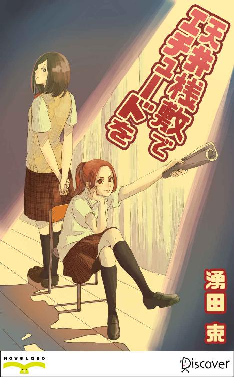

| 天井桟敷でエチュードを | |
| 湧田束 | |
| (2015) | |

天井桟敷でエチュードを
湧田 束
イラスト 洵
女の涙ほど厄介なものはない。
何の前触れもなく唐突に突きつけられた先鋭極まりない武器には、男は成す術もなく困惑するばかりだ。オレンジ色の夕陽が射し込む放課後の教室で、俺はそんな理不尽さを否応なく思い知らされることになる。
一学期の中間テストで赤点を連発した俺は、当然のごとく職員室に呼び出されていた。「このままじゃ三年に進級できんぞ」冷ややかに告げた担任の言葉が頭の中をぐねぐねと渦巻く中、職員室を後にした俺は茫然自失として廊下をフラフラと歩いていた。
「留年......お、終わった。フヒヒヒヒ」
自棄気味に引きつり笑いを浮かべる俺と目が合った一年生の女子が、不審者でも見るかのように壁際に身を寄せる。なにせシニカルとペシミスティックの塊が、アンチテーゼの服を着て笑いながら歩いてきたのだ。さぞかし薄気味悪かったに違いない。
だがこの時の俺には、周りのことを慮るような心の余裕など、到底あろうはずもなかった。そもそも俺は予知能力者でもなければ、特段に勘の鋭い方でもない。これから訪れる教室の中で何が起きているのかを事前に想定し得る脳みそがあれば、留年で悩むことなどありえないのだ。
圧し掛かってくる脱力感と虚無感に飛び切り大きな溜息をつきながら、俺は力なく教室のドアを開けた。だが誰も居ないと思った放課後の教室に、一人だけ女子生徒が残っていた。ドアがスライドする音を聞き、机に突っ伏していた女子生徒は驚いた様子で顔を上げる。その目は真っ赤に充血し、頬には明らかに涙の跡が濡れ残っていた。
「......」
茫然と入口に立ち竦む俺を見て、彼女は慌てて制服の裾で頬を拭う。
作間梓子の泣き顔を見たのは、もちろん初めてだった。普段はクラスの中でも快活な彼女のすっかり憔悴しきった様子に、俺は気の効いた台詞がまったく思いつかず、「お、おう」などと挨拶とも独り言とも取れない言葉で場を濁しながら教室におずおずと忍び入る。
強張った愛想笑いを浮かべる俺を、彼女は泣き腫らした目尻を上げて睨みつけてきた。
「あんた、何してんのよ」
「え？ お、俺は職員室に。先生に呼ばれててさ。あははははは」
「何が可笑しいのよ」
「はは......は」
飛び切り気まずい雰囲気の中、俺はそそくさと自分の机に戻って鞄を抱える。こういう時は早めに退散するに限る。「じゃあお先に、ご機嫌よう」と言って教室を出ようとする俺のブレザーの襟首を、駆け寄ってきた彼女が背後からむんずと掴む。
「ちょっと待ちなさいよ。何で逃げるのさ」
「いや、決して逃げているという訳ではなく......俺には家に帰って勉学に勤しむという学生の本分が云々かんぬん」
「なに言ってんの。落第寸前のくせに」
いかん。やはりすこぶる機嫌が悪い。さっきまで目を腫らして泣いていたのだから、上機嫌のはずもないのだが。
「あんたさ」俺の襟首をぐいと引っ張り、彼女は顔を近づけてくる。眉間に寄せた皺の本数を数えたくなるくらい恐ろしげな顔だ。「見たでしょ」
「な、なにを？」
「私が泣いてるのを、よ」
眉をハの字、口をヘの字にして彼女がさらに詰め寄ってくる。その吊り気味の大きな瞳に、頬をピクピクと引きつらせた俺の表情が映り込んでいた。独自のオートノミーを形成する高校という集団において、比較的お気楽な立場で世俗に疎い振りをしている俺のような人間でも、彼女の涙の理由は分かっていた。
今週の月曜日、演劇部の内紛を新聞部が写真入りですっぱ抜いたのだ。学校新聞には次期演劇部部長の三ツ橋綾香の胸倉に鬼の形相で掴みかかっている作間梓子の写真が、『演劇部、内部抗争勃発！』の煽り文句とともに掲載されていた。それ以来、演劇部が分裂するだの新演劇部が発足するだのといった噂話で校内は持ちきりだった。普段はスクールゴシップなど鼻であしらう世捨て人気取りの俺にさえ、その騒動のことは耳に入っていた。
相変わらず仏頂面で睨みつけてくる彼女に、俺は敗残兵のように無抵抗で諸手を上げる。
「俺は何も......」
「どうせあんたも知ってるんでしょ、私が演劇部から追い出されたの」
「そ、それは......」
口篭る俺を見て、ようやく彼女は襟首から手を放す。締めつけられていたシャツの首元を緩める俺を余所に、彼女はオレンジ色の夕陽の射し込む窓枠に両手をついて、「ふぅう」と、聞いているこちらが気重になるくらいの大きな溜息を漏らす。
なるほど。彼女は俺に文句を言っているのではなく、単に憂さ晴らしをしているだけだ。要は誰でも良かったのだが、偶然そこに居合わせたのが俺だったということだ。俗にいう『地雷を踏んだ』というやつか。
とはいえこちらだって留年するかどうかの瀬戸際なのだから、正直よその部活の揉めごとなどに首を突っ込んでいる場合ではない。そもそも目の前の作間梓子とは単なるクラスメイトであって、実際にほとんど話もしたことがないのだ。
「じゃあ俺、そろそろ......」
じりじりと後ずさりする俺に、小さく唇を噛んだ彼女が言う。
「でも平介。私、まだ諦めてないからね。絶対あいつらに、目にもの見せてやるんだから」
彼女の言う「あいつら」とは、きっと演劇部員のことだろう。それよりもなんでいきなり下の名前で呼ぶんだ、あんた俺とそんなに親しくないだろ、と心の中で思う。
頭の後ろで束ねた赤毛の髪をオレンジ色の陽射しに靡かせて、彼女は再び俺の方に向き直る。
「そうか、平介って文芸部だったわよね。なら小説書けるんでしょ」
「は、君なに言ってんの？」
唐突に話を振られ、俺は思わず素っ頓狂な声を上げる。何だか雲行きが怪しくなってきた。俺はいちおう文芸部に所属しているものの、小説など書いたことはないし、それどころか本もほとんど読んだことのない、名前だけの幽霊部員だ。
訝しげな表情を浮かべる俺のことなど全く気にする様子もなく、彼女はニイっと意味ありげに口の端を上げる。
「じゃあ平介、あんたこれから新演劇部の脚本担当ね。これで新演劇部の部員第一号決定ってことで。じゃあこれからどんどん部員集めるわよ」
「いや、あのさ。ちょっと俺の話を......」
「さあて、忙しくなるわよ。新しい部室も探さなくちゃいけないし、サークルの名前も考えなきゃ」
何だかよく分からないが一人で盛り上がっている彼女を半眼で眺めつつ、俺はやれやれと首を横に振って踵を返す。
「ったく付き合いきれん。一人でやって......」
だがその言葉を言い終える前に、目にも止まらぬ速さの裏拳が俺の頬を掠めた。寸止めした拳に飛び切りの殺気を込めたまま、彼女は冷ややかに目を細める。
「何か言った？」
「......いえ、何でもないっす」
確か彼女は空手の有段者だった気がする。まさに無理が通れば道理引っ込む。そのあまりに強引な勢いに、俺はただ壊れた張子の虎のごとくカクカクと頷くことしか出来なかった。
夕焼けの斜光が教室を包む中、こうして俺は背中をつたう冷たい汗とともに、『鳴城学園第二演劇部（後の鳴城学園エンターテイメント・クラブ・テアトル〔ＭＥＣＴ〕）』の栄えある部員第一号となったのである。
「平介先輩、見て見て！ 今日のお弁当、るちるのお手製なんですよぉ」
部室に足を踏み入れた途端、坂上るちるが弁当箱を俺の顔にぐいぐいと押し付けてくる。
「......お前、何やってんの？」
「お昼ごはん！ 今日は腕によりを掛けて、味噌煮込みおでん弁当を作ったんですぅ」
「し、汁物！」
俺は頬に飛び散った汁の飛沫を指で拭いながら、錆びたパイプ椅子に座る。部員たちのコミュニケーションと打ち合わせを兼ねて、昼食は学校の屋上に建てられたこの仮設プレハブの部室で食べる決まりになっていた。もちろん言い出したのは梓子だ。しかし仮設とはいえ、屋上を自由に使える部室を学校側に用意させた梓子の交渉術には、舌を巻くしかない。顧問の米倉先生に後で聞いた話だと、梓子はかなり強引な方法で学校側と生徒会を押し切ったらしい。「胃に穴が開いた」と話す米倉先生があまりに不憫だったので、俺もそれ以上の話は聞いていない。
去年の秋、放課後の教室で梓子の強襲を受けてから、半年が経っていた。
結局あの後演劇部は完全に分裂し、従来の『演劇部』と、俺たちが所属する『第二演劇部』に分かれた。ただ、『第二』というのがランク的に下に見られるのを嫌った梓子は、第二演劇部を『鳴城学園エンターテイメント・クラブ・テアトル（ＭＥＣＴ）』と改名する。今の部員は梓子と俺を含めて六名。公演に必要な最低人数だけは、半年の間に何とか集めることができた。
ちなみに俺もかろうじて留年を免れ、無事に高校三年生を迎えていた。毎年留年と戦い続けながらも、ギリギリの所で勝ち続ける自分を褒めたやりたい気分だ。
パイプ椅子にもたれかかって背伸びしながら、俺は室内を見渡す。
「あれ、今日は梓子は来てないのか？」
「放課後に部長会があるから、昼休みはその準備らしいですよ」
ランボオの詩集を読んでいたナルオが、前髪をさらさらとかき上げながら答える。
「また『あちらさん』と揉めるんじゃないだろうな。なんだかんだ言って、生徒会も部長会もうちの部には風当たりが強いから」
「きっと大丈夫ですよ。作間部長も、さすがに大っぴらな荒事は避けるでしょうから」
「そうだと良いけどさ」
椅子に座ったまま手を伸ばして立て付けの悪い窓を開けると、五月の爽やかな風が狭いプレハブの室内に吹き込んでくる。俺の言う『あちらさん』とは、もちろん演劇部のことだ。
俺の向かいの席でさっきから前髪をしきりに気にしているのは、二年生のナルオ。本名は南條成臣。スカしたヤサオトコだが、梓子が演劇部から引き抜いただけあって芝居の実力は確かだ。演劇部でもトップクラスの花形男優だったので、女子生徒の間にはファンクラブさえ存在しているらしい。ちなみに『ナルオ』という呼び名を『成臣』の省略形だと思っているのは本人だけで、実は『ナルシスト男』に由来している。
だがこうした引き抜き行為が演劇部との仲を更に険悪にしていることは言うまでもなく、梓子曰く、『生き馬の目を抜くほどの臨戦態勢』ということらしい。困ったものだ。
「あ、そういや秋公演用のパンフと仮台本、印刷所に取りに行くんだった。忘れてたぜ」
逆毛を立てたような髪をばさばさと掻いて椅子にふんぞり返っているのは、武谷以蔵。俺と同じ三年生だ。
「またかよ。梓子にどつかれるぞ」
「あー参ったぜ」
以蔵は面倒くさそうに舌を鳴らす。こいつは元々軽音楽部で、去年の秋の文化祭の時に観客相手に大暴れして強制退部になったところを、梓子にスカウトされた経歴を持つ。音楽をやっていたこともあり、メインの担当は音響と照明。舞台設営や大道具も俺と一緒に担当している。
「はい平介先輩、あ～んしてぇ」
そしてさっきからおでんの卵を俺の眉間に押し付けながら黄色い声ではしゃいでいるのは、坂上るちる。今年入ったばかりの一年生だ。なんでも入学してすぐ、校内を歩いている所を突然梓子に簀巻きにされてこの部室に連れてこられたらしい。拉致だそれ。演劇に関してはズブの素人らしいので、どちらかといえばＭＥＣＴのマスコットキャラ扱いとなっている。担当は小道具とその他雑用。
「まったく......」
そして味噌味のおでん卵を咀嚼している俺は、瀬尾平介。名前だけの文芸部員だといくら説明しても梓子には納得してもらえず、結局脚本制作担当にさせられてしまった。第一号部員という口車に乗せられて、脚本以外にも大道具、舞台設営、演者、対外交渉その他もろもろの雑務と、メンバーの中でもやたら仕事が多い。要するに体の良い雑兵だ。
弁当箱を広げながら、俺は訊ねる。
「あれ、そういや四人しか居ないな。梓子が来ないのなら、あと一人......」
そう呟いた瞬間、勢いよく入口のサッシ戸が開いて甲高い声が室内に響き渡る。
「皆さん、お待たせ。お楽しみのランチタイムやで～」
「プ、プラットナー......」
ウェーブのかかった金色に輝く髪を靡かせて部室に入ってきたのは、三年生のプラットナー・ツェマリング。ドイツからの交換留学生だ。
「今日はウチ、サンドイッチ作ったんやで。ほらほら平介はん、見てぇな。ゲルマン直伝のブレートヒェンから作ったんやで」
サンドイッチの入ったバスケットを、プラットナーはぐいぐいと俺の顔に押し付けてくる。どうしてうちの部の女子連中は、こうも弁当を自慢したがるのか。
「最近は郷土文化研究会と歴史同好会に顔出してたわ。国語の先生にもうちょい日本語の勉強せえ、言われてな。特別招待生もなんやら忙しいわ」
俺の隣に座ったプラットナーは、短いスカートから覗くすらりと伸びた足をおもむろに組み替える。ベタベタな関西弁とのギャップさえ気にしなければ、プラットナーは雑誌から抜け出てきたモデルばりの容姿をしている。ファッションデザインに興味があるという理由で、部内では衣装担当。
「ぶ、ぶれえと...ひゆえん？」
坂上るちるは、さっきからブレートヒェンが気になって仕方がないようだ。バスケットからレタスやトマト、チーズ、ハムなどが挟まれた小ぶりな丸いパンを次々に取り出しながら、プラットナーが言う。
「ブレートヒェンは、少し固めに焼き上げるのがコツや。ライ麦粉を練りこんでる分、香ばしくて味がしっかりついてるんやで。みんなの分もあるから一緒に食べようや」
「やったぁ。良い匂いですぅ」
小動物のように頬を膨らませて一心不乱にブレートヒェンを齧る坂上るちるを横目に、プラットナーが俺に話しかけてくる。
「そういや平介はん。大会用のシナリオ、もう仕上がったんかいな？」
「い、いやそれは......」
俺は箸を咥えたまま言葉を濁す。提案したプロットがことごとく部長の梓子に却下されていたため、実のところ脚本制作はまったく進んでいなかった。今日の放課後も部員の中で俺だけが居残り、梓子とシナリオの打ち合わせをしなければならなかった。
手鏡を手にしたナルオが、前髪を指で弄びながら口を挟んでくる。
「そういえば作間部長が愚痴ってましたよ。『平介の脚本の出来が悪くて頭が痛い』って」
「おお、先輩である当人を目の前にしてはっきり言うか」
口を尖らせる俺を見て、ナルオは意味深な笑みを浮かべる。
「でも仕方ありませんよ、平介先輩は経験が少ないですから」
「む、何だか含みのある言い方だな」
眉をひそめる俺を宥めるように、プラットナーが甘いカスタードクリームを塗ったブレートヒェンを差し出してくる。
「ナルオはんの言ってる『経験』ってのは、脚本の執筆経験だけちゃうで。今回のシナリオは『高校生の青春群像』がテーマやろ。となれば当然、恋愛要素も強くなるっちゅうことや」
「ん、どういうことだ？」
「『ん、どういうことだ？』やあらへんがな。相変わらず平介はんは素っ惚けやなあ」プラットナーは人差し指を左右に振って、チッチッと舌を鳴らす。「恋愛物語を描くんなら、それなりにリアルな体験も制作者には求められるっちゅうことや。しかも実際に俳優が演じる舞台やから、仕草ひとつにしても、より具体的な感情表現が必要になってくるしな」
「む、むう。確かにそれは......そうだけど」
腕組みして唸る俺に、プラットナーは艶かしい視線を送りながら科を作って寄りかかってくる。
「そんでな、ひとつ提案やけど。ここは恋愛経験豊富なウチを主役に抜擢してな、臨場感と外連味溢れる舞台にするっちゅうのはどない？」
「は？」
「ほらウチが主役なら、きっと観に来た客も喜ぶで。ウチもせっかく日本に来たんやから、舞台の上で煌びやかなスポットライトを浴びてみたいんやわ」
「なんだ、結局配役の根回しじゃないか」
「ええやんかあ、脚本家の平介はぁん」
プラットナーは鼻にかかる甘ったるい声を出しながら、はち切れんばかりのブラウスのボタンをはずして胸の谷間を見せつけてくる。俺はかろうじてその豊満な胸元から視線を逸らし、油の切れた機械人形のようにギシギシと首を窓の外に向ける。
「そ、それは部長の梓子が決めることで......お、俺には何の権限も無いのだ」
「そんなイケズ言わんとぉ」
青い瞳を潤ませたプラットナーが、上目遣いでしなだれかかってくる。ごくり、と唾を飲む俺を見て、坂上るちるが栗鼠の頬袋のように頬を膨らませる。
「平介先輩、騙されちゃダメですよぉ。プラットナーさんの色仕掛けは、最優秀主演女優賞ものなんですから」
「く、演技かよ」
「あはは、ばれたかいな。でも配役のことは、ちいっとでええから考えといてや」
カラカラと笑ってボタンを留め直すプラットナーを横目に、俺は苦笑いしながら人差し指で頬を掻く。
クセ者ぞろいの部員たちの様々な思惑が絡み合う中、最大の障壁は部長の梓子だった。梓子は役者もやりながら、舞台では総監督も務めている。もし俺が脚本のキャスティングに口添えするのならば、あの飛び切り強引な性格の梓子を説得しなければならない。「あんた何言ってんの？」と頭を小突かれるシーンが予知夢のごとく鮮明に頭に浮かび、ますます放課後の打ち合わせが気重に感じられていくのだった。
＊
シナリオの打ち合わせが始まって三時間、時計の針はすでに夜の九時を回っていた。他の部員たちがとっくに帰宅したプレハブの部室には、俺と梓子の二人だけが残されていた。苛立たしげに脚本の頁を捲りながら、部長席に座った梓子が頭の後ろで束ねた赤毛の髪をかき上げる。
「十六ページのシーン５―２。舞台の暗転で時間の経過を示すから、教室での台詞を分かり易く変えること。あと二十ページのヒロインと会話する場面、主人公の台詞が単純すぎるわ。もう少しウィットに富んだ会話にして。要変更」
「りょ、了解」
「次にシーン７―３。どうして急に主人公はヒロインを抱きしめたの？」
「え、いやほら......愛情表現ってやつで」
たどたどしく弁解する俺の頭を、梓子が赤いボールペンでコツコツと小突く。
「あんた発想が小学生並みね。その割に台詞の言い回しは硬過ぎるし。恋人同士なら、もっと自然に会話すべきでしょ」
「う、ううむ」
歯ぎしりしながらも、俺は真っ赤に書き込まれた脚本を恨めしげに見つめることしか出来なかった。こうなることは最初から分かっていた。経験豊富な検事相手に、弁護士なしで被告人席に立たされている気分だ。検事は鋭い眼光で、被告人である俺を更に責め立ててくる。
「全体的に構成が悪いわ。だから物語の中盤が間延びし過ぎるの。あとシーン８のショッピングモールでの場面。舞台背景を用意できないから場所変更ね」
「え、そこもかよ」
「ってか予算考えなさいよ。好き勝手に場面ばっかり増やしてどうすんの」
両手を頭の後ろで組んだ梓子は、憮然とした表情で椅子から身を逸らせる。
不穏な空気に包まれる室内で、俺はクリップ留めした脚本を捲りながら梓子の様子を覗き見る。吊り気味の大きな瞳に端整な顔立ち、スレンダーな体型にすらりと伸びた手足。性格のキツさを除けば、鳴城学園の中でもプラットナーや演劇部の三ツ橋綾香と並ぶほどの美人だというのは俺だって認める。これまでに容姿端麗な梓子に告白した根性のある男子生徒が数名居たらしいが、全てその場で三分以内に玉砕したという逸話が残っている。その結果梓子に付いた異名が、『撃墜女王』だ。
「はあ、これじゃちっとも終わらないわね。前途多難だわ」
電気の切れかけた蛍光管を見上げた梓子が、非難めいた溜息を漏らす。昼間のプラットナーの根回しを思い出した俺は、梓子の気分を逆撫でしないようにできる限り穏便な口調で告げる。
「あ、そういや。キャスティングってさ......」
「配役はオーディションで決めるわよ。公平に」
「と言っても、男子はナルオが主役で決まりだし。なら女子、特にヒロイン役は......」
言葉を言い終える前に、梓子が刺すような視線を俺に向ける。
「あんた何言ってんの？ まさかあんた、色仕掛けで買収された訳じゃないでしょうね」
「え......い、いや。決してそんなことは」
冷たい汗が一瞬で全身から吹き出す。まるで昼間の俺とプラットナーのやりとりの一部始終を知っているかのように、梓子は冷ややかな眼差しを投げ掛けてくる。もしや監視カメラで見張られているのではないかと慌てて室内を見渡してみるが、当然そんなものは見当たらなかった。だとすれば、梓子は万物を見通すことのできる千里眼でも持っているというのだろうか。
「でも千里眼って確か......鬼の持つ特殊能力だった気が」
「ん、何か言った？」
「いや、何でもないっす」
俺は慌てて脚本に目線を戻す。触らぬ神、いや、鬼に祟りなし。ここは大人しく引き下がった方が良さそうだ。プラットナーにはオーディションで目一杯頑張ってもらうしかない。そんな俺に口を尖らせつつ、梓子がローファーの踵を床にコンコンと鳴らす。
「でも平介、あんたもうちょっと脚本の勉強しなさいよね。シナリオの書き方、文芸部の人にレクチャーしてもらってるんでしょ」
「あ、ああ。そうだな、明日もう一度聞いてみるよ、うん」
照れ笑いしながら頭を掻く俺を見て、梓子がすかさず眉をひそめる。
「なんかあんた、嬉しそうね」
「いや、そんなことないけど。あはははは」
「ふうん......」
含みのある表情で相槌を返した瞬間、梓子は突然俺の座った椅子に飛び乗ってくる。
「すこぶる怪しいわ！ あんたが私に隠しごとするなんて、千年早いんだからね！」
対面座位の格好でまたがり俺の頬を千切れんばかりに引っ張ってくる梓子に、俺はひたすら手足をばたつかせてもがく。
「ひてないひてない！ 隠ひごとはんてひてない！」
「吐・く・の・だ」
ＭＥＣＴに加入して以来、いつの間にか俺と梓子の間には明確な主従関係が成立していた。男子高校生なら誰もが思い描く、華やかで色香のある学園生活を過ごす夢など、どうやら俺には永遠に叶いそうにない。
仁王様のような形相で、梓子は俺を睨みつけてくる。
「とにかく脚本の改稿、来週までに上げなさいよね！ もう一度打ち合わせしてちゃんと出来上がってなかったら、今度こそ首を引っこ抜くからね！」
「ふぁ、ふぁい」
撃墜女王の異名はダテじゃない。どんな状況でも道理を引っ込ませるＭＥＣＴの女帝、それが作間梓子なのである。
翌日の放課後、俺は真っ赤に手直しされた脚本を持って文芸部の部室へと向かっていた。目的はもちろん、梓子に指摘されたシナリオの修正を請うためである。
おずおずと文芸部室のドアから部屋の中を覗き込むと、文芸部員たちは椅子を円状に寄せて小難しそうな詩を朗読している最中だった。そこには俺の知らない一年生らしき新入部員の顔もちらほらと見えた。俺に気付いた文芸部長の荻野千秋が、詩を読み上げるのを止めて、「またあ」と露骨に眉をしかめる。
「いやあ、悪いっす」俺が頭を掻きながら部室に入ると、荻野は今時珍しい渦巻き眼鏡のフレームを中指で押し上げる。
「作間さんの頼みだから手伝ってるけど、本当はあんまりＭＥＣＴには協力したくないのよねえ。生徒会に目を付けられそうだから」
「まあまあ、そう言わずに。同じ文芸部員のよしみで」
「なに言ってんの。瀬尾なんて全然文芸部の活動してないでしょ。みんな、こんな幽霊部員にはならないようにね」
荻野がそばかす混じりの頬を膨らませる。苦笑する文芸部員たちの間をすり抜けて俺は荻野に近づくと、他の部員たちから見えないように一枚の生写真を手渡す。
「今日のところは、これで」
それはホストばりにポーズを決めたナルオの生写真だった。涎を垂らさんばかりに口元を緩めた荻野は、しれっとその生写真を制服のポケットに忍ばせる。
「もう、仕方ないわねえ」
荻野がナルオのファンクラブに入ってることは、とっくにリサーチ済みだ。『役に立つものは本物の猫の手でも使う』という梓子の方針により、女子生徒に人気のあるナルオは常に対外的な交渉材料として使われていた。生写真はもとより、ここぞという時には『南條成臣と一日デート券』などというものまで交渉の裏オプションとして存在している。人身売買だそれ。
荻野はコホン、と一度咳払いしてから、輪の中にいた一人の部員に声を掛ける。
「奈々緒さん。度々で悪いんだけど、瀬尾の脚本の直しを手伝ってあげてくれない？」
「ええ、大丈夫です」
詩の本に栞を挟み、清楚な仕草でゆっくりと椅子から立ち上がったのは、三年生の伊澤奈々緒さんだった。彼女は柔らかく俺に微笑みかけると、部室に隣接するドアの方に促す。
「じゃあ荻野部長、隣の書籍室を借りますね。どうぞこっちに、瀬尾くん」
「あ......どうも。よろしく」
俺は軽く手を挙げて気取って見せたが、内心は激しく打ち鳴らす鼓動を抑えるのに必死だった。彼女のセミロングの髪から香る甘い匂いに誘われるようにフラフラと後に続く俺の襟首を、荻野がぐいと引っ張る。
「まったく鼻の下伸ばしちゃって。二人きりになったからって、うちの部員に手出したら承知しないわよ」
「な、なに言ってんだよ。脚本の直しを見てもらうだけだって」
「奈々緒さん。瀬尾にちょっとでも触られたりしたら、すぐに悲鳴上げるのよ」
「バ、バカか！ ミスター紳士な俺が、そんなことする訳ないだろ」
「どこかミスター紳士よ。見るからに煩悩丸出しの色欲マスターじゃないの」
「変な呼び名つけるな。いいからあっち行けって」
慌てて荻野を追い払い、俺は急いで書籍室の扉を閉める。
「ま、まったく荻野のやつ、なに言ってんだかな。あ、あはは」
目を細めて柔らかい表情を浮かべた奈々緒さんは、部屋の奥から二脚のパイプ椅子を運んでくる。
「あ、俺も手伝います」
「ありがとう」
書籍室は片側の壁一面が本棚で、通路に椅子を並べると、人ひとりが通るのもやっとの狭い構造になっていた。だが二人で打ち合わせする程度であれば、空間的には全く問題ない。両膝を揃えて椅子に座る奈々緒さんと向き合い、俺もぎこちなく腰を下ろす。
古い本のくすんだ紙の匂いが微かに漂う室内に、ひとときの沈黙が訪れる。こういう場合は、やはり世間話から会話を始めるべきだろうか。天気の話はありきたりだし、かといって勉強の話は毎年留年と戦っている俺にはタブーだ。同じ文芸部なのだから本や作家の話が出来れば最適なのだが、あいにく全く読書をしない俺には何ら文芸の知識がない。小さい頃から漫画ではなく本を読んでおくべきだったと、今更ながら後悔する。そんな風に話し出すきっかけをあれこれ思案していると、奈々緒さんが、少し頬を赤らめてぽつりと話しかけてくる。
「実は私、詩の朗読ってあんまり得意じゃないんです。だから......瀬尾くんが来てくれて助かりました」
「そ、そっか。今日は何を？」
「ヘルマンとドロテーア。ゲーテの叙事詩です」
「ゲ、ゲーテって有名なのは......ウィリアム・テルだっけ？」
「ウェルテル。『若きウェルテルの悩み』」
口にそっと手をあてて、静かに彼女は微笑む。決して口数は多くないが、それはまさに知性と慈愛に溢れた女神のごとき佇まいだった。脚本に改稿が入る度にこうして彼女と一緒の時間を共有することだけが、普段ＭＥＣＴで虐げられている俺にとって唯一癒される時間だった。
正直に言おう。俺が文芸部に入った理由は、目の前の奈々緒さんの存在があったからだ。そうでもなければ、本すらまともに読んだことのない俺が文芸部に入る訳がない。とんでもなく不純な入部動機なのだが、開き直って言わせてもらえば、そんな道理が熱情に盲目となった人間に通じるはずもないのだ。
今でもはっきりと覚えている。あれは高校に入学してしばらく経った五月の放課後。あの頃の俺は華やかな高校生活とは全く無縁の存在で、別にやりたいことも将来の夢なんてものもなく、ただ隠者気取りで物事を斜に受け流しているような人間だった。漠然とルーチンワークのごとく毎日学校へ通い、上下関係が面倒くさいからと部活にも入らず、家に帰ってもだらだらと寝転がってゲームをやるか漫画でも読むか、要はその程度しか楽しみのない灰色の高校生活を送っていた。
自分でも、凡庸でつまらない時間を過ごすのが人生なんだと思っていた。そう、あの日が来るまでは。
その日もエクトプラズムが抜け出したように生きているのか死んでいるのか分からない風体でぼんやりと校門に向かっていた俺に、チラシを持った一人の女子生徒が突然話しかけてきた。
「あの......良かったら文芸部に入りませんか？」
彼女が勧誘のチラシを差し出しながら告げたのは、その一言だけだった。俺は半分皮肉めいた苦笑を口元に浮かべながら、そのチラシを受け取る。
「文芸部ねえ、俺が」
「その......きっと、新しい世界が待ってますよ」
その女子生徒は恥ずかしそうに頬を染めながら、でも目をキラキラと輝かせて言った。真新しい制服を着ていたので、おそらく俺と同じ一年生だとすぐに分かった。入部早々チラシ配りをやらされているのかと気の毒に思ったが、彼女の口調は嫌々やっているようには見えなかった。立ち止まって勧誘チラシに目を通す俺に、彼女は俯き加減で告げた。
「良かったです。チラシをちゃんと読んでくれる人が居て」
「あ......そうなんすか」
しまった、と思う。こういう場合、チラシを受け取ったらさっさと立ち去るべきだったのだ。世捨て人気取りの癖に妙な所で律儀な性格を、俺は常々恥ずかしく思っていた。人差し指で頬を掻きながら、俺は苦笑いする。
「でも俺、小説とか全然読んだことないし、どっちかといえば苦手な方なんで。だから文芸部はちょっと無理そうかな」
チラシを返そうとする俺に、彼女は小さく首を横に振る。
「それは差し上げます。何かを変えるきっかけが、ほんのちょっと足を踏み出せば見えてくるかもしれないから」
「......」
目を細めて微笑みかけてくる彼女のセミロングの髪が、爽やかな五月の風に靡いていく。木漏れ日の合間から降り注ぐ太陽の粒子に照らされた彼女の笑顔が、俺にはとても眩く感じられた。
分かっていた。彼女が下校する何十人もの生徒に文芸部のチラシを配って同じ言葉を投げかけていることくらい。明日になれば、きっと彼女が俺の顔など覚えていないことも。けれどそんなことより大切なのは、彼女が俺の淀んだ心の水面に落とした一粒の波紋。その波紋は同心円状に広がり、結果的に俺の心の中に大きな波を起こしたのだ。
（何かを変える......きっかけ）
家に帰ってベッドに寝転んでも、彼女の言葉がいつまでも頭から離れなかった。おそらく彼女は普段はとても物静かな人で、同じ学校といえど知らない生徒に気軽に話しかけたりする性格じゃないのだろう。それでも勇気を振り絞って、見知らぬ俺に声を掛けてきた。きっとそれも、彼女にとって『何かを変えるきっかけ』に成り得ることなのだ。
「ほんのちょっと......踏み出すこと」
天井を見上げてぽつりと呟いた後、俺は弾機のごとくベッドから跳ね上がる。そしてその翌日、俺は入部届けを持って文芸部のドアを叩いていた。
書籍室の片隅で脚本を見ながら、奈々緒さんは華奢な指を顎に当てて考え込む。
「夏祭りのシーンは中盤のメインになるから、前後の場面の入れ替えをした方が良いかもしれませんね。祭り時期の設定をもう少し早めにした場合、それまでの会話との整合性は......」
彼女のひとつひとつの清楚な仕草に、俺は目尻を下げてすっかり見惚れていた。その視線に気付いた彼女が、上目遣いで小さく唇を尖らせる。
「もう、瀬尾くん。ちゃんと聞いてますか？」
「あ、聞いてます聞いてます」慌てて脚本に目を落とす。荻野の物言いではないが、このままでは本当に色欲マスターになってしまいかねない。「そ、そういや。祭りのシーンをもっと盛り上げろって、梓子に言われてたんだった」
「盛り上げるっていうのは、主人公とヒロインの関係性を、ってことですよね」
「そう。直接的に抱きしめるとか愛の言葉を吐くんじゃなくて、もっとこう......なんて言うんだろ」
「何気ない会話や仕草で、二人の情動やニュアンスを伝えるということ、かな」
「そうそう！ でも何と言うか......俺、そういうのよく分かんなくて」
昨日部室でナルオに言われた『経験不足』という単語がちらと脳裏を掠め、俺は苦笑混じりにボールペンで頭を掻く。奈々緒さんもそのことに気付いたのだろう。照れくさそうに頬を赤らめて、ぽつりと呟く。
「そうですね。私もあまり......男女の恋愛関係のことは」
微妙な沈黙が流れる中、台本のページの隅をもじもじと指で弄っていた奈々緒さんが慌てて話題を変える。
「そ、そういえば。この地域でも八月に夏祭りがありますよね」
「あ、ああ。そうですね。けっこう露店も出るし花火大会もあるし。田舎町にしては割と大きな夏のイベントだから......」
そこまで言って、ふと思う。これはもしや、祭りに彼女を誘う絶好のチャンスではないのか、と。腕組みして脚本を練り直す振りをしながら、誘いの言葉を考えてみる。
『じゃあ今度の祭り、お互いの恋愛経験を深めてみないか？』――いやいや、直接的過ぎるな。
『夏という季節を謳歌する、恋人達の素行調査に赴くのだ』――硬いな。逆にアホみたいだ。
いや、冷静に考えろ。夏祭りに女の子を誘うくらいは、この状況であれば自然の流れだろう。動機は不純ながらも文芸部に在籍して早や二年。ほとんど活動には参加していないものの、同じ文芸部員として顔見知りになってからの期間も長い。それに彼女の周りには、不思議と彼氏や恋愛がどうのといった浮いた話のひとつも聞こえてこないではないか。男どもが牽制しあっているのか、彼女が天使過ぎて手が出せないのか、理由はよく分からないが。
ともかくこれは間違いなく神様が俺に与えてくれたチャンスに違いない。そう都合よく解釈した俺は、ボールペンを握り締めてたどたどしく口を開く。
「あ、あの......奈々緒さん」
「は、はい」
彼女は驚いたように脚本から顔を上げる。これはきっと誘いを待っている表情に違いないと脳内で勝手に変換した俺は、バクバクと打ち鳴らす鼓動を抑えつつ矢継ぎ早に告げる。
「あのね。......な、夏のね。夏にはね、夏といえばですね。いやね、そのね。あはははは。ななななななななつのね、おまつりがね。おまおまおまおま......」
「は、はい。夏の祭りですね......それが」
「ちょちょっと待って下さいねあははははなんだかこの部屋暑いなあちょっと窓でも開けようかそうだ空気を入れ替えようあはははははははは」
俺は額からどっと吹き出る冷たい汗を拭いながら油の切れたぜんまい人形のようにぎこちなく立ち上がると、廊下側の窓に近づき曇りガラスに手を掛ける。カタカタカタカタと震える手で窓を開けた瞬間――。
「何やってんの？ あんた」
「おわっ！」
曇りガラスの向こう側で仁王立ちしている梓子に、俺は思わず腰を抜かしてしまう。
「相変わらず挙動不審ねえ、あんたって」
床に座り込む俺を平然と見下ろしたまま、梓子は窓枠に頬杖をついて書籍室を覗き込んでくる。
「お、前こそ、何やってんだよっ！」
「はあ？ あんたが文芸部からなかなか帰ってこないから、迎えに来たんじゃないの」
「ぬ、盗み聞きしてたんだろっ」
「なによ人聞きの悪い。そもそも聞かれて都合の悪い話でもしてたの？」
「い、いや......そうじゃないけど」
墓穴を掘りそうになり慌てて口篭ると、窓を乗り越えて入ってきた梓子が俺の襟首をむんずと掴む。
「はいはい、脚本の打ち合わせは終了。あんたは大道具の仕事もあるんだから、そんな悠長にしてる暇はないのよ」
「いや、まだ打ち合わせ始めたばっかりで......ちょ、ちょっと待てって」
「ほら行くわよ。何が夏祭りよ」
「や、やっぱり盗み聞きしてんじゃないか！」
「まったくあんたって、目を離すと余計なことしかしないんだから」
梓子は俺の襟首をぐいと引っ張り、再び窓を乗り越えて廊下へと出る。呆気にとられた様子で立ち竦む奈々緒さんに、俺は両手を合わせ申し訳ないとジェスチャーで告げる。廊下をずるずると引きずられていく俺の姿を見て、彼女が微かに頬を緩めてくれたのがせめてもの救いだった。
＊
周囲の生徒達の視線など全く気にする様子もなく、梓子は俺の襟首を掴んだまま廊下をずかずかと大股で歩いていく。
「本当に色欲マスターね。女の子とあらば鼻の下伸ばして」
「お前さ、本当に俺の体に盗聴器とか付けてるんじゃないのか？」
慌てて制服のポケットを探る俺に、梓子は冷ややかに告げる。
「そんなことしなくても、単細胞なあんたの行動はお見通しなのよ。とにかく平介みたいなお調子者は、これから私の第一級監視下に置くことにするから」
「下僕じゃないっての。勘弁してくれ」
「......」
部室棟の階段の前まで来た時、梓子がようやく俺の襟首から手を放す。咳き込みながらシャツの首筋を緩める俺を余所に、梓子はやけに神妙な顔つきで立ち止まっていた。
「どうしたんだよ、梓子」
「しっ。静かに」
梓子は床に膝をつくと、階段を上がってくる足音に耳をそばだてる。規則正しく二列縦隊になった生徒の集団が階段の踊り場に現れたのを見て、梓子がすかさず俺に告げる。
「平介、あんたそこに居なさいよ。絶対に動かないこと」
「......梓子？」
俺が問いかける間もなく、梓子は助走をつけて階段の一番上から踊り場へとジャンプしていた。スカートの裾を靡かせる梓子が飛び蹴りを見舞う先に居たのは、演劇部長の三ツ橋綾香だった。
「三ツ橋っ！」
「ふん」
梓子の渾身の蹴りを、三ツ橋綾香は不敵な笑みを浮かべたまま紙一重でかわす。梓子の足が踊り場の壁にめり込み、コンクリートが円周状にひび割れる。軸足をバレリーナのように回転させた三ツ橋綾香は、その勢いのまま梓子に高速の裏拳を打ち込んでくる。
「ちいっ！」
梓子は体勢を崩しながらも、三ツ橋綾香の拳をアームブロックで防ぐ。衝撃音が辺りに鳴り響く中、梓子の体が踊り場の隅まで数メートルも弾き飛ばされる。
「おほほほほ。梓子さん、不意打ちとは相変わらず卑怯ですわね」
長い黒髪を靡かせてニヤリを笑った三ツ橋綾香が、前傾姿勢になって梓子の足を払いにくる。
「ち、小癪なっ！」
咄嗟に地面を蹴って足払いを避けた梓子は、ふわりと宙に身を翻して階段の中程に着地する。途中ピンク色の下着が完全に見えていたのだが、そんなことも全く気にならないほど鮮やかな身のこなしだった。僅か数秒の間に起きた倍速のごとき二人の攻防に、俺も周りに居た演劇部員たちも、唖然としたままその場に立ち竦むしかなかった。
立ち込めるきな臭い煙とともに、三ツ橋綾香が手に付いた埃をぱんぱんと払う。
「梓子さん、少しお太りになったんじゃありませんこと？ 動きが鈍いですわよ」
「ち、相変わらず口の減らない女ね」
さらさらの長い髪を掻きあげた三ツ橋綾香は、傍に居た付き人らしき演劇部員からおもむろに白いハンカチを受け取ると、丁寧に爪先を拭く。
「そういえばあなた方、秋の学園祭で公演を行うらしいですね。たった六人の部員で私たち演劇部と同じステージの上に立つとは、厚顔無恥にも程がありますわ」
「は、ちゃんと実行委員会の許可も取ってるわよ」
拳を前に突き出したまま臨戦態勢を崩さない梓子に対し、三ツ橋綾香は切れ長の瞳に嘲りの色を浮かべて言う。
「まあ、全国大会十年連続入賞中である我々演劇部の前座にもなりませんが、せいぜいドタバタコントで客席を温めておいてくださいませ」
「このっ！」
身を乗り出す梓子を、俺は慌てて背後から押し留める。
「や、やめとけって。また新聞部に写真撮られるぞ」
「......くっ」
珍しく悔しそうな表情で唇を噛む梓子を、三ツ橋綾香がふんと鼻で笑う。
「さ、行きましょう皆さん。ＭＥＣＴなどという小者に構っていたら、稽古の時間が勿体ないですわ」
ぞろぞろと数十人の演劇部員たちを引き連れた三ツ橋綾香が傍らを通り過ぎる間、今にも飛びかかろうとする梓子を俺は必死に押さえつける。それはまさに一触即発の状況だった。これまで噂には聞いていたが実際に目の当たりにすると、この二人の仲はまさに犬猿......いや、竜虎と言うべきか。
「あんた、覚えときなさいよ」
梓子はドスの効いた声を出して、三ツ橋綾香を睨みつける。それは明らかに悪役、しかも総じてやられ役の台詞なのだが、頭に血が上っている今の梓子には何を言っても通じそうにない。
三ツ橋綾香はそんな梓子の方を振り返りもせず、一度だけ長い髪を掻きあげて階段を上がっていく。二列縦隊で統制のとれた演劇部員たちが、表情を崩さずにきびきびとその後に続く。
「......凄え」
俺の口から洩れたのは、しごく正直な感想だった。
三ツ橋綾香。五十名以上の部員を束ねる現演劇部部長。百七十センチを超える高身長であるにも係わらず、可憐なヒロインから男役まで変幻自在にこなす花形役者であり、かつ舞台監督から脚本作成まで舞台に関わる全ての工程を自らの手で行う。武芸に関しては空手の有段者である梓子と同等以上のスペックで、しかも三ツ橋財閥のご令嬢ときている。周囲から『歴代演劇部最強』と言われる所以である。
演劇部員たちが立ち去り誰も居なくなった階段の踊り場で、梓子が苛立たしげに俺の手を振りほどく。
「もう、いつまで掴んでんの。早く放しなさいよ」
「あ、ああ。......悪い」
「まったく情けないんだから。男っていざという時に全然役に立たないんだし」
「いやいや。あんな怪物、誰も相手に出来ないって」
「......ふん」
口惜しそうに舌を鳴らすと、梓子は屋上のＭＥＣＴ本部へと向かっていく。どすどすと階段を上がるその足音が、積もりに積もった梓子の鬱憤を象徴していた。そして俺は苦々しく頭を掻きながら、草履持ちさながらその後に続くしかなかった。
気の早い蝉が鳴き始める七月に入ってからも、俺は秋の舞台公演用の脚本制作に追われる慌しい日々を送っていた。梓子の激しい叱責に連日晒されながらも、奈々緒さんの甲斐甲斐しい協力もあり何とか脚本も完成に近付いてきていた。文化祭公演の演目は『狐集池』、この地方を舞台とした高校生の青春群像劇だ。
だが案の定学業そっちのけだったツケが回って、夏休み前の俺の期末テストの結果は散々なものとなっていた。
追試終了のチャイムが鳴った瞬間、隣の席の以蔵が椅子の背もたせに寄りかかり、「お、お、終わったぜ！」と大きく伸びをする。
「テストが出来たのか、それとも来年も三年生をやる覚悟を決めたのか、どっちなんだ」
軽口を叩く俺に、以蔵はビシッと親指を立てて見せる。
「俺が留年するときゃ、お前も巻き添えにしてやるから覚悟しとけ。まあどっちにしても、これで気兼ねなく高校最後の夏休みを満喫できるぜ」
放課後に追試を受けていたのは俺や以蔵を含めて数人だけだったので、学校全体が普段より閑散としていた。足早に辛気臭い教室を後にした俺たちは、鞄を抱えて校舎の階段を下りる。
「そういや平介、学園祭用の脚本やっと仕上がったんだってな」
「まあ何とか。誰から聞いた？」
「奈々緒」
「......そういやお前、奈々緒さんと幼馴染なんだっけ」
「ああ、ガキの頃から近所でよ。昔っからあいつ泣き虫でさ、よく俺が助けてやったもんだ」
「......」
見た目はいかにもロッカーらしく厳つい風体のくせに、奈々緒さんと幼馴染とは。神様は何とエコヒイキなのか。ムカつくな以蔵、というか正直羨ましい。
ひと気のない下駄箱で靴を履き替えながら、俺はそれとなく以蔵に訊ねてみることにした。
「あ、あのさ以蔵。奈々緒さんって、他に何か言ってなかったか？ 脚本以外で......例えば俺のこととか」
「いやあ、なんも」
ワックスで立ち上げた髪を気にしながら、以蔵は素っ気なく答える。
「......」
俺は未だに奈々緒さんを夏祭りに誘えていなかった。モタモタしていると彼女が他の友達と祭りに行く約束をしてしまうのではないかと焦る俺の気苦労など露も知らず、以蔵は暢気にシャドーボクシングの真似ごとをしながら言う。
「舞台かあ。どうせなら、俺は派手なアクション芝居がやりたかったぜ」
「あのな。高校生の青春群像劇だっての」
「ちぇっ。苦手なんだよなあ、そういう微妙な感情表現とかってやつ。男と女がくっついたり離れたり、何だか気分がもやもやしちまうぜ」
「お前みたいに短絡的じゃないんだよ、普通の高校生は」
「ゴーホーライラクと言ってくれ。ちいっとばかし大雑把で野放図な方が、男はタフでいいんじゃねえの」
「......う、ううむ」
確かに以蔵の言うことも一理ある。俺だって男女の微妙な距離感が計れるほど、恋愛経験が豊富な訳じゃない。「じゃあ夏祭り、一緒に行こうよ」のたった一言すら、奈々緒さんに伝えることが出来ていないのだから。
杞憂ばかりに苛まれる俺を余所に、以蔵が白いシャツの裾をバタバタと扇ぎながら口を開く。
「そういや梓子が言ってたけど、ＭＥＣＴの部員全員参加で夏合宿やるらしいぜ」
「は？」
「秋は学園祭と高校演劇の地区大会もあるだろ。だから夏休みに高原行って合宿だってよ。二泊三日って言ってたかな。それが終わってからも、ずっと夏休み返上で稽古やるっつってたぜ」
「はあ。梓子にこき使われる姿しか、思い浮かばないんだけど」
顔をしかめる俺の肩を、以蔵が励ますように叩く。
「まあ、しゃあないさ。うちの姫サマのご機嫌を損ねないようにしとかなきゃな」
来週には手始めに部内オーディションも開かれ、いよいよＭＥＣＴも本格始動となる。そういう意味では、これまでのドタバタもほんの助走に過ぎなかったのだ。気重な心地で部室棟へと向かう俺に、以蔵が校門の方を指差して訊ねる。
「帰らねえのか？ 今日は部活休みだろ」
「ああ、脚本の仕上げ。明日には最終稿を出さないと、梓子にまたどやされるからな」
「へえ」と、以蔵は意外そうな顔をして言う。「ＭＥＣＴの活動に熱心なのは結構なんだけどよ、お前文芸部には顔出してるのか？ いちおうまだ兼部扱いなんだろ」
「うーん。最近は脚本関係以外じゃ、あんまりだな。たまに部室覗いて、ノートやパソコンに思いついたこと書き散らかしてるくらい。まあとっくに部長の荻野には見限られてるから、気楽にやってるよ」
「いいけどよ、たまには文芸部にも顔出してやれよ。俺みたいにクビにならないようにな」
笑いながら俺の背中を鞄で小突くと、以蔵は小さく手を上げて校門へと向かっていく。以蔵が俺の兼部のことを気に掛けてくれているとは、意外だった。
聞いた話だと、去年の文化祭の時、軽音楽部のステージに他校の生徒が物を投げたり罵声を浴びせかけたりしてきたらしい。それにキレた以蔵がステージを降りて乱闘になったのだが、偶然その場に居合わせた梓子が何故だかすかさず飛び蹴りで参戦してきたとか。すぐ揉めごとに首を突っ込む梓子の性格をよく表したエピソードだ。
だがその後、軽音楽部をクビになった以蔵をＭＥＣＴにスカウトしたのも梓子だった。だから以蔵もああ見えて、多少なり梓子に対しては恩義を感じているらしい。文芸部の俺を脚本担当に、元軽音楽部の以蔵を音響担当に、ファッションセンスに長けているプラットナーを衣装担当に、という具合に梓子なりに人選のチョイスはしているようだが。
＊
以蔵と別れて部室棟の階段を上がっていくと、部室プレハブのある屋上への鉄扉が開けられたままになっていた。扉に手をかけて覗き込むと、誰も居ないはずの屋上から聞き覚えのある声が聞こえてくる。
「『こ、狐集池の灯火にお祈りし......お祈りすると......願いがひとつだけ叶うって、知ってはり、いやいや知ってる？』 やったっけな」
そこに居たのは、仮台本を片手に一人で台詞の稽古をしているプラットナーだった。
「『ウチ、いや私、昔からずっと願ってることがあってな......いやいやあって、それは、こんな狐火の灯る夜にな......いや、夜に......』、ああもう、ややこしいわ」
「『こんな狐火の灯る夜に、永遠の思い出に残るような時間を過ごせたら幸せだなって』、だろ」
俺の声に驚いたプラットナーが、慌てて振り返る。
「な、なんや平介はん、見てたんかいな？ 人が悪いわ」
「いや、声が聞こえてきたからさ。お前が自主練なんて、珍しいな」
「せやかてもうすぐオーディションやろ。ここはなんとかヒロイン役をゲットせなな」
普段は見せない稽古姿を俺に見られたのが恥ずかしかったのか、プラットナーは少し赤くなった頬を照れ隠しのように台本で扇ぐ。
「標準語、苦戦してるみたいだな」
台本を覗き込む俺に、プラットナーは金色の巻き髪を指先で弄りながら頬を膨らませる。
「そやねん。合宿までに関西弁のイントネーション直しておくよう梓子はんに言われたんやけど、やっぱきっついわ。標準語はどうもこそばゆくってアカンわ」
「お前の見た目と関西弁のギャップの方が、よほどキツイんだが」
苦笑いしながら屋上の金網に寄りかかる俺を見て、プラットナーが突然思いついたように丸めた台本をぽんと叩く。
「そや、平介はん。ちょっと立ち稽古付き合うてや」
「なんで俺が」
「ええやんええやん。自分で書いたんやから、台詞は覚えとるやろ」
返事も聞かずに俺の手を引くと、プラットナーはシナリオ通りに主人公とヒロインが向き合う姿勢をとる。
「ほなさっきの祭りのシーンからな。いくで、平介はん」
ひとつ芝居じみた咳払いをした後、プラットナーは台本を片手に台詞を語り始める。それは夏祭りの夜、狐集池のほとりに立つ主人公とヒロインが、水面に浮かぶ狐火を見ながら二人で話をする場面だった。
『私、昔からずっと願ってることがあって......。こんな狐火の灯る夜に、永遠の思い出に残るような時間を過ごせたら幸せだなって』
『でもあの狐火って、単なる自然発火現象なんだろ？ 池の底から湧き上がってきた燐のガスが反応して燃えてるとか何とか』
『もう。せっかくロマンチックな所だったのに』
『はは、悪い悪い』
『ねえ健市、じゃあさ......』
だがそこで突然プラットナーは台詞を止め、台本を食い入るように見つめる。
「なんだよ、どうしたんだ」
訊ねる俺に、プラットナーは台本を指先でコツコツと叩きながら逆に問いかけてくる。
「なあなあ、平介はん。このシナリオのト書きにある、『見つめあう二人。寄り添いあって顔を近づける』って場面。これってやっぱりキスするってことやろ。どない演技するん？」
「まあ、それらしく見せれば良いんじゃないか。演出のことは俺よく分かんないけど」
「これって......実際キスしたりすんの？」
「そんな訳ないだろ、学園祭で公演するんだぞ。先生達が卒倒するって」
俺の返事に、プラットナーは物足りなさそうに口を尖らせる。
「そうなんかあ。ちょっと刺激に欠けるけど、じゃあこんな感じかいな」
プラットナーは俺の腕を掴むと、ぴったりと身を寄せてくる。金色の髪が俺の首筋をさらさらと掠め、甘酸っぱい香水の匂いが鼻腔をくすぐる。正直、これほど女子と密着したのは生まれて初めてだった。俺は動揺を隠すように、すぐ目の前にあるプラチナブルーの瞳から視線を逸らす。
「よ、要は客席からそれっぽく見えれば良いんだから。二人の体勢を縦にして、こう首を傾ければ......」
「こない？」
その瞬間、同じ方向に首を傾げたプラットナーの唇が、顔を上げた俺の口に接近してくる。
「えっ......」
一瞬だった。
それは触れるか触れないかくらいの、ほんの僅かな接触。仄かな柑橘系の匂いを残し、プラットナーのピンク色の唇が俺の口を掠める。
「う、うわっ！」
俺は弾かれたように飛び退く。慌てて自分の口を拭うと、そこには艶のあるグロスの痕が間違いなく残っていた。これまでかいたことの無い種類の汗が、一瞬で全身から噴き出す。
「お、お前......な、何してんの？」
「あれ、近づき過ぎたかいな。ちょっと当たってもうたな」
「あ、当たってもうたなって......」
偶然とはいえ、こんな所で人生初のキスをすることになるとは思いもしなかった。額から大量の汗を滴らせながら凍りつく俺を余所に、プラットナーは平然と告げる。
「まあ、不可抗力ってやつや。そない動揺せんでもええやろ。やっぱり日本の高校生はまだまだシャイやなあ。ヨーロッパではキスなんて日常やで」
「う、ううむ」
確かに今のもボディタッチの一種で、たまたま触れたのが唇だったと考えるべきか。フレンチキスという言葉もあることだし、ううむ、しかしやはりこれは......。
複雑な表情の俺の肩に手を回し、プラットナーはニイッと悪戯な笑みを浮かべる。
「大丈夫やって。誰にも言わへんから。それにこれで、夏合宿がより楽しみになったやんか」
「どういう意味だよ」
「別にい。何でもあらへん。あ、あと『フレンチキス』ってのは、本場では軽いキスやなくて濃厚で淫らなキスのことやからな」
まるで俺の思考を読み取ったかのように、プラットナーは能天気にカラカラと笑う。
（......まさかこいつ、わざとじゃないだろうな）
いつまでも背中をつたう冷たい汗と、鼻腔に残る甘酸っぱい香水の匂い。波乱とカオスの予感に苛まれたまま、こうして俺の高校最後の夏休みは始まることになったのである。
水彩画のごとく晴れ渡るライトブルーの空に、隆々と沸き上がる入道雲。木漏れ日の合間からチカチカと射し込む陽光と、忙しなく響き渡る蝉の声。そんな絶好の日和の中、夏休みに入るとすぐにＭＥＣＴの高原合宿は始まった。
「はいはい平介、ちゃっちゃと荷物運んで」
緋色の髪を頭の後ろで束ねた梓子が、学校の駐車場に停められたワンボックスカーの窓から顔を出す。ＭＥＣＴの部員は早朝から学校に集合し、顧問の米倉先生の車で合宿所へと向かう手はずになっていた。
「くっ、やはり俺は雑兵か」
梓子に隠れて舌打ちしながら小道具の入ったダンボールを抱えていると、ナルオも同じように浮かない顔つきでクーラーボックスを運んでいた。
「何だよナルオ。せっかくの合宿なのに随分と辛気臭い顔だな」
「はあ、平介先輩は知らないんですね。去年の演劇部の地獄の合宿を」
「まあなにせ、梓子とあの三ツ橋綾香が揃ってた演劇部だからな。金剛力士像の阿形と吽形が並んでるみたいなもんか」
「言い得て妙ですね。まさに双璧の二人に囲まれて、正直言うと合宿中も全然生きた心地がしませんでした」
「でもさ、それって去年の演劇部の話だろ。ＭＥＣＴじゃ梓子とお前以外、みんなど素人なんだぞ」
やれやれといった表情で、ナルオは首を横に振る。
「作間部長には関係なさそうですよ。なにせ打倒演劇部がＭＥＣＴの絶対目標ですから、去年の演劇部以上のハードな合宿になるでしょうね。スケジュール表を見れば分かりますが、毎朝五時起床で準備運動、ランニング、山の上で発声練習。三十分で朝食をとって、すぐに近くの寺で精神修養の座禅を一時間。そこからは夜九時までみっちり芝居の稽古と演出の講義。風呂に入ったらすぐ就寝です」
「え、自由時間は？」
「ありませんよ。二日もすればみんなぐったりして、去年は正直楽しむ余裕なんてなかったですね」
「......くっ、俺の高校生活最後のバカンスが」
まだ出発前だというのに、飛び切り嫌な話を聞いてしまった。あわよくば余暇を楽しもうとバッグに花火やら遊び道具を忍び込ませてきたのに、完全に無駄になってしまったではないか。しゃがみこんで頭を抱えていると、梓子が再び車の窓から顔を覗かせる。
「なにがバカンスよ、バッカじゃないの。ほらほら、荷物積んだら早いとこ車に乗んなさいよ。急がないと全員昼食抜きだからね」
冷徹な口調とともにぴしゃりと閉じられた窓を見上げ、俺とナルオは互いに顔を見合わせる。
「なあナルオ。梓子ってさ、阿形と吽形のどっちだと思う？」
「実は閻魔さまかもしれませんよ」
「余計なことを言うと舌を引っこ抜くってことか......笑えない冗談だ」
ようやく荷物を積み終えて車に乗り込むと、プラットナーが勢い勇んで俺の隣に座ってくる。
「ウチは嫁やから、平介はんと一緒やで」
「誰が嫁だ」
この間の屋上での一件以来、明らかにプラットナーの俺に対する態度は変わっていた。
「そんな素っ気無くせんでもええやないの、イケズう。また一緒に台詞の稽古しようや」
ピンク色のグロスを塗った唇を見ると、どうしてもあの屋上での出来事を思い出してしまう。だがそんな俺の戸惑いなど素知らぬ顔で、プラットナーは甘い香りを漂わせながらますますしなだれかかってくる。
そんな俺たちの様子を後ろの座席から見ていた梓子が、ドスの効いた声で言う。
「はいはい、さっそく不純異性交遊してるそこの二人、それ以上やったら車から放り出すからね」
「は......はは。冗談っす」
背後から漂ってくる刺すような殺気に慌ててプラットナーの体を引き離していると、顧問の米倉先生が運転席のドアを開ける。
「おっしゃ、そろそろ出発するか」
咥え煙草のまま運転席に乗り込もうとする米倉先生を、俺の隣に座る坂上るちるが嗜める。
「先生、ダメですよぉ。車内が煙草臭くなっちゃうんです」
俺の車なんだけどなあ、と苦笑しながら、米倉先生は溢れんばかりに吸殻が押し込まれた車の灰皿で煙草を揉み消す。改めてエンジンをかける米倉先生に、三列目のシートに座った梓子が声を掛ける。
「先生、出発する前に顧問として何かあったら言っといて。合宿の目標とか心構えとか」
四十路過ぎの米倉先生は無精髭を撫でつけながらしばらく考え込んだ後、ようやく口を開く。
「まあ、みんなそれなりに。仲良く楽しく過ごせ若人たちよ」
「なに言ってんですか、まったく甘いんだから。ＭＥＣＴの目的はたったひとつ、『打倒演劇部！ 粉砕三ツ橋綾香！』のみ！」
拳を振りかざしてシュプレヒコールを上げる梓子に合わせて、米倉先生がワンボックスカーを発進させる。
聞いた話だと、米倉先生も大学の頃には絵を描きながら全国を旅したりギター一本で路上ライブをやったりと、かなり自由な気風で生きてきた人らしい。だが演劇に関しては全くの門外漢で、どうやら梓子の策略に乗せられてＭＥＣＴの顧問にされてしまったようだ。しかもわざわざ自分の車で運転手役をさせられているところをみると、俺ら男子部員以上に虐げられている存在だとも言えた。
エンジンを唸らせてようやく出発したワゴン車の目的地は、合宿先である狐集原ロッジ。座席は二列目の俺の両サイドに坂上るちるとプラットナーが陣取り、三列目にはナルオ、梓子、以蔵が座っていた。梓子が合宿の注意事項が書かれた冊子と狐集原ロッジの館内地図を皆に配りながら、説明を始める。
「今のうちに合宿所の部屋割りを伝えておくわよ。三〇一号室が米倉先生で、男子三名は隣の三〇二号室。女子三名は上の階、四〇一号室ね。あと一時間半くらいで狐集原ロッジに着くから。到着したらすぐ各自の荷物を部屋に置いて、多目的ホールに集合ね。それから合宿宣誓始めるから」
プラットナーが馴れ馴れしく俺の腕に手を絡ませたまま、唇を尖らせる。
「なんやあ、平介はんと一緒の部屋とちゃうんや。平介はん、もし独り寝が寂しかったら、いつでもウチ呼んでや。組んず解れつ、艶かしいひと夏のアバンチュールが待ってるで」
「あ、あのさ......」
山道のカーブに差し掛かって車内が左右に揺れる度に、プラットナーが豊満な胸を俺の腕にぐいぐいと押し付けてくる。
「うわあ。この車、揺れるわあ」
「お前さ、わざとやってないか？」
身を仰け反らせていると、すかさず後ろの席の梓子が俺の座席のヘッドレストを鷲掴みにする。
「あらあら、仲のおよろしいこと。豊乳好きな人気脚本家は、随分とご満悦な様子でございますねえ」
その瞬間、梓子の手の中で鉄の骨組みのヘッドレストが、ボキリ、といとも簡単にへし折れる。なんてえ馬鹿力だ。もし頭蓋骨を掴まれていたら、今頃俺は間違いなくヘブンズドアをノックしていただろう。梓子の手によって折り曲げられたヘッドレストの残骸を見つめたながら、俺は真後ろの席への警戒を怠らないよう肝に銘じることにする。
そんな様子を見ていた坂上るちるが、さも暢気な口調で茶化してくる。
「さすが撃墜女王と色欲マスター。絶妙なコンビネーションなんですぅ」
「その俺のあだ名、いつの間に定着してんだよ」
そうして不毛な三文芝居を繰り広げている間にも、俺たちを乗せたワゴン車は山道を走り続けていた。ようやく静寂を取り戻した車内の窓から、高原ならではの澄みきった風が吹き込んでくる。
後ろの席の梓子は、さっきから台本を手に台詞の音読をしていた。以蔵はヘッドホンで音楽を聴きながら大口を開けて眠りこけていて、ナルオは手鏡片手に眉毛を整えるのに余念がない様子だ。隣を見ると、るちるはプラットナーから渡された手作りお菓子のプレッツェルを栗鼠のように一心不乱で齧っていた。
峠を越えて林道に入ると、生い茂る樹木の向こうに西洋風の別荘や真っ白い教会の建物が見えてくる。まさしく高原のリゾートらしい景色だ。俺の隣で同じように窓の外を見ていたプラットナーが、目を細めて話しかけてくる。
「この風景を見てたら、故郷のガルミッシュを思い出すわあ」
「がるみっしゅ？」
「そう。ガルミッシュ＝パルテンキルヒェン。ドイツの山麓にある小さな町やけど、自然に囲まれた風光明媚な所なんやで」
陽の光がキラキラと反射する湖を背景に、プラットナーは小さく首を傾げて振り返る。
「なあ、平介はん。高校卒業したら、ウチと一緒にガルミッシュにけえへんか？ ドイツ文学には歴史もあるし、環境もええ所や。大学に入って留学するんやったら、ホームステイ先はウチの家でも構へんで」
「......え？」
あまりにも唐突なプラットナーの申し出に、俺は戸惑いながら口篭る。真面目な顔をして黙り込む俺に気兼ねしたのか、プラットナーは照れたように金色の巻き毛を指に絡ませる。
「も、もちろん可能性のひとつの話やけどな......あ、あはは。卒業まで時間はたっぷりあるし、ゆっくり考えたらええよ。そや、まさにドイツ文学にもあるやろ。『若きウェルテルの悩み』、ってな」
「若きウェルテルの......悩み」
白金色に瞬く湖のほとりで、名も知らぬ鳥が羽をはばたかせて飛び立っていく。濃紺に彩られた湖の水面に、その跡が幾重にも白い波紋を描いて広がっていた。
＊
狐集原ロッジは体育館やリハーサル室を備えた本格的な宿泊施設で、毎年夏になると多くの高校や大学の合宿に使われていた。他の学校の貸切大型送迎バスが何台も並ぶ玄関口を見て、駐車場に入ったワゴン車の皆が苦笑いする。
「こんな車で来てるの、ウチの部だけやないの？」
「肩身が狭いな」
プラットナーと顔を見合わせて愚痴っていると、梓子が叩き折ったヘッドレストの残骸で俺の頭を背後から小突いてくる。
「はいはい余所は関係ない。米倉先生に車を玄関口に横付けしてもらうから、着いたらすぐ荷物運び出して」
「へいへい」
その時、隣の席のるちるが、「平介先輩......あれ、あれ」と俺のシャツの袖を引っ張る。るちるの指差す宿泊所の玄関に目をやると、見覚えのある二人の女子生徒が俺たちの車に向かって手を振っていた。
「え......な、奈々緒さんっ？」
そこに居たのは、奈々緒さんと文芸部の荻野部長だった。予想だにしない二人の登場に、部員たちが一斉に車の窓際に押しかける。
「ぶ、部長！ これどういうことやっ？ ウチ聞いてへんでっ」
後部座席を振り返って詰め寄るプラットナーに、梓子は淡々と返す。
「そういや言ってなかったわね。文芸部の二人には、ＭＥＣＴの合宿に臨時参加してもらうことになったから。脚本の手直しがあった時、平介だけじゃ心もとないからね」
「せやかてせやかてっ！ なんで二人だけ先にロッジに......」
「この車には定員オーバーで乗れないでしょ。だから先行して来てもらってたのよ」
「でもロッジの部屋割りに、あの二人は入ってませんよぉ？」
るちるが訊ねると、梓子はピンと人差し指を立てて答える。
「それも対策は万全。米倉先生の知り合いが近くの貸し別荘を経営しててね。二人はそこのコテージに泊まることになってるから。特別参加だからバカンスも兼ねてってことで」
「バ、バ、バカンスって！ ウチらが地獄の合宿やるってのに？」
「大人の事情ってもんがあるのよ。活動予算や部長会との関係もあるし、けっこう文化部同士のパワーバランスって難しいんだから。多少の接待を兼ねてでも、文芸部との友好関係を今のうちに築いておけば、演劇部に対抗するＭＥＣＴの基盤強化にも繋がるんだし」
「梓子はん、あんた意図的に黙ってたんやろ。案外策略家なんやから」
「そう言わないの、全てはＭＥＣＴのためなんだから。さ、着いたわよ！」
ずらりと並ぶ大型バスの合間にひっそりと横付けされたワゴン車から、「いざ合宿開始！」と梓子が勢いよく飛び出していく。その後に続いて車から降りると、私服姿の奈々緒さんが微笑みながら出迎えてくれる。
「こんにちは」
夏らしい清楚なパステルのチュニックにショートパンツ。初めて見る彼女の私服姿に、俺は引き寄せられるようにふらふらと近づいていく。
「な、なんでも合宿に協力してもらえるみたいで......ありがとうございます」
「いえ、こちらこそ。良い舞台になるよう、頑張って一緒に脚本を仕上げていきましょうね」
小さくガッツポーズをとる奈々緒さんの可憐さに見惚れていると、車から降りてきたプラットナーが俺の背中に艶かしく手を絡めてくる。
「ほらあ。ウチがちょっと目を離すと、すぐ鼻の下伸ばして他の女とイチャイチャしとるし。あんさんが文芸部の伊澤奈々緒はんやな、話は聞いとるで。ウチは平介はんの嫁のプラットナー。脚本作りの時はウチの旦那が世話になったみたいで、えらいおおきに」
「フ、フラウ？」
たじろぐ奈々緒さんを、プラットナーはさらに挑戦的な目つきで睨みつける。
「そや。屋上でキスの練習するくらい仲のええ、平介はんの連れ合いや」
「お、お前っ、バカッ！」
慌ててプラットナーの口を押さえるが、頬を引きつらせた奈々緒さんは俺からじりじりと遠ざかっていく。
「いやいやあのですね、奈々緒さん。これは誤解でしてね。ちょっと俺の話を聞いて......」
冷や汗混じりにおずおずと伸ばした俺の手を、奈々緒さんの隣に居た文芸部長の荻野千秋が払い除ける。
「だから男は嫌なのよね。軽薄で調子が良いんだから」
「お、荻野......」
渦巻き眼鏡の奥の瞳に卑屈な笑みを浮かべた荻野は、三つ編みに束ねた髪先で筆のように俺の顔をくすぐってくる。
「奈々緒さんも気をつけてね。こんな尻軽男と話してたら、すぐに子供できちゃうわよ」
「こ、子供ですか」
奈々緒さんがデニムのショートパンツの股ぐらを両手で押さえる。いや、それは何でも......。微妙な空気が流れる中、荻野が俺の腕を強引に引っ張って耳打ちしてくる。
「そんなことより。今日から私と奈々緒さんは近くの貸しコテージに泊まることになってるから。夜になったら遊びに来なさいよ、絶対」
「え、俺が？」
「鈍いわね、瀬尾はどうでもいいの。ナルオくんを誘ってってことよ」
「ああ、そういうことか」
何故演劇部から目を付けられるような危険を犯してまで、荻野がわざわざＭＥＣＴの合宿に参加したのか、ようやくその意図が掴めてきた。荻野の狙いはナルオだ。俺を誘えば、おのずと後輩のナルオもコテージを訪れることになる。
「なるほど。なりふり構ってないな、荻野」
「当たり前じゃないの。もう卒業まで時間がないのよ。夏合宿の夜なんて、若人にとっては絶好のアバンチュールの場じゃないの」荻野はふん、と鼻を鳴らす。
どこかで似たような台詞を聞いた覚えがあるのだが、荻野千秋も野暮ったい見た目によらず、意外と肉食系のようだ。しかも文学少女らしいヒロイックな脳内妄想を拗らせた、ある意味手に負えないタイプだ。
「しかし......どうしたもんか」
俺は独りごちる。男子部員の無断外泊など、あの梓子がおいそれと見逃すはずもなく、その為には相応の計画と覚悟が必要になってきそうだ。宿舎に到着したばかりだというのに山積する難題に俺が腕組みして唸っていると、重低音のエンジン音とともに、ひときわ大きなサロンバスがワゴン車の隣に横付けしてくる。バスの前面ガラスに貼ってある乗車案内の紙を見て、ＭＥＣＴの部員たちが思わず息を飲む。
――『鳴城学園演劇部 御一行様』
大型サロンバスの札には、紛れもなくそう記してあった。
「......嘘、だろ？」
茫然と立ち竦む俺たちの前に、制服を着た一人の女子生徒がバスの昇降口から降りてくる。靡かせた長い黒髪に、モデルのようにしなやかな足取り。そして切れ長の瞳から見下ろす眼差しに、口元に浮かべた冷徹な微笑。こんなに分かりやすい人物像は、俺の知っている限り一人しか居ない。
「三ツ橋......綾香」
バスのステップを軽やかに降りた三ツ橋綾香は、顎を上げて俺たちを冷ややかに見渡す。
「あらあ、偶然ですのね。貴方たちもここで合宿ですか。こんな小さなワゴン車に部員全員乗ってこられるなんて、こじんまりして羨ましい限りですわ」
皮肉を言う三ツ橋に続き、演劇部員たちがサロンバスから次々と降りてくる。
「さあさあ皆さん。弱小部は放っておいて、荷物をバスのトランクルームから降ろして下さい。準備ができたら、すぐにリハーサル室で稽古に入りますからね」
統制の取れた演劇部員たちが整然と無言で荷物を降ろし始める中、三ツ橋は俺の背中の陰にこっそりと隠れようとしていた荻野に視線を移す。
「あらあ。そちらに居られるのは、文芸部の荻野千秋部長でございますね」
フルネームで名指しされた荻野は、強張った表情でおずおずと顔を出す。
「み、三ツ橋さん。こ、こんな所で奇遇ね」
三ツ橋はふうん、と意味深に呟くと、居丈高にさらさらの髪を掻きあげる。
「文芸部がＭＥＣＴに同調しているという噂は存じておりましたが、どうやら本当のようでございますね。ということは生徒会や部長会においても、、文芸部は演劇部と敵対するお立場になると理解させて頂きますが、宜しいですわね？」
「え、いやいや！ 今の私はあくまで私人としての立場で、文芸部長という公人ではなく......」
糾弾された国会議員の答弁のようにしどろもどろになりながら、荻野は冷や汗混じりに弁解する。さっきまであれほど強気だった荻野ですら、三ツ橋綾香の威厳と風格の前にはまるで借りてきた猫のようだ。
その時、狐集原ロッジのガラスの玄関扉が叩き割れんばかりに勢いよく開く。皆が振り返る間もなく、玄関から飛び出してきた梓子が超低空姿勢で俺の脇を疾風のごとく駆け抜けていく。
「あ、梓子っ！ 待てっ！」
だが俺の声は、怒りの弾丸と化した梓子には届かない。
「三ツ橋っ！」
梓子の音速の正拳突きが三ツ橋に繰り出される。地面を蹴って紙一重でその拳をかわした三ツ橋綾香は、そのまま宙返りしてサロンバスの屋根に飛び乗る。
「ふはははははは！ 相変わらず単細胞な攻撃でございますわね、梓子さん」
「ちっ、降りて来なさいよっ！」
犬歯を剥きだしにして怒鳴りつける梓子の両腕に、周囲に居た以蔵とナルオがしがみつく。
「わ、やめろって！」「作間部長！」
スカートを靡かせてバスの屋根に仁王立ちした三ツ橋綾香が、腕組みしたまま甲高く笑い続ける。
「ＭＥＣＴなどという弱小部が、栄えある我が演劇部と同じ場所で合宿しようなどと、思い上がりもはなはだしいのでございますわっ！ ふは、ふは、ふははははははっ！」
「この女狐は......」
歯軋りする梓子に駆け寄った俺は、猛獣をあやすように両手を出して押し留める。
「な、やめとけって。まだ合宿始まったばかりなんだから、無視しとけって」
「言われなくても分かってるわよっ！」
強引に以蔵とナルオの手を振りほどいた梓子が、ふん、と三ツ橋綾香を見上げて言う。
「どうでもいいけど、あんたパンツ見えてるわよ」
「はあ？ この私が下着のひとつくらいで動揺するとお思いですか？ こんなものは単なる布切れに過ぎないのでございますわ」
そう言うと、三ツ橋綾香は突然制服のスカートを勢いよく捲り上げる。
「おおおおおおおっ！」
その場に居た男子生徒全員が、一斉に歓喜の声を上げる。エレガントな刺しゅうの入った紫色の下着を顕わにして、三ツ橋綾香は堂々とバスの屋根の上で高笑いを続けていた。ほとんど痴女のごときその立ち姿に見惚れていると、梓子が俺の頬をぐいと引っ張る。
「変態は放っといて行くわよ、アホ平介！」
「ふ......ふぁい」
「だ、誰が変態ですか、聞き捨てなりませんわねっ！ 待ちなさい、梓子さんっ！」
怒鳴りつける三ツ橋綾香の声を背後に、俺は梓子に引きずられながら宿泊所の玄関をくぐった。
その日の午後から本格的な稽古が始まった。合宿の間に借りる狐集原ロッジの会議室が、荷物を運び入れる部員たちの手によって着々と稽古場に姿を変えていく。
「小道具の箱はここに積んどいて。以蔵と平介、会議机は邪魔だから畳んで端に寄せといて」
「ウォータージャグとクーラーボックスは、どこに置きますかぁ」
「サイドテーブルが一個居るわね。ロッジの人に借りられるか聞いてきて。あと大きな姿見の鏡も」
「衣装のダンボールはどないしよ」
「まだ使わないから、邪魔にならない隅に。床に目張りするから、カラーテープは出しといて。ああ、そこのホワイトボードは使うから正面の壁際に」
「ノートパソコンは？」
「脚本用の席作らなきゃね。演場と向かいあうようにして、長机と椅子三つ用意して。そこを米倉先生と総監督の私、あと脚本担当の席にするから。パソコンはバッテリーで足りないようだったら延長コード使って。以蔵が音響の機材持ってきてるでしょ。プリンタもコンセントの位置に気をつけて」
総勢八名プラス顧問一人にしてはけっこうな広さのある会議室に、てきぱきと梓子の指示が飛ぶ。車の中の観光気分とはうって変わって、なかなかの緊張感だ。
ひと通り稽古場の準備が出来た頃、施設の管理人への挨拶を終えた米倉先生が戻ってくる。演者と向かい合う形で並べられた長机席に米倉先生と総監督兼演出の梓子、そしてノートパソコンを開いた奈々緒さんが座る。
パイプ椅子を持って奈々緒さんの隣に座ろうとした俺の頭を、梓子が学校でよく見かける指示棒でコンコンと叩く。
「あんたはあっち。なんで役者がこっち側に座ろうとしてんのよ」
「え、俺もいちおう脚本担当なんだけど......」
「あんたは大道具の仕事もあるでしょ。こっちに来るのは、シナリオの打ち合わせで必要な時だけにしてよね。奈々緒さんの太股生足をかぶりつきで眺めたいのは分かるけど」
「余計なことを言うな」
俺が頭を掻きながら他のメンバーとともに床に胡坐をかいて座ると、梓子がおもむろに椅子から立ち上がる。
「ではこれから鳴城エンターテイメント・クラブ・テアトルの初合宿を行うわよ。期間は今日から二泊三日。顧問は米倉先生、総監督は私ね。今回は文芸部から荻野千秋部長と伊澤奈々緒さんにも特別参加してもらってるから。稽古演目は秋の文化祭公演用のオリジナル演目、『狐集池』。時間が限られてるから、みんな積極的に演技力と表現力を身に付けるよう心掛けて」
「はーい」坂上るちるが小学生のように手を上げて、場を和ませる。
「では早速、配役を発表させてもらうわよ」
小さく咳払いした梓子が一枚の配役表を手にすると、室内の空気が一変する。部員が六名しか居ないので全員が何らかの役に付くのは決まっていたが、それでも自分が誰を演じるのかという緊張感は、やはり演劇の世界独特のものだ。
『狐集池』は恋人を事故で失った男子高校生と、その主人公に思いを寄せるクラスメイト、そしてゴーストとなった恋人の三角関係を中心に展開する、いたってシリアスな恋愛物語である。主人公の『健市』役はナルオで確定だとしても、注目はダブルヒロインであるクラスメイトの『茜』、そしてゴースト役の『結衣』だろう。
俺の隣に座っていたプラットナーが、緊張した面持ちで祈るように両手を握り締める。
「平介はん......どないしよ。ウチ心臓バクバクやわ」
夏休みに入る前、部員全員により三人のメインキャストのオーディションが行われた。審査選考は米倉先生と梓子。梓子自身がＭＥＣＴの方針として完全実力主義を謳っていることもあり、オーディションには学年関係なく参加できる。ヒロイン役のオーディションに参加したのは、梓子、るちる、プラットナーの女性部員三人だった。
あの屋上でのキス事件は置いておくとしても、オーディションに対するプラットナーの意気込みは並々ならぬものがあった。実際の演技を見ながら行われたオーディションでも、プラットナーは標準語を完璧に克服し、鬼気迫る勢いで芝居をこなしていた。あの迫力ならば、もしかすると本命と言われていた梓子を差し置いて、プラットナーがヒロインに大抜擢される可能性も充分ある。
皆をひとしきり見渡した後、梓子はゆっくりとホワイトボードに配役表を貼り出す。息を飲んだ部員たちが、ホワイトボードに一斉に駆け寄る。
（主人公） 健市 役：南條成臣
（ヒロイン） 茜 役：作間梓子
（ゴースト） 結衣 役：伊澤奈々緒《文芸部・特別参加》
（友人） 亮治 役：武谷以蔵
（友人） 風杏 役：坂上るちる
（担任教師） 役：瀬尾平介
（健市の母親） 役：プラットナー
「こ、これ、どういうことやっ？」
皆が騒然とするのも無理はなかった。ダブルヒロインの結衣役に名を連ねていたのが、文芸部の奈々緒さんだったからだ。ざわつく皆を余所に、梓子は「ふむ」と自分だけ納得したように両手をパンパンとはたく。
「奈々緒さんの端整な顔立ちと透明感のある雰囲気、ゴースト役にぴったりだって実は前から目を付けてたのよね。もちろん荻野部長には了解とってあるから」
「で、でも私......芝居なんて」
一番驚いていたのは、当の奈々緒さんだった。道理を引っ込める梓子のことだ、やはり本人は何も聞かされていなかったのだろう。梓子は馴れ馴れしく奈々緒さんの華奢な肩を抱いて、にやりと笑う。
「大丈夫、大丈夫。どうせ私とナルオくん以外はみんな素人なんだし。それに脚本の制作を担当してたんだから、台詞は頭に入ってるでしょ」
「で、でも......」
張り詰めた空気の中、奈々緒さんが横目で部員たちを見る。さすがに正式な部員を差し置いて、特別参加の自分がヒロインに抜擢されたことに躊躇があるのだろう。そもそもこれでは、オーディションの意味が完全になくなってしまう。
「あ、梓子さあ。ちょっとこの配役は......」
「なによ平介」
口を挟む俺に対し、梓子は毅然とした表情で告げる。
「あんたさ、何か勘違いしてない？ 演劇は主役やヒロインだけで成り立ってるものじゃないのよ。オーディションはあくまでも配役に合うかどうかの指標に過ぎないんだし、どんな役でもステージの上では等価。目立つとか目立たないとかじゃなく、裏方も含めて全員が舞台を支えて芝居を作っていくのが演劇の基本でしょ。今回なんて特に全員が素人みたいなものなんだから、はっきり言って誰がどの配役だって構わないのよ。要はゼロから一丸となって、どれだけの成果物を最後に形にできるかってこと」
「ま、まあ、それはそうだが......」
最初はいつもの梓子らしい道理のない暴論かと思えたが、こう整然と正論を吐かれると返す言葉もない。ぐうの音も出なくなった俺を援護するように、奈々緒さんが助け舟を出してくれる。
「わ、私。何とか頑張ってみます。皆さん宜しくお願いします」
青ざめた表情で自信がないのは明らかだったが、それでも彼女は深々と皆にお辞儀をする。部員たちの不穏な空気を押し留め、かつ梓子の顔を立てるためには、とにかくこの場を治める必要があると奈々緒さんは考えたに違いない。そんな俺の杞憂を余所に、梓子は手を叩いて告げる。
「じゃあ決定ね。早速稽古に入るから、みんな準備して」
微妙な雰囲気で部員たちが用意を始める中、小さく息をついた奈々緒さんと目が合う。少しでも彼女の不安を打ち消せるようにと、俺は何度も小さく頷いた。
そしてこの時の俺は、このサプライズな配役決定が後の自分自身にとんでもない試練を与えることになろうなどとは、まったく知る由もなかったのである。
＊
台本を見ながら大まかな動きを交えて行う練習を、『粗立ち稽古』という。本格的な粗立ち稽古の始まった会議室に、梓子の声が響く。
「みんな立ち位置が片寄り過ぎ。読み合わせじゃないんだから、舞台の空間をお互い意識して。平介、床にステージサイズマーク」
「お、おう」
梓子の指示に従って、俺は赤いビニールテープで床にバミリ（目印）を付ける。
「るちるは声が小さいし、以蔵は台詞が棒読み。二人とも呼吸が全く合ってないし、間が悪すぎるわ。稽古時間の合間に、もっと台詞の摺り合わせをしておいて」
「はーい」「わ、分かった」
演劇初心者のるちると以蔵は、さすがに人前で演技することに戸惑いが多いようだ。
「ナルオくんは動きが小さい。動作や表情を見る稽古なんだから、もう少しオーバーアクションで構わないから。あと台詞回しが全体的に爽やか過ぎるわね。恋人を失った直後なんだから、周りには元気そうに見せても、ふとした表情に影を持たせて」
「了解しました」
演劇経験者であるナルオにも、梓子の指導は容赦ない。台詞回しを指摘されたナルオは、台本に赤ボールペンで自分なりのト書きを加えていく。
今稽古が行われているのはクラスメイトたちが教室で話をする場面。登場するのは梓子、ナルオ、るちる、以蔵の四人。梓子は総監督でもあるので、自分の演技もしながら他の演者への指導も行う。傍で台本を開いてサポートをしていた出番待ちの俺に、同じように芝居を見ていたプラットナーが小声で話しかけてくる。
「演技のことになると、梓子はんもけっこう真面目やな」
「特にるちるとナルオは学年が下だし、まだみんなも遠慮や気恥ずかしさがあるみたいだな。それよりもさ、プラットナー」
「なんやの、今夜のアバンチュールのお誘いかいな？」
体のラインがよく分かるぴったりしたＴシャツとショートパンツ姿のプラットナーが、科をつくって上目遣いに俺の顔を覗き込んでくる。
「違うっての。配役のこと、もっとショック受けてたかと思ったけど。あんなにオーディション頑張ってたからさ」
「ああ、そんなんいつまでもクヨクヨしててもラチあかんしな。まさかウチが健市のオカン役っちゅうのは驚いたけど、梓子はんと米倉先生が決めたことなら、きっと何か意味があるんやろ。たとえオカン役でも、ウチの魅力を存分に惹き立てれば問題なしや。主役を食いまくって、見に来た客を卒倒させたるからな」
「そういう切り替えの早いところが、さすがプラットナー。格好良いよ」
「あはははは、そんな惚れたらアカンで。ドイツまでお持ち帰りしたなるやんか。それにさっき平介はんが配役のことで言ってくれたの、ウチのことも考えてくれてたんやろ。ちょっと嬉しかったんやで」
頬を赤くしたプラットナーが照れ隠しでＴシャツの裾をぐいぐいと引っ張る度に、その豊満な胸が強調されて目のやり場に困る。
「はいそこ、自分たちの出番じゃないからってイチャイチャしないの。目を離すとすぐこうなんだから」
梓子に睨みつけられ、俺たちは慌てて台本を捲る。その隣では、荻野がナルオの演技に見惚れていた。
「はあ、やっぱりナルオくんは素敵ねえ。梓子さんに撮影ダメって言われてなかったら、写真撮りまくったのにぃ」
「お前さ、何しに来てんだ？」
「は？ ナルオくんを観に来たに決まってるでしょ」
両手でハンカチを握り締めた荻野は、さっきから渦巻き眼鏡の奥の瞳を少女漫画のように輝かせている。部を犠牲にしてでもナルオに御執心の文芸部長を見ていると、他の部員たちが不憫でならない。その文芸部員の奈々緒さんも出番はまだだったので、脚本席でノートパソコンを開き脚本の修正を行っていた。監督席に向かった梓子がパソコンのディスプレイと台本を交互に見比べながら、奈々緒さんに言う。
「奈々緒さん。第一幕の二場、健市と茜の会話のシーン、台詞変更ね。脚本のト書き修正も必要に応じて進めて。演劇は生ものだから、細かい箇所は演技を見ながら随時変更していくから、その点は了解しておいてね」
「はい、分かりました」
奈々緒さんは真剣な表情で、キーボードになめらかに指を走らせていく。まったく梓子のやつ。奈々緒さんはサポートメンバーだというのに、あんまり天使をこき使ってると罰があたるぞ。不満げに唇を尖らせる俺を横目で見て、梓子がすかさず言う。
「そこの色欲マスター、変な顔してる場合じゃないわよ。手が空いてたら、あんたも奈々緒さんと一緒に台本のチェックをしておくこと」
「だからその呼び名をやめろと言うに」
だが荒立ち稽古の段階でこれほど修正が入るということは、今後も相当量の脚本修正を覚悟しなければならないだろう。もちろん俺としては、奈々緒さんとの打ち合わせの機会が増えるので喜ばしい所でもあるのだが。
腰に両手を当てた梓子が、部員全員を見渡して告げる。
「皆、この稽古場でしかできないことを意識してね。個別の演技よりも、他の演者との空気や間合いを掴むように。あと練習初日だからやむを得ないけど、全員表情が硬いわよ。能面じゃないんだから」
「......」
「あれ？ ＭＥＣＴ部長の冗談なんだから、みんな笑って良いのよ」
「......」
梓子の弱点はギャグセンスのなさなのだと、部員全員が気付いた瞬間だった。
○シーン１―１ 学校・教室
登場人物：健市 （南條成臣）
茜 （作間梓子）
風杏 （坂上るちる）
亮治 （武谷以蔵）
（朝の教室。茜、亮治、風杏が一緒に登校してくる。教室に居る健市に気付く）
（ひと月前に恋人の結衣を交通事故で失った健市は、それ以来学校を休んでいた）
（亮治、風杏、茜の順番で教室に入る）
亮治：（一瞬戸惑った表情を見せ）よう。やっと来たな、健市。
健市：まあな。久しぶり。
風杏：（健市の席に小走りに駆け寄って）一ヶ月ぶりだね。もう......大丈夫なの？
健市：ああ。心配かけたな、風杏。
風杏：ほら、茜！ 健市くん来てるんだから、何してんの！（茜を手招きする）
茜 ：（ぎこちなく自分の席に鞄を置きながら）きょ、今日から学校に来るんなら、前もってメールくらい入れなさいよね。こっちにも心の準備ってもんがあるんだから。
健市：何だよ、心の準備って。
茜 ：そ、そんなのどうでも良いでしょ。それより今週から定期テストなんだからね。ひと月も学校休んで、留年しても知らないわよ。
（机に両手をついて早口で捲し立てる茜。苦笑いする健市）
健市：じゃあ、ノート見せてくれよ。
茜 ：い、いいけどさ（束ねた髪を乱雑に掻き上げる）。ってか、あんたも自分のことなんだから、ちゃんと勉強しなさいよね。
健市：小姑みたいだな、お前。
茜 ：う、うるさいわね！ あんたが頼りないからでしょ。
風杏：（思いついたように両手を打って）じゃあ今日の放課後さ、みんなで図書館に行くっていうのはどうかな？
亮治：え、俺も？
風杏：決まってるでしょ。健市くんより亮治の方が卒業危ないんだから。
亮治：マジかよ（顔をしかめ、頭を掻く）。
（最初はぎこちなかった四人の雰囲気が、徐々に打ち解けてくる）
風杏：そういえばさ。テストが終わったら、狐集池の祭りでしょ。風杏、新しい浴衣下ろそうかなあ。
亮治：なんでえ、子供じゃあるまいし。
風杏：なに言ってんの、お祭りに浴衣はつきものなんだから。良かったら今年は四人で行こうよ。
茜 ：そうね。せっかくだし。健市は行けそう？
健市：（口篭りながら）あ、ああ......。
茜 ：狐集池のお祭りなんて、中学校以来だね。今年の狐火はすごく綺麗で......。
そこまで芝居を進めた後、梓子が「うーん」と唸りながら自らの演技を止める。演じていた他の三人が振り返って注目する中、梓子は台本をペンでコツコツと叩きながら不意に俺の方に向き直る。
「平介。何か違和感あるのよね、今のシーン」
「え......そうか？ みんな台詞はスムーズだったし、良かったと思うけど」
「どうも引っかかるのよね、茜の台詞が」
梓子は考え込みながら、緋色の髪を劇中の茜と同じようにアップに留め直す。静まり返った稽古場の空気を察して、脚本席に座った奈々緒さんがおずおずと手を上げる。
「この場面は、久しぶりに登校してきた健市さんに、茜さんがどう接するかが脚本のポイントだったんですが......」
床に胡坐をかいて座っていた俺は、そうか、と手を打つ。
「今の梓子の演技だと、教室に入って健市が居ることに驚いた茜が、動揺して慌てて捲し立てているように見えるな」
「ちょっと待ってよ、それで良いんでしょ。あんた、自分だけ納得してるんじゃないわよ」
ずかずかと小走りに駆け寄ってきた梓子が、ぐいと俺の胸倉を掴む。
「い、いやあの。茜は学校に登校してきた時点で気付いてたんだよ、健市が今日来てることに」
「はあ？ 茜が健市に気付いたのは、教室の扉を開けてからでしょ？」
梓子の手が万力のごとく俺の首を絞めあげてくる。しかしなんという怪力だ。きゅう、と俺の喉から変な音が鳴った時点で周りの部員たちが止めに入り、ようやく俺はその剛腕から解放される。げほげほと息を継ぎながら、俺は梓子に説明した。
「こ、ここのプロローグのシーンだよ。登校した茜に、学校の玄関で亮治と風杏が話しかけてくる場面のト書き......」
「だってその場面、健市は登場しないでしょ？」
腑に落ちない表情のまま、梓子は俺の指差した台本の箇所をまじまじと覗き込む。
○シーン１―０（プロローグ）場：校舎の玄関
（茜、下駄箱を見上げ、靴を上履きに履き替える）
（亮治と風杏が登校してくる。茜、二人に気付いて挨拶を交わす。――以下三人の会話）
「......これが何よ？ ありきたりな登校シーンじゃないの」
僅か数行のト書きの書かれた台本から顔を上げた梓子が、訝しげに唇を尖らせる。睨みつけてくる顔は怖ろしげだが、異様に顔が近い。このままキスしてしまいそうな勢いだ。詰め寄られて冷や汗を垂らしながら、俺はたどたどしく説明する。
「いやね、ほら。『下駄箱を見上げ』って所がポイントでさ。その時点で茜は健市の靴があるのに気付いたんだよ。つまり茜は健市が来てるかどうかを、毎日チェックしてたってこと」
「......」
「恋人の結衣を事故で失ってから、健市はずっと学校を休んでただろ。だから茜からすると、久しぶりに登校してきた健市に何と話しかければ良いのか悩んだんだよ。だから教室に入るのを『亮治、風杏、茜』の順番にしたのは、健市の居る教室に真っ先に入るのを、茜がためらった結果ってこと」
「それって......」
「もちろん自分が密かに思いを寄せる健市が学校に来たのは嬉しい。でもさ、恋人を失った健市に今さら慰めの言葉をかけるのも空々しい。だから茜は留年や試験がどうとか、矢継ぎ早に言葉を空回りさせるしかなかった。もちろん自分でも分かっていて。......っていうのが、脚本制作者側の意図でありまして」
俺が必死に説明し終えると、梓子はしばらく考え込んだ後、ぐっと握り拳を振り上げる。
「ひいっ！」
慌てて身構える俺のおでこに、梓子はデコピンをする。
「まったく。そういう大事な所には、あらかじめ注釈をちゃんと入れときなさいよね」
梓子はハーフパンツのジャージの尻を叩いて立ち上がると、目を閉じて台詞をぼそぼそと口の中で反芻しだす。どうやら頭の中でシミュレーションしながら、芝居のイメージを掴んでいるらしい。
「ふ、ふう」
頬をつたう冷や汗をＴシャツの袖で拭っていると、隣でプラットナーがくすくすと含み笑いする。
「かろうじて危機回避できたみたいやな、平介はん」
「たったワンシーンで、これだけ手こずるのかよ。命が幾つあっても足りない気がしてきた」
引きつった苦笑いとともに、長い溜息が俺の口から漏れた。
＊
実際に稽古が始まってみると、自分の登場するシーンはもちろん舞台転換の段取りや音響、衣装、小道具の選別に到るまで、やらなければいけないことは多岐に渡った。もちろん休む暇などまったく無く、部員たちが慌しく稽古場を行き交う時間だけが過ぎていく。
俺の出番では案の定、梓子にさんざ「小学生の学芸会」だの「無類の下手くそ」だのと罵られた。演技指南というよりほとんど罵詈雑言な気もするが、自分でも嫌になるくらい演技が下手なのだから仕方がない。台本を投げつけられなかっただけマシか。
稽古場の時計が夕方六時のチャイムを告げたのを見て、監督席の梓子が立ち上がって全員に告げる。
「じゃあこれで午後の稽古は終了。各自食堂で夕食をとって、一時間後から夜間稽古に入るから遅れないように。るちるは小道具、プラットナーは衣装のリストを提出してね。あと文芸部の二人は今日はここまでだから、夕食後はあまり遅くならないうちにコテージに戻ってね」
その隣で、米倉先生が欠伸混じりに大きく背伸びしながら言う。
「ここは美味い地鶏の炭火焼きと、釜焼きの手作りピザが食えるらしいぞ。ピザ作りたい者は厨房で聞いてみろ」
「せ、先生居たのかよ。空気になってたから全然気付かなかったぜ」「稽古始まってから、初めて喋ったんやないの？」「まさにお飾り地蔵ですぅ」
茶々を入れる部員たちにも全く動じることなく、米倉先生は無精髭を撫でつけながら野放図に笑う。なんという暢気な顧問だ。
部員たちががやがやと稽古場を出て行く中、奈々緒さんだけが脚本席でパソコンに向かい続けていた。俺はタオルで汗を拭いながら、彼女に話しかける。
「奈々緒さん、文芸部のメンバーは今日はもう上がりだって。お疲れ様でした」
俺に気付いた彼女は、「あっ」と小さく声を上げて辺りを見渡す。どうやら脚本の手直しに集中し過ぎていて、周囲の声が全く耳に入っていなかったようだ。恥ずかしそうに頬を赤く染めながら、彼女は腕時計に目をやる。
「私、もう少し修正作業やっていきますね。早く台本の差し替えが出来ればその分、夜間の練習もはかどると思うんで」
「そっか。......すみません、俺あんまり脚本の直し手伝えなくて」
「いいんですよ。瀬尾くんも脚本や役者以外に色んな担当を兼務していて、忙しいですから。それに私、こうやってＭＥＣＴの舞台に参加出来るのが、すごく嬉しいんです。みんなでひとつの芝居を作り上げようっていう熱量が伝わってきて」
手を口元にあてがい和やかに目を細める彼女に、俺はウォータージャグから注いだ麦茶の紙コップを差し出す。
「でも梓子も酷なこと言い出すから。奈々緒さんに脚本の修正させながら役者もやれとかって」
「いえ、今日は『結衣』の出番はありませんでしたし。それにあの作間さんの台本を見れば、期待されてるんだなって思います」
紙コップを受け取りながら、彼女は長机の上に置いてある梓子の台本に目配せする。その台本にはびっしりと書き込まれたメモや付箋が大量に挟み込まれていて、既にその端はボロボロになっていた。
「秋の公演が、三年生にとって最後の舞台になりますから。私もそんな機会に参加させてもらえて、すごく光栄に思っているんです」
「最後の......舞台」
これまで慌しさに忙殺されてばかりで、考えもしていなかった。確かに秋の公演が終われば、俺たち三年生部員はＭＥＣＴから引退することになる。去年の秋に梓子とＭＥＣＴを結成して以来、半年間は部の申請やメンバー集めに奔走し、それからは脚本制作にかかりきりだった。実際に舞台の上で公演できるのは、今回の『狐集池』が最初で最後となる。
「そっか。このメンバーで芝居ができるのも、長くてもあと三ヶ月たらずなんですね」
さっきまであれだけ賑やかだった室内も、二人だけだとがらんとしてどこか殺風景に見える。少し感傷的な気分になった俺は、窓枠に手をついてオレンジ色から薄暗い灰色に変わっていく空を眺める。
夕暮れの少しヒンヤリとした風が頬を撫でる中、彼女がぽつりと呟く。
「さっきの作間さんとのやりとり......素敵でした」
「えっ？」
思いもよらない褒め言葉に慌てふためく俺を見て、彼女は恥ずかしそうに小さく肩を竦める。
「きっと作間さんはとっくに脚本の意図を分かっていて、あえて瀬尾くんに訊ねたんじゃないかな、って思うんです。微妙な心境やニュアンスを相手に伝える難しさを、それとなく部員の皆さんに教えたかったんじゃないでしょうか」
「いやあ、それは買いかぶり過ぎな気もしますけど。わざわざ俺の首を絞めてまで？」
「あれは照れ隠しですよ、女性らしい」
「あの梓子が？」
「ええ」風に靡くセミロングの髪を、奈々緒さんはそっと耳に掛ける。
「......」
――相手に伝える、難しさ。これまで俺が何度も悶々としてきたことだ。
秋の公演が終われば、俺たちには受験や進路に翻弄される日々が待っている。そしてそれはきっと、俺と奈々緒さんの関係についても同じなのだ。こうして彼女と二人で共有できる時間は、これから果たしてどれだけ残されているのだろう。
窓から吹き抜ける冷たい風とともにそんな思いが胸中を過ぎり、俺はぎこちなく彼女の方に向き直る。
「あ、あの......奈々緒さん」
「は、はい」
顔を上げた彼女の澄んだ瞳に、強張った表情の俺の姿が映っていた。顔の引きつりを解すように頬を擦りながら、俺は渇いた喉の奥から無理やり言葉を押し出す。
「お、俺......あの、その......。俺、奈々緒さんと......」
「瀬尾くん......」
見つめあう俺と彼女の間を、緩やかな沈黙が流れた時――。
「仲良さそうやなあ、お二人はん。二人の初めての共同作業やろか。羨ましい限りやな」
長机の向こう側からひょっこりと顔を出したのは、プラットナーだった。
「お、お前どこから出てきたんだよっ？」
「入口のドアからに決まっとるがな」プラットナーは三文芝居のように大袈裟に両手を広げる。「まったく油断も隙もないわ。部屋に入ってきたのにも気付かんほど、二人の世界に没頭しとるんやから」
そう言ってプラットナーは俺と奈々緒さんの間に強引に体を割り込ませると、甘ったるい声を出して俺にしなだれかかってくる。
「平介はぁん。あんまりオイタしたらアカンでぇ。ウチ、けっこうヤキモチ焼きなんやからぁ」
「な、何をしとるんだ。お前は」
慌ててプラットナーの体を引き離そうとしていると、奈々緒さんが顔を赤くして椅子から立ち上がる。
「ご、ごめんなさい。わ、私......失礼します！」
「奈々緒さん！ 違う違う、こ、これは全くの誤解で......」
俺が弁解する間もなく、奈々緒さんはパソコンを閉じて稽古場から走り去ってしまう。彼女が姿を消した扉に手を伸ばしたままガクリと膝をつく俺を見て、プラットナーは「やれやれ」と首を左右に振る。
「ちょっとからかい過ぎたかいな。でも、ああいう子猫ちゃんタイプが一番厄介やわ」
「お前なあ、せっかくの......」
「せっかくの？ 何やの？ 言ってみ？」
「う......いや、何でもない」
「そやな、ウチもたまには子猫ちゃんみたいに甘えてみたいわ」
プラットナーは座りこんだ俺の膝の上に乗り、俺の首筋を指先で艶かしくなぞり始める。
「お、お前さ......」
「せやかて心配なんや。平介はんってウチが目え離すと、すぐ女の子と仲良くしてるやろ」
「俺は単に芝居の話をしてただけだ。けっこう怖いよ、お前の性格」
「せやろか」
ピンク色のグロスを塗った唇を小さく尖らせて、プラットナーは甘えるような上目遣いで俺を見上げてくる。ううむ。この強烈に嫉妬深い性格を除けば、学校の中でも一、二を争うほどの美人には間違いないのだが。
「なあ平介はん......こないだの屋上でやった稽古の続き、しよか？」
俺の首に両腕を回したプラットナーが、甘い香りを漂わせて顔を近づけてくる。
「な、何してんだよ」
「ウチ、今ならええで」
「......あ、あのさ」
目を閉じたプラットナーの唇が、互いの息が触れ合うくらいの距離に近付いてくる。ゴクリ、と俺が唾を飲んだ瞬間――。
「何をしているのかな？ あんたたち」
次に俺の目の前に現れたのは、頬をひくひくと痙攣させて腕組みした梓子だった。
「あ......梓子」
「平介。プラットナーを膝の上に乗せて、いったいどんな芝居の練習かしら？」
引きつった口の端を、梓子はギシギシと無理やり押し上げる。怒りを通り越した笑顔というものを、俺は初めて見た。それは仁王というより、むしろ阿修羅の表情に近かった。
「い、いやこれは......」
慌ててプラットナーを膝から下ろすが、時すでに遅し。梓子は震える手で机の上に置かれた台本を持ち、ゆっくりと俺に差し出す。
「もういいわ。平介はこれから夜間稽古に入るまで、私が直々に演技の稽古をつけてあげるから。血の涙が出るくらいみっちりとね」
「あ、あのさ。俺まだ晩メシを......」
「は？ 何かおっしゃいました？」
冷ややかな視線を俺に向けて、梓子がまったく抑揚のない声で告げる。その瞳の奥が青白い炎を上げているように、俺には見えた。それこそがこれまで鳴城学園の男子生徒を震え上がらせてきた、『撃墜女王』の眼差しだった。
怒涛の合宿一日目がようやく終わり、俺はふらふらになりながらシャワーを浴びて三〇二号室へと戻った。二段ベッドの梯子を上がり大の字に寝転がると、対になった向かいのベッドの上では以蔵が豪快ないびきをかいて爆睡していた。
「しかし......腹減った」
天井を見上げたまま空きっ腹を擦る。結局梓子の鬼の演技指導をぶっ通しで受け続けたため、部員の中で俺だけが晩メシにありつけなかったのだ。
「平介先輩、お菓子でも食べますか？」
二段ベッドの下で詩集を読んでいたナルオが、煎餅の袋を差し出してくる。寝転がったまま海苔の巻かれた煎餅を齧っていると、ナルオがベッドの下からおもむろに話しかけてくる。
「さすがに皆さん、お疲れのようですね」
「演劇の稽古があれほどハードだとは思いもしなかったな。自分の出番以外にも色々と裏方作業もあるし、マルチタスクと柔軟性は必須って感じだな」
「特に作間部長の演出はリアルタイムで台詞やシナリオが変化していきますから、相当の集中力が要りますね。緊張感も高いですし」
「その割に、お前は平気みたいだな」
「慣れですよ、慣れ」
「く、憎たらしい奴だ」
俺の返事に、ナルオは爽やかな笑い声を上げる。
確かに元演劇部のナルオは、梓子や三ツ橋綾香を相手にして堂々と主役を張ってきた経験がある。舞台度胸といい、並の心臓じゃないのは確かだ。俺はこれまで気になっていたことを、この機会に訊ねてみることにした。
「なあ、ナルオ。そもそもお前、なんでＭＥＣＴに入ったんだ？」
「なんで、と言われますと？」
「だってそうだろ。一年生の時から主役級でファンクラブまであるお前が、わざわざ演劇部を抜けてＭＥＣＴに入る理由なんてないじゃないか。『引き抜き』ってのは、お互い何らかのメリットがあってこそ初めて成り立つもんなんだから」
「なるほど」
本をパタン、と閉じる音が下から聞こえてくる。しばらくの沈黙の後、ナルオは静かに口を開く。
「面白そうだったから、でしょうか」
「は？」
「だってそうでしょう。学校の中で唯一、三ツ橋綾香に対抗し得る人物、別の言い方をすれば最もクセのある作間梓子が、新しく部を立ち上げたんですよ。こんなに興味深いことはないです。あ、もちろん『クセのある』っていうのは、褒め言葉ですから」
「面白そうってさ......それだけの理由で」
「作間部長にＭＥＣＴに誘われた時、こう言われたんです。『一年生の時に演劇部で経験を積み、二年生でＭＥＣＴで自分の殻を破り、三年生で南條らしい成果を見せろ』って。部長は僕たち下級生のことも考えて、新しい芽を残そうとしている気がするんです」
確かに今のＭＥＣＴの下級生は、二年生のナルオと一年生の坂上るちるしか居ない。俺も含めて残りの四人は三年生だ。このままではナルオの言うように、来年には部としての存続すら危うくなる。
「梓子が、ＭＥＣＴの将来のことを......」
それ以上、何も言えなかった。俺が理不尽だ不条理だなどと現状に対する不平ばかり言っている間にも、梓子はずっと先を見据えてＭＥＣＴという車輪を押し続けていたのか。
神妙に天井を見つめたまま黙っていると、ナルオがベッドの柵に手をかけて顔を覗かせる。
「......という話だったら良いですね」
「嘘かよ」
ガクリと頭を下げる俺を、ナルオはさも可笑しそうに頬杖をついて眺める。
「いやいや、本当は別の理由があるんですけどね。今は極秘事項ってことで」
「お前さ、飄々と嘘つくなよ。役者だから演技かどうか分からんだろ」
「でも、面白そうだからって理由は本当ですよ。それよりも、もうすぐ夜の十時になりますね。消灯時間ですよ」
「お、そろそろだな」
俺は煎餅を口に咥えたまま二段ベッドから降り、『Meijo Entertainment Club Theatre』と背中にロゴの入ったジャージを羽織る。宿舎を抜け出して、約束通り荻野千秋と奈々緒さんの泊まるコテージへと向かう時間だった。
ポケットから取り出した手鏡で前髪を気にしながら、ナルオが思わせぶりにニイッと笑う。
「これぞ夜這いですね」
「人聞きの悪いことを。文芸部への接待だ。貸し別荘に女子二人だけじゃ、やっぱり心細いだろうしな」
「上手いこと言いますね。以蔵先輩も起こしますか？」
「放っといていいだろ。男子部員が部屋から全員居なくなってたら、誰かが来た時さすがにマズイしな」
「ですね。じゃあ僕たちだけで行きましょう」
既にナルオの手には、部屋に設置されていた懐中電灯が握られていた。部屋のドアをそっと開けて廊下に誰も居ないことを確認した後、俺とナルオは足音を立てずに部屋から出る。宿泊棟はひっそりと静まり返っていた。階段を下りて薄暗いロビーに出ると、ナルオが建物の裏口を指差しながら小声で告げる。
「貸し自転車を調達してあるんで、それに乗って行きましょう。こういうこともあろうかと、あらかじめ借りておきました」
「おお、気が効くな。さすが次期ＭＥＣＴ部長」
「今の作間部長には、到底太刀打ちできませんけどね」
足音を立てないように靴を脱いで、俺たちは小走りに裏口へと向かった。
奈々緒さんたちの泊まっているコテージは、狐集原ロッジから十分ほど離れた貸別荘エリアにある。宿舎を出た俺とナルオは、満月の明かりの照らす遊歩道に自転車を走らせていた。
「......あのさ」
「どうしました？ 平介先輩」
爽やかな声で耳元に話しかけてくるナルオを、俺は半眼で睨みつける。
「これ、カップルが乗るやつじゃないか！」
俺たちが乗っていたのは、観光地によくあるタンデムタイプの二人乗り自転車だった。
「仕方ないですよ。借りられる自転車がこれしかなかったので」
「絶対ワザとだろ、お前」
夜風に靡く草原の間を縫って、俺とナルオは自転車のペダルを漕ぎ続ける。何故に合宿まで来て、男二人で自転車をタンデムせねばならないのか。背中に注がれるナルオの視線を気にしながら、俺は訊ねる。
「でもさ。お前ってもっとお堅い奴かと思ってたけど、意外とポジティブなんだな。文芸部の二人とだって、特に接点はないんだろ？」
「色んな部の方と交流があるのは良いことですよ。特に文芸部とは、今後もシナリオ制作でお世話になることもあるでしょうから」
「ふうん。梓子の言う『蜜月の関係』ってとこか。まあ建前はそうだとしても、お前の本心は？」
俺の問いかけに、ナルオはさも可笑しそうに声を殺して笑う。
「さすが平介先輩、察しが良いですね。僕の本音としては、もちろん荻野部長がファンクラブに入ってくれているというのもありますし、あと......」
「あと？」
「伊澤奈々緒さんって、鳴城学園の隠れ人気投票の女子生徒部門第一位なんですよ」
「えっ！」
咄嗟に急ブレーキを掛けると、前のめりになったナルオが俺の背中に額をぶつける。
「もう、急に止まらないでくださいよ。前髪が乱れちゃったじゃないですか」
「そ、そんなことより！ か、隠れ一位って何だよ？」
後ろを振り向いて詰め寄る俺に、ナルオは意味ありげな表情を浮かべる。
「通常の校内の人気投票では、容姿だけでなく性格が明朗快活な方......例えば作間先輩とかプラットナー先輩が上位に入るんですが、普段は目立たなくて大人しい女子の中にも、男子生徒の間で密かに人気のある方が居るんです」
「それが......奈々緒さんってことか」
「イエス。ちなみに彼女は入学以来二年連続の隠れ一位で、今年は三連覇確実と言われています」
「......マジかよ」
表立っていないだけで、やはり奈々緒さんは男子連中に人気があったのだ。このままうかうかしてはいられないと焦る俺の心の動揺を見透かしたのか、ナルオは煽るように言う。
「むしろ手の届き難い花形の女子よりも、親しみやすくて清純そうなタイプの方が、男子生徒には人気がありますからね。競争率は激しいですよ」
「ぐ、ぐぬぬ」
「ちなみに僕は伊澤奈々緒さんとお近づきにはなりたいですが、狙ってはいませんから大丈夫です。年下が好みなもので」
「そ、そういう問題じゃない」
「平介先輩は優柔不断な所がありますからね。あんまりノンビリしていると、いくら天使だって愛想つかして逃げちゃいますよ」
「く......はっきり言う」
「あくまでご忠告です。さ、急ぎましょう」
ナルオが後ろから押すように再びペダルを漕ぎ始める。満月に照らされた自転車の影が、俺の不安を掻きたてるようにゆらゆらと道に揺らいでいた。
ログハウスが三十棟ほど建ち並ぶコテージの前に、ゆっくりと自転車を停める。後ろのサドルから降りたナルオが、辺りを見渡しながら軽く口笛を鳴らす。
「いかにも高原リゾートって感じですね。庭付き一戸建ての貸別荘、というのが謳い文句らしいですよ」
「荻野と奈々緒さんの泊まってる場所は？」
「確かＢの６号だったと。あ、この向かいですね」
案内板で位置を確認したナルオが、明かりの灯った近くのログハウスを指差す。軽い足取りでコテージへ向かうナルオを見ていると、夜中に女子生徒の泊まる家を訪れることへの躊躇など微塵もなさそうだ。
「随分と手馴れたもんだ。やっぱりモテ男は違うな」
「遊びに来ただけですから、別に後ろ指さされることでもないですし。それにこういうシチュエーションは、楽しんだ者勝ちですよ」
振り返って俺に微笑みかけると、ナルオはコテージの段差を軽やかに駆け上がっていく。気取った仕草がいちいちサマになっているのが、逆に癪に障る奴だ。
ナルオが呼び鈴を押すと、待ちかねたかのようにすぐさまドアが開かれた。
「わあ、ナルオくん来てくれたのね！ 千秋嬉しいっ」
ジュリエットの台詞のように芝居がかった口調で、ばっちりメイクを決めた荻野が顔を出す。
「ナルオくん、さあ入って入って」
ナルオの手を引いてさっさと室内に入ろうとする荻野に、俺は半眼で告げる。
「あー俺も来たんだけどなー。俺がナルオを誘ってきたんだけどなー」
「はいはい、瀬尾も来たのね。あんたも入っていいわよ」
「えらく対応が違うんだが......」
ぶつぶつ文句を言っていると、リビングの方から奈々緒さんが姿を現す。
「あの......こんばんは、瀬尾くん」
恥ずかしそうに頬を赤らめた奈々緒さんは、荻野とは違い化粧っけのない素顔だった。アップに留めた髪から仄かにシャンプーの香りがするということは、おそらくさっきまで風呂に入っていたに違いない。甘い匂いに釣られたかのようにフラフラと室内に入る俺を見て、荻野が冷ややかに言う。「瀬尾ってさ、奈々緒さんといいプラットナーといい、女の子とみたらすぐ鼻の下伸ばしてるわね。尻軽通り越して変態なんじゃないの？」
「だ、誰が変態だ」
奈々緒さんの前で変態キャラなど定着させてたまるか。ただでさえさっきのプラットナーとの件もあるのだ。必死に否定する俺を見て、奈々緒さんは柔らかく目を細める。
「大丈夫ですよ、瀬尾くんが紳士なのはよく分かってますから。今日は合宿初日で大変でしたね。疲れてませんか？」
「全然、余裕です余裕」
空腹もあり正直疲労はピークだったのだが、俺は無理やり元気を装って親指を立てて見せる。奈々緒さんの笑顔さえ見られれば、どんな状況だって俺にとっては天国みたいなものだ。
二階建てのコテージはキッチンやウッドデッキまで備えられ、いかにも家族向けの構造になっていた。男子三人部屋の合宿所とは、えらい違いだ。吹き抜けの高い天井に備え付けられた１／ｆのゆらぎのシーリングファンを見上げている俺を余所に、荻野は早速ナルオをリビングのソファーに誘っていた。机の上のカゴに入っている手作りらしきお菓子を手にした荻野が、ソファーに座ったナルオに擦り寄る。
「じゃあナルオくん。千秋がさっき作ったあんずクッキー、食べさせてあげる」
「どうもです。ではお言葉に甘えまして」
「はい、あーんして」
この二人を見ていると、どうしても若いツバメと有閑マダムを想像してしまう。ナルオにクッキーを頬張らせている荻野の姿をやや呆れ気味に眺めていると、奈々緒さんがジュースを注いだグラスをトレイに乗せて運んでくる。
「瀬尾くんもゆっくりして下さいね。宿舎の方、抜け出してきて大丈夫でしたか？」
「え、ええ。まあ何とか」
ひとつのソファーは荻野とナルオに占領されているので、俺と奈々緒さんはおのずと向かいのソファーに並んで座ることになった。少し照れくさそうに俺の隣に座った奈々緒さんから、クッキーのあんずの匂いに混じってなんとも言えぬ甘い香りが漂ってくる。せっかくの和やかな雰囲気でもあったので良い機会だと思い、俺はプラットナーとのことを弁明する。
「あの、奈々緒さん。さっきの休憩中のことだけど、あれは誤解で。別に俺と彼女は......」
たどたどしく伝える俺を見て、奈々緒さんはにっこりと頬を緩める。
「はい、分かってます。ちょっと羨ましく思っただけです。ああいう風に素直に自分の感情を表に出せるプラットナーさんのことを」
「そ、そっか。なら良かった」
それまでの喉の乾きを癒すように、俺はグラスに入ったジュースを一気に飲み干す。確かに俺自身の煮え切らない性格を考えると、プラットナーの自分の情動に正直な性格はある意味尊敬に値する。まあ多少やり過ぎの感はあるが。
しかし今の言葉から推測すると、奈々緒さんも自分の想いを伝えられない側面があるということだ。もしそうだとすれば、奈々緒さんが想いを告げられない相手とは、いったい何者なのだろうか。
そんな思いを巡らせている俺の杞憂など知る由もなく、向かいのソファーに座ってナルオに必要以上に密着していた荻野が口を開く。
「ねえ、これから近くの高台に星を観に行きましょうよ。すごく綺麗だって、パンフレットに載ってたの」
腕に手を絡ませてくる荻野に、ナルオも「天体観測ですか、良いですね」とすかさず話を合わせる。やはりイケメンというのは、こういう気配りが出来る奴のことを指すのだろう。だがあいにくイケメンでもモテ男でもない俺は、素直に唇を尖らせて荻野に言う。
「慌しいな。少しは稽古疲れした俺たちを休ませてあげようとか、そういう心遣いはないのか？」
「ないわよ。私たちはバカンスも兼ねてるんだから。ね、ナルオくん」ナルオの手を引いて荻野が立ち上がる。「来たくないなら、瀬尾はここで休んでなさいよ。私たちだけで行ってくるから。ただし留守番してる間に、私たちの荷物の下着とか物色しないでよね」
「だから俺は変態じゃないっての」
「え、瀬尾くんは行かないんですか？」
隣で少し寂しそうな表情を浮かべる奈々緒さんを見て、俺はすっくと立ち上がる。
「いえ、もちろん一緒に行きます」
ナルオを両手に花状態にさせてなるものか。それに奈々緒さんとプライベートな会話が出来る絶好の機会ではないか。稽古の疲れなど気力奮迅で吹き飛ばすのだ。
「いやあ楽しみだな、星空。あはははは」
高笑いする俺を見て、荻野があきれたように言う。
「まったく調子いいんだから。奈々緒さん、こいつが触ってきたら思いっきり殴っちゃって構わないわよ」
「そ、そんなこと」
奈々緒さんは困ったように苦笑いする。梓子や三ツ橋綾香じゃあるまいし、天使がそんな荒事をする訳がなかろう。
さっそく俺たち四人はコテージを出て、近くの高原へと向かった。建物の外は街灯もなく真っ暗だったので、懐中電灯で足元を照らしながらゆっくりと草原を進むことにした。俺と奈々緒さんが付かず離れずの微妙な距離をとって歩いていると、ナルオにべったりとくっついていた荻野が足を止めて草むらの方を指差す。
「あそこに誰か居るわ」
「コテージに宿泊してる、他のお客さんでしょうか？」
「なんだか怪しくない？」
目を凝らしてみると、暗闇の中で草むらに身を屈めている人影が見えた。何やら一人でごそごそとしている様子は、確かに胡散臭い。躊躇する俺の方を振り返り、荻野が突っけんどんに言う。
「瀬尾、ちょっと見てきてよ」
「なんで俺が？」
「もし不審者だったら、私と奈々緒さんはナルオくんに守ってもらわなきゃ。瀬尾は守るものも失うものも無いんだから、別に良いでしょ」
「身も蓋もないことを言うな。俺は捨て駒か」
「あれ、違ったっけ？」
「ぐ......」
荻野に急かされた俺は、愚痴りながらも懐中電灯を照らして人影に近付いていく。しゃがみこんでいるその人物に、恐る恐る話しかけてみる。
「あの......すみません」
「ん？」
仰々しいヘッドホンを外しておもむろに顔を上げたのは、以蔵だった。
「なんだ、以蔵かよ。こんな所で何してんだよ」
「平介か。お前らこそ俺がちょっと寝てる間に、勝手に合宿所抜け出しやがって」
「はあ、男子部員が全員そろって無断外出か。梓子に見つかったらどやされるぞ」
「ま、そんときゃそんときだ」
余裕ぶる以蔵の手に持った機材を懐中電灯で照らしていると、荻野たちも近付いてくる。
「なあんだ、ＭＥＣＴの元バンドマンじゃないの。怪しげな盗聴でもやってるの？」
「は、何言ってんだ。俺は今度の舞台音響で使う自然音録音に来てんだよ」
「こんな夜中に？」
「空気が澄んでてノイズが入り難いから、集音には夜が最適なんだよ」
パラボラ式のガンマイクを振って舌打ちする以蔵の集音機材を、ナルオが興味深そうに覗き込む。
「随分と本格的な装備ですね。個人の機材を合宿先に持ち込んでまで集音作業をするなんて、以蔵先輩って意外に律儀なんですね」
「は、俺は夜中に女連れで遊んでるお前らみたいに、軟弱じゃねえんだよ」
以蔵は憎々しげに口を尖らせる。その傍にしゃがみこんだ奈々緒さんが、ガンマイクの先を人差し指で突きながら頬を緩める。
「以蔵くんって、昔からこういう機械を扱うの好きだったよね。どんな音が聞こえるの？」
「ああ。虫の音や風の音、梟の声、渓流の音なんかも録れるぜ」
「そっか、ちょっと聴かせて」
奈々緒さんは以蔵のヘッドホンの片方を耳に当てて、レコーディングした音源を聞き始める。そういえばこの二人は幼馴染だったっけ。親しげに話す以蔵と奈々緒さんを見ていると、正直少し妬けてくる。視線に気付いた以蔵がズボンの尻を叩きながら立ち上がり、俺に訊ねる。
「そういやお前らは何してんだよ、こんな夜中に」
「ああ、ちょっと散歩がてら天体観測」
「ねえねえ、あそこなら星がキレイに見えそうよ！」
既に以蔵に興味を失ったらしい荻野が、草原の一番高台にある丘を指差す。懐中電灯を消すと、チカチカと瞬く満天の星空が目の前には広がっていた。嬉しそうにナルオの手を引いて高台へと向かう荻野の背中を見ながら、奈々緒さんが以蔵に言う。
「以蔵くんも、みんなと一緒に星を見に行かない？」
以蔵は俺をチラと横目で見た後、ガンマイクをぽんぽんと叩きながら返す。
「ああ、そうだな。平介に機材の片付けを手伝ってもらってから、行くとするわ。奈々緒は先に行っててくれ」
「うん、分かった」
奈々緒さんは俺と以蔵に小さく手を振ってから、小高い丘へと向かっていく。セミロングの髪を靡かせたその後姿を見つめながら、俺は隣でアンテナを畳んでいた以蔵に訊ねる。
「なんだよ以蔵。俺に話があるんだろ？」
「お、珍しく察しが良いな」
なだらかになった草原の斜面に、俺と以蔵は並んで胡坐をかく。普段はお互い軽口ばかり叩き合っているので、こうして改まって話をするというのはどうも気恥ずかしいものだ。おそらく以蔵も同じ気分なのだろう。手持ち無沙汰な様子で足元の雑草を千切りながら、以蔵は歯切れ悪く告げる。
「俺さ、こういうの苦手でさ。言うなって口止めされてたし」
「口止め？ 何のことだよ？」
懐中電灯をカチャカチャと振りながら訊ねると、以蔵は小さく溜息をつく。その視線の先には、高台で夜空を見上げる奈々緒さんの姿があった。
「奈々緒のことさ。高校に入ってから、あいつに何度か相談されたことがあってよ」
「幼馴染の惚気なら他をあたってくれ。少なくとも俺は聞かん」
憮然とする俺に、以蔵は小さく首を横に振る。
「まあ聞けって、平介。ここまできたらはっきり言うけどさ。奈々緒がな、言うんだよ。同じ文芸部にずっと前から気になってる人が居るって」
「............え？」
頬を掠める冷たい風に押し流されたように、何も次の言葉が出てこなかった。俺は奈々緒さんへの男子生徒たちのアプローチばかりを気にしていたが、奈々緒さん当人が誰かを好きになることだって当然有り得たのだ。ショックですっかり血の気の失せた俺を横目で見て、以蔵が続ける。
「その男ってのがさ、何かとうだつの上がらねえ奴みたいで。部にも来たり来なかったりだし、すぐ周りに流されて巻き込まれるタイプのお調子者で、何を考えてるのか分からない、どうしようもない野郎だったのさ」
「最低な奴......だな」
喉の奥から振り絞るように、俺は言葉を吐き出す。確かに文化系クラブの中では演劇部に次ぐ大所帯である文芸部には、俺以外にも幽霊部員はたくさん居た。でもどうして奈々緒さんが、そんな奴のことを......。
以蔵が毟った草を空中に放り投げると、草の欠片は風に乗って散り散りに舞っていく。
「俺も言ったさ。そんな奴はやめとけって。でも奈々緒は言うんだよ。その人と話をしたら、その優しさが分かるって。周りを和ませるためにお調子者を演じたり斜に構えた振りをしてるけど、本当はすごく気遣いがあって心根が素直なんだ、って」
「......」
「そいつが時々ふらりと部室に来て書き残していく文章が、すごく綺麗なんだって奈々緒は言ってた。奈々緒って子供の頃から大人しい性格でさ、あまり人に自分の感情を伝えるのが上手くないんだよ。だからそいつとどう接すれば良いのか、俺の所に相談しに来たんだ」
「じゃあ以蔵、お前は......何て答えたんだ？」
「焦らなくても時間が解決するんじゃないかって、言った。俺も一年前まで、そいつのことをよく知らなかったしな。だからあの時の俺は、お互いの時間に委ねるのが一番正しい答えだって思ってた。けどよ......今は奈々緒にそう言ったことを後悔してる」
「後悔？ どうして？」
以蔵は小さく唇を噛むと、星々の瞬く空を見上げる。
「この一年で周囲の状況が変わっちまったのさ。正確に言えば、そいつの置かれた状況ってやつが。俺もその男のことを知っちまったし、奈々緒もこれまでと同じ状態でそいつと接することが出来なくなった。だから俺がもっと早く奈々緒に自分の気持ちを伝えるように助言しておけば、こんなにややこしくなることは無かったんだ」
「ややこしい？」
「ああ、充分ややこしい。ボンクラなそいつが気付いてないだけで」
立ち上がった以蔵はズボンに付いた草を乱雑に払うと、隣で茫然と座り込んだままの俺に手を伸ばしてくる。
「平介、お前は飛び切りのアホだ。けどな、今はお前だけが奈々緒の傍に居てあげられる人間なんだ。だから今は......あいつと一緒に居てやってくれ、頼む」
「以蔵......」
俺は差し出された以蔵の手に掴まる。確かに奈々緒さんが今もその男のことで悩んでいるのだとしたら、今の俺に出来るのは、彼女の傍で少しでも彼女の気持ちを和らげてあげることだ。彼女が心の底から微笑んでくれること、それが俺の唯一の願いなのだから。
以蔵と別れた俺は、高台に座って星を見る三人の所へと戻った。
「見て見てナルオくん、流れ星だよ！」
「これはロマンチックですね。願い事をしましょう」
はしゃぐ荻野とナルオの傍で、俺に気付いた奈々緒さんが小さく手を上げる。
「以蔵くんは？」
「先に宿舎に戻りました。『星空を見るなんて、やっぱり俺には似合わねえな』、だって」
「以蔵くんらしい。......でも、もしかすると気を使ってくれたのかも」
「え？ 奈々緒さん何か言いました？」
「いえ、何でもないです」
口に手をあてて小さく笑う奈々緒さんの横顔を、澄みきった星の光が照らしていく。星のひとつひとつが円周状の輪を瞬かせていく夜空を見上げ、奈々緒さんがぽつりと呟く。
「一年生の春に私が文芸部の勧誘チラシを配っていた時......瀬尾くんに受け取って貰えたこと、今でも覚えています」
「そうか......覚えていてくれたんですね。実はあれがきっかけで俺、文芸部に入ったんです」
「良かった。じゃあお互いに、一歩を踏み出せたんですね」
奈々緒さんはとても嬉しそうに、目を細めて微笑みかけてくる。初めて出会った時の記憶を今でも共有できていたことが、俺も無性に嬉しかった。
十字に煌く星々を見つめながら、奈々緒さんがそっと夜空に向かって手を伸ばす。
「綺麗。空が澄んでると、こんなに星がすぐ間近に見えるんですね。まるで手が届きそうなくらい」
「あの......奈々緒さん」
「はい」
小さく首を傾げて俺の顔を覗き込んでくる彼女の瞳に、星の光が映り込む。
「もし良かったらなんですけど......俺のことは、『平介』でいいですよ。みんなもそう呼んでるんで」
人差し指で頬を掻く俺に、奈々緒さんは柔らかい笑みを返す。
「はい。じゃあこれからは、『平介くん』って呼びますね」
「あ、ありがとう」
嬉しさを堪えきれず緩めた頬を、深緑の香りと共に心地良い風が掠めていく。
彼女と出会ってから二年と三ヶ月。それはとても緩やかな、でも紛うことのない一歩だった。目の前に広がる幾千もの星々が、キラキラと瞬きながら俺を祝福してくれている気がした。
手を伸ばせば届きそうな夜空に数え切れないほどの星たちが煌き続ける中、俺と奈々緒さんは天空を流れる星の河をいつまでも眺め続けていた。
小鳥の囀りとともに白み始めた朝の光が、仄かに室内に射し込んでくる。薄く開けた目に最初に映ったのは、１／ｆのゆらぎでゆっくりと回転する天井のシーリングファンだった。
「......あれ？」
自分がどこに居るのか、しばらく分からなかった。理解できたのは、ここが明らかに合宿所の二段ベッドではないということだけだった。ぼんやりと辺りを見渡して、ようやく自分の寝ていたのがコテージのソファーだと気付く。背もたれに足を投げ出して横になっている俺の体には、薄手の毛布が掛けてあった。
「......なんでこんな所で？」
確か昨日の夜は、星を見た後に荻野と奈々緒さんが泊まるこのコテージに戻ってきて、四人でトランプやら花札をやって遊んだんだ。けっこう夜遅くまで盛り上がってた気がする。確か夜中の二時を過ぎてたか。それから......。
体を起こして記憶を探っていると、二階の寝室の扉が開いてパジャマ姿の荻野が階段を降りてくる。
「あー、おしっこおしっこ」
「荻野......」
「あれ、瀬尾まだ居たの？」
「あ、あのさ。俺、昨日の夜どうしたんだっけ？」
訊ねると、荻野は寝ぼけ眼を擦りながら大欠伸をする。
「ふわあ、まったくなに言ってんの。みんなで遊んでたら、あんたいつの間にか寝ちゃったんじゃないの。揺すってもちっとも起きないし」
「じゃあナルオは？」
「とっくに帰ったわよ」
「マジかよ。......参った」
結局俺だけ泊まり込んでしまった。頭を抱える俺に、荻野はヘソが見えるのも構わず脇腹を手でボリボリと掻きつつ告げる。
「それよりあんた、宿舎に戻らなくて良いの？ ＭＥＣＴのメンバーは、確か五時起床でランニングだとか言ってなかったっけ」
「え......お前たちは？」
「そんなの免除に決まってるじゃない。私と奈々緒さんは、稽古が始まる九時頃に行くわよ」
「今、何時？」
「もうすぐ五時だわね」
「や、やべえっ！」
俺は慌ててソファーから飛び起きて玄関を飛び出すが、昨日乗ってきた二人乗り自転車が見当たらない。再び玄関に戻り、トイレに入ろうとする荻野に言う。
「お、荻野っ！ じ、自転車がない！」
「うるさいわね。ナルオくんが乗って帰ったんだから、当たり前じゃないの」
「マジすか......」
茫然と立ち竦む俺を余所に、荻野は「あー、おしっこ漏れちゃう」と言ってトイレに駆け込む。
「く、くそ。ヤバイっ！」
取るものも取り敢えず、とにかく俺は宿舎に向けて全速力で走り出す。無断外泊した上に朝からスケジュールをすっぽかしたとなると、間違いなくタダでは済まない。
超前傾姿勢で遊歩道を全力疾走する俺に、小枝で囀っていた小鳥たちが驚いて飛び立つ。心臓が口から飛び出しそうなくらい土埃を上げて走り続ける俺には、高原の朝の爽快な空気など感じる余裕もなかった。
ようやく合宿所に近づくと、建物の入口で腕組みして待ち受けている人影が見えた。俺にはそれが誰なのか、もう分かっていた。
玄関先に転がり込む俺を、ジャージ姿の梓子が冷ややかに見下ろす。
「ほう、合宿初日から朝帰りとは良いご身分ね。平介」
「い、いや......梓子。こ、こ、これは......」
息が切れて言葉にならず、俺の口からは激しい呼吸ばかりが漏れる。緋色の髪をアップに束ねた梓子が、おもむろに腕時計を見て告げる。
「今、五時ジャスト。本当は合宿から強制送還してもおかしくないんだけど、集合時間には間に合ったから今回だけは大目に見てあげるわ。ただし、あんたは今後いっさい夜間外出禁止だからね」
「う......うう」
「さっさと集合場所に急ぎなさいよ」
有無を言わさずそれだけ告げると、梓子は踵を返して集合場所のサブグラウンドに向かっていく。裏拳で殴られなかっただけ良しとすべきか。俺は汗だくになりながら、ふらふらと梓子の後に続いた。
ジョギングコースを走る部員たちの足音が、朝靄の立ち込める森の合間に響く。先を行く他のメンバーから取り残されて青色吐息で山道を登る俺の隣に、ペースを落としたナルオが併走してくる。
「平介先輩、大丈夫ですか？ 目の下にくまが出来てますよ」
「朝っぱらから全力疾走した後に、すかさず山登りだからな」
「すみません。昨日は僕一人で帰ってしまって」
恐縮した様子のナルオに、俺は片手をひらひらと振って答える。
「気にすんな、しゃあないさ。それより腹減って倒れそうだ」
「平介先輩、昨日の夜から何も食べてないですからね。やっぱり芝居は体力勝負ですよ。作間部長なんて、毎朝十キロジョギングしてるみたいですから」
「あいつは凝り性というか、好事家というか」
顔をしかめる俺の肩を、一番後ろで部員たちのペースを見ながら走っていた梓子が小突く。
「ってか誰が好事家だって？ ストイックといってほしいわね」
「しかも地獄耳ときたもんだ」
話をするだけで息を切らせてヘナヘナとよろける俺を見て、梓子は呆れたように言い放つ。
「まったく頼りないわね。夜中まで遊んでるからでしょ、バーカ。本当ならあんた、ＭＥＣＴから除籍されてもおかしくなかったんだからね。ナルオくんが口添えしてくれたおかげで、外出禁止程度で済んだのよ」
「ぐ......ぐぬぬ」
言い返す言葉もない。唇を噛む俺の横を、梓子は全く呼吸を乱さずに平然と追い抜いていく。
「じゃあ平介、しんがり宜しくね。あんたのペースに合わせてちゃ全然トレーニングにならないわ。ナルオくんも行くわよ」
「あ、はい」
梓子に急かされたナルオが、申し訳なさそうに俺に目配せする。
「宿舎に戻ったら朝食ですから、もう少し頑張ってください。あとこの辺り、熊や猪が出るみたいなんでお気をつけて」
「えっ？」
驚く俺を余所に、梓子とナルオはペースを上げて走り去っていく。遠ざかっていく二人の後姿を見つめながら、俺は心細げに辺りを見渡す。メシにありつく前に、自分が熊の朝飯になっていたら洒落にもならない。変な話を聞いたせいで、霧に霞む森の景色が余計に不気味に思えてくる。
その時、ガサガサと明らかに不自然な音を立てて、背後の草むらが大きく揺れた。
「く、熊っ！」
俺はその場から飛び退くと、咄嗟に近くの木の幹にしがみつく。いくら疲労困憊とはいえ、そうそう熊のエサになってたまるか。
バサリと何かが倒れる音を残し、辺りは再びひっそりと静まり返る。
「......」
俺は足音を立てないように、恐る恐るその草むらに近づいてみた。背の高い草を掻き分けてそっと覗き込むと、そこにはジャージ姿の長い髪の女がうずくまっていた。熊や猪でないことにホッとしながらも、俺は急いで女に近づく。足首を押さえている所を見ると、怪我をしているのかもしれない。
「だ、大丈夫ですか？」
声を掛けると、苦痛に顔を歪めた女が顔を上げる。
「......あ！」
思わず俺は声を上げる。そこに倒れていたのが、梓子の宿敵である演劇部部長の三ツ橋綾香だったからだ。
「三ツ橋......綾香」
茫然と告げる俺を、三ツ橋は訝しげな表情で睨みつけてくる。
「私のフルネームを馴れ馴れしく呼ばないでもらいたいですわね」
「いや......あの。君、こんな所で何してんの？」
「何でもないですわ」
会話をしたのは初めてだったが、噂通りの気の強さだ。三ツ橋は足を崩した姿勢のまま、地面に座り込んで立ち上がろうとしなかった。外傷はなさそうだが、足首を痛めているようだ。ゆっくりと彼女に近づき、凶暴な野獣を宥めるようにそうっと両手を差し出す。
「足首を捻ったのか？ ちょっと見せて......」
伸ばした俺の手を、三ツ橋はすかさず払い除ける。
「放っておいて下さいませ。しばらくすれば治りますから」
「いや、さすがにそういう訳には......」
俺は膝をついて、彼女の傍にしゃがみこむ。ＭＥＣＴの天敵の三ツ橋綾香といえど、さすがに山の中に女の子を一人で放ってはおけない。
「他の演劇部員はこの辺りに居ないの？」
訊ねると、三ツ橋はそっぽを向いて長い黒髪を掻き上げる。
「ふん。体調管理は各自で行うのが、我が部の決まりですから。あなた達のような仲良しクラブとは違うのでございますよ」
「自主練習ってことね。はあ、参ったな......」
俺は添え木になりそうな枝を拾うと、自分の首に掛けていたタオルを持って三ツ橋の足首に触れる。ビクッと体を硬直させた彼女が、甲高い声を出す。
「わ、私に触らないでっ！ この変態！」
「いいかげんにしないと怒るぞ。骨までいってたらどうするんだ。ともかくこの枝とタオルで固定すれば、少しは楽になるから」
「......」
俺は三ツ橋の靴を脱がせ、タオルと枝で足首を固定する。その間も憮然とした表情を崩さず、彼女は下唇を噛む。
「私としたことが、一生の不覚ですわ。人に助けを施されるなんて」
「少しは人を頼っても罰は当たらんさ。もうちょっと足、上げられるか？」
「......」
静かに右足を上げながら、三ツ橋は口を開く。
「あなた、ＭＥＣＴの方ですわね。確かいつも梓子さんの腰巾着みたいに一緒に居る」
「ああ。瀬尾だ、瀬尾平介。ま、あんたにとっては俺の名前なんて、どうでも良いんだろうけどさ」
「......ふん」
添え木とタオルで足首を巻き終わった後、俺は立ち上がって告げる。
「ちょっとここで待っててくれ。俺、宿舎に戻って演劇部の人間を呼んで来るから」
「ダ、ダメですわっ！」
突然、三ツ橋が俺の手を握って引き止める。
「な、何でだよ？」
「この私が怪我したなんて他の部員に知られたら......威厳が保てないではありませんか」
「はあ？ なんだ威厳って？」
「あなたみたいな俗物には、一生分からないですわ。三ツ橋家の人間が他人に弱みを見せることなど、決して許されないのです」
うわあ、面倒くせえ。と思うが、勿論口にはしない。彼女が梓子と同じ気質の人間ならば、余計なことを言うと間違いなく殴られるからだ。実際に接してみると、思った以上に相当意固地なタイプのようだ。
俺は苛立たしげに頭をばりばりと掻き毟る。
「じゃ、どうすんだよ？」
「だから言ったではありませんか。しばらくすれば治りますから、と。どちらにせよ合宿所まで戻れば、なんとか他の部員たちの目は誤魔化せますわ。だから私のことは、もう放っておいて下さいませ」
「はあ......」
俺はとびきり大きな溜息をついた後、三ツ橋に背を向けてしゃがみこむ。膝をついた俺を、彼女は怪訝そうな表情で見つめる。
「何をしているのでございますか？」
「女の子を山の中に一人で放っておけるかよ。だからおんぶして誰にも見つからないように、宿舎に戻ってやる。あとは勝手にしろ」
「なななな何を不埒なっ！」
顔を真っ赤にして声を荒げる三ツ橋を振り返り、俺は口を尖らせる。
「あのさ。俺だってあんたと一緒に居るとマズイんだよ。梓子に見られたら、何を言われるか分からないんだから」
「わ、私を、下賤の者が背負うなどとっ！」
「いいから乗れ！ 俺は早く宿舎に戻ってメシが食いたいんだ！」
「......」
結局三ツ橋は、ぶつぶつと文句を言いながらも俺の背中に乗る。
霧の立ち込める細い山道を歩き始めると、人ひとりを背負って山道を進むのは予想以上に困難なことだと気付く。しかも俺は空きっ腹ときてる。おぼつかない足取りでよろける度に、三ツ橋の罵声が飛ぶ。
「ああもう、もっとちゃんと歩きなさいませ！ 何という脚力のなさでしょう。それでも日本男子ですか」
「い、いやそうは言っても。あんたとは元々の身体能力のスペックが違うんだよ」
まったく、と舌を鳴らして三ツ橋は溜息をつく。その度に彼女の付けた薔薇の香水の匂いが鼻腔をくすぐり、俺の額から変な汗が滲み出してくる。
「あなた......よからぬことを考えてないでしょうね」
背中越しに何かを察したのか、三ツ橋が冷ややかな声で牽制してくる。
「い、いえ。とんでもない」
「もしあなたの手が余計な動きをしたら、すぐさま手刀で首を刎ね飛ばしますからね」
「は、はは。冗談きついな」
だがこれまでの彼女の言動からすると、おそらく冗談ではない。おんぶなどという背後が完全無防備な姿勢では、俺の命は完全に彼女に握られているといっても過言ではなかった。猫撫で声で宥めるように、俺は恐る恐る三ツ橋に言う。
「あの、もうちょいその......上半身をくっつけてもらえないかな。もの凄く体勢がキツイんだけど」
実際今の俺は腰が九十度に折れ曲がっていて、おんぶというより馬のようだ。
「私の胸を背中に押し付けろとおっしゃいますの？ なんて卑猥な」
「いや、そういうことじゃなくてさ。腰が折れそうで......」
ほとんど四つんばいの馬のような姿勢でふらついていると、彼女は仕方ないといった感じで俺の首に腕を回してくる。
「ふ、ふん。まったく頼りないのでございますから。協力してあげますから、その代わりに百メートル十秒で山を駆け下りなさい」
「また無茶なことを」
なんとか普通のおんぶの体勢になり、ホッと息をつく。これがもし奈々緒さんだったら、俺はすぐにでも天国に昇っただろう。だが今の俺は、まるで三ツ橋の下僕のように汗だくで歩を進めるだけだ。
「そういやあんた、どうして怪我なんてしたんだ？ それだけ運動神経抜群なのに」
訊ねると、背中越しに彼女はふん、と鼻を鳴らして答える。
「ランニングしていたら、熊に出くわしまして。退治していたのですわ」
「く、熊？」
「ええ。バックブローを鼻っ面に見舞って空中三段蹴りで追い払ったんですが、着地する時に足首を捻ってしまいました。私としたことが迂闊でしたわ」
「......は、はは」
やはり化け物だ。おんぶしている手がちょっとでも尻に触れたりしたら、間違いなくその瞬間、俺は違う意味でヘブンズドアをノックすることになるだろう。
そうしてしばらくひと気の無い山道を歩き続けていると、唐突に三ツ橋が話しかけてくる。
「そういえばあなた、平介さんとおっしゃいましたわね。あなたは何故、ＭＥＣＴに入部されたのですか？」
「ああ、俺は梓子に誘われて......」
「どうりで。芝居っ気があるようには見えませんものね。私と比べて、あなたには華もオーラもございませんから。まあ梓子さんの言いなりになるのも結構ですが、そもそもあの方が何故演劇部を離反したのか、ご存知なのですか？」
「いや......それは」
三ツ橋と梓子の部長の席を巡る対立が、演劇部分裂の直接的な原因ではないかと学校内では噂されていたが、その真相は明らかではなかった。俺が一瞬口篭ったのを見て、三ツ橋は確信めいた、かつどこか子供を諭すような口調で告げる。
「あの方は、単に自分が好き勝手にできる場所を作りたかっただけなのです。舞台の主役や監督として」
「そんなことないだろ。あいつだってＭＥＣＴでは色々と苦労して......」
ムッとした口調で言う俺の耳元で、三ツ橋は囁く。
「そうでしょうか？ あの方は演劇部での二年間、ずっと私に主役を取られたことが悔しかったのですよ。私に敵わないと分かった梓子さんは、自分が舞台の上で目立ちたいという私利私欲のためだけに、演劇部を離脱してＭＥＣＴなどという部を作ったのです」
「おい！ いいかげんに......」
声を荒げる俺の言葉を遮り、三ツ橋は言う。
「あなたが仲間思いなのは分かります。でも、よく考えてみてください。彼女があなたたちを巻き込んだ結果を。今のＭＥＣＴの部員たちは、梓子さんの単なる引き立て役ではございませんか？」
「でも......一人だけじゃ芝居は成り立たないだろ」
「だから演劇部から南條成臣さんを引き抜いたのですよ。彼は演劇部屈指の役者でしたから。演技力のある主役とヒロインが揃えば、それなりに舞台は成立するものです。全てはそれを分かった上での、梓子さんの計画だったのですよ」
「......」
確かに今回のヒロイン役も総監督も、当たり前のように梓子が務めている。そもそも今のＭＥＣＴ自体、作間梓子という存在を抜きには考えられないのも事実だった。
黙り込む俺の肩に、三ツ橋が静かに頭を乗せる。
「巧妙な戦略です。私は敵役、あなたは引き立て役として、いつの間にかすっかりそのシナリオに組み込まれていたのですよ」
「......梓子が」
「スポットライトの下で輝きたいと願うのは、演劇に携わる者であれば誰もが願うことです。けれど、舞台とは最高の演技という成果を観客に見せるものなのです。そのために出演者も裏方も、その舞台に関わる誰もが胸を張って完璧な芝居を公演できるように、日々身を削るほどの努力をしているのです」
森を吹き抜ける風に靡いた彼女の長い黒髪が、俺の頬をそっと撫でる。
「だからこそ私は、利己的な考えで演劇部を去った、梓子さんが許せないのです」
「......」
俺は何も言い返せなかった。三ツ橋の言うことが全て正しい訳じゃないのは分かっていた。私怨や己のためだけに、梓子がＭＥＣＴを作ったのではないことも。けれど俺にはまだ、何故梓子がこれほどの熱情を持ってＭＥＣＴを立ち上げたのか、その本当の理由を知らなかった。
三ツ橋もそれ以上、口を開こうとしなかった。ただ、朝靄の霞む森の静かな風に乗って、彼女の甘い香水の匂いだけが仄かに漂っていた。
三ツ橋を背負って遊歩道を三十分ほど歩き続けると、ようやく狐集原ロッジの建物が見えてくる。他の部員たちに見つからないように、俺は正面ではなく脇道に逸れて建物の裏手にある通用口へと向かった。
「この辺りで良いですわ。後は歩いていけますから」
ひと気のない裏口の近くまで来た所で、三ツ橋が俺の腕をそっと撫でて合図する。
「あ、ああ」
三ツ橋を降ろそうとしゃがみこむと、彼女は俺の体に回した手にぎゅっと力を込める。それはほんの一瞬の出来事だったが、明らかに意図的な仕草だった。
「途中で音を上げると思っていましたが、本当にここまで私を運んでくるとは。平介さん、あなたのことを少し見直しましたわ」
「三ツ橋......」
俺の体から身を離すと、彼女は建物の壁に手をあてて、右足をひきずるように裏口へと向かっていく。黙ってその後姿を見つめる俺に、通用口の扉に手をかけた彼女は初めて小さく微笑む。
「タオル、洗ってからお返ししますわ」
「あ、いや。そんなのどうでも......」
俺が言葉を言い終える前に、彼女は扉から建物の中に入っていった。
「三ツ橋......綾香」
学園の生徒たちの注目を常に一身に集め続ける演劇部部長。その立ち振る舞いは時に羨望の的であり、時に畏怖の対象でもあった。鮮烈な印象と甘い薔薇の香りだけを残し、彼女は俺の前から姿を消した。
俺は閉じられた扉を見つめたまま、時を忘れたようにいつまでも茫然と立ち竦むしかなかった。
○シーン１―２ 学校・進路指導室〔放課後〕
登場人物：健市 （南條成臣）
担任教師（瀬尾平介）
（舞台明転。〔照明〕オレンジ色の夕焼け 〔効果音〕ひぐらしの声）
（窓際で外を見つめながら考え込む担任教師。ノックをする音とともに、健市、上手から室内に入ってくる）
教師：（穏やかな表情で）来たか。席、そっちでいいか？
健市：はい。（机を挟んだパイプ椅子に座る）
教師：今日はどうだった？ 久しぶりの学校だったからな。
健市：ええ、少し疲れました。でもみんな気を使ってくれたんで......。
教師：そうか。亮治や茜たちも、お前の見舞いに行きたがってたからな。時間が解決することもあるから、またゆっくりクラスに馴染んでいけばいい。（眼鏡を外して丁寧にハンカチで拭う）
健市：先生。......あの時俺、花瓶割っちゃって、すみませんでした。
教師：ああ、気にするな。あの時はみんな気が動転してたからな。仕方ないさ。
健市：新しい花、供えてありましたね。
教師：ああ、今日は桔梗だったな。クラスの女子が毎日交代で、結衣の好きだった花を飾ってくれてるんだ。
健市：みんなが......。
教師：ああ。結衣の席は、卒業まであのまま残しておくつもりだ。一緒に卒業させてやりたいからな。
健市：きっと結衣も喜ぶと思います。俺、今でも結衣が教室の扉を開けて入って来るんじゃないかって......そう思う時があるんです。（窓の外に視線を移す。次第に大きくなるひぐらしの声）
教師：（両手を机の上で組んで）あの時のこと、まだ思い出せないのか？
健市：......はい。先生から結衣が事故にあった話を聞いて、俺すぐに教室を飛び出して......。無我夢中で結衣の家に行ったら、喪中の札がかけてあって集落の大勢の大人たちが出入りしてて......。でもそこから先のことは記憶が途切れ途切れで、ぼんやりとしか思い出せなくて。
教師：その日の夜に、狐集山にある祠の前で倒れていたことは？
健市：（首を横に振って）いえ、覚えてないです。気付いたら真っ暗な場所に居て、目の前を眩しい光が飛び交っていて......。
教師：眩しい光？
健市：はい。ゆっくりと俺の前を飛び回って包み込むような、どこか温かい光で。
教師：懐中電灯の灯りかもしれんな。あの時は消防団も青年団も、村全体でお前を捜索して......。
「ストップストップ！ 平介、何その棒読みは。やる気あんの？」
梓子が丸めた台本を苛立たしげに手の平で叩き、語気を荒げる。俺は渋い顔をしながら頭を掻く。
「わ、悪い」
「いくらなんでも酷すぎるわよ。全然教師らしく見えないし、昨日より格段に下手になってるじゃないの。稽古すればするほど下手になる特殊能力でも持ってんの？ あんた」
「くっ......」顔をしかめる俺を庇って、健市役をしていたナルオが間に入る。
「まあまあ。平介先輩は朝食を食べられなかったんで、お腹が空いてきっと台詞にも力が入らないんですよ」
「知らないわよ。ランニングから一人だけのうのうと遅れて戻ってくるんだから、自業自得でしょ」
「そ、それは......」俺は何も言えずに口篭る。
三ツ橋を背負って宿舎に戻った頃には、とっくに朝食の時間も終わっていた。さすがに宿敵をおんぶしていたなどと言う訳にもいかず、結局俺は昨日の夜から何も食べられずに午前中の稽古を迎えてしまった。
しかしそれ以上に俺の心に引っかかり続けていたのは、、三ツ橋から告げられた言葉だった。
――『巧妙な戦略です。私は敵役、あなたは引き立て役として、いつの間にかすっかりそのシナリオに組み込まれていたのですよ』
確かに梓子は演劇部に居た時よりもＭＥＣＴで自由奔放に活動しているように見えるし、結果的に俺も含めて周りの部員たちはその野放図な言動に振り回されっ放しだ。しかしだからといって、梓子のためだけにＭＥＣＴが存在しているなんて思いたくはない。
「......」
俺が俯いたまま黙っていると、梓子はこめかみに人差し指を当てて首を横に振る。
「もういいわ。今の状態では何度やっても無駄ね。十分間休憩とった後、次の場面の稽古に移るから」
突き放すように言った後、梓子は苛立たしげドアを開けて稽古場を出て行く。張り詰めていた緊張感が解け、俺は崩れ落ちるようにパイプ椅子にもたれ掛かる。
「はぁ......」
飛び切り大きな溜息をつく俺に、プラットナーがタオルを差し出しながら声を掛けてくる。
「大丈夫やで、平介はん。下手くそは下手くそなりに、一生懸命やればええ」
「まったく慰めになってないんだが」
「これでも励ましてるつもりなんやで。そういや平介はん、演劇用語で『コロス』って知ってるか？ 人間らしい感情を抑えて、抑揚なく台詞を喋ることや。今の平介はんは、まさに『キング・オブ・コロス』やな」
「要は棒読みってことだろ。これ以上、変な称号を増やさないでくれ」
自分のあまりの不甲斐なさにタオルを頭から目深にかぶってうな垂れる俺を余所に、クーラーボックスの周りに部員たちが賑々しく集まってくる。
「次は図書館でのクラスメイト四人の会話と、引き続き健市と結衣の回想シーンですねぇ。るちる、まだ時々台詞が飛んじゃうんですぅ」
「その回想シーンの前に僕は長台詞の独白芝居が入るんで、誰か傍で台詞のチェックをしてもらえますか？」
「ナルオくんのお手伝いなら、私がやる！」
すかさず渦巻き眼鏡の奥の目を輝かせてナルオの手を握る荻野を見て、以蔵が呆れ気味に言う。
「荻野ってさ、ナルオ専属のマネージャーみたいだな」
「当たり前じゃないの。あんたみたいな端役と違って、ナルオくんはこの舞台の主役なんだから」
「はん、どうせ俺は役作りなんて出来ねえさ。端役で結構」
以蔵は憎々しげに舌打ちした後、ウォータージャグからカップに注いだ麦茶を一気に飲み干す。わずか数シーンしか登場しない教師役の俺から見れば、健市の友人役の以蔵はれっきとしたメインキャストなのだが、あまり本人にその意識はないようだ。
「あ、そういえば回想シーン、いよいよ『結衣』役、奈々緒さん初登場ですねぇ」
るちるが人差し指を立てて唐突に話を振ると、脚本席で台本を見ていた奈々緒さんが照れくさそうに頷く。
「が......頑張ります」
奈々緒さんは、強張った表情で台本に見入る。『狐集池』は、主人公健市とダブルヒロインの茜、結衣の三角関係が物語の主軸となる。現実の時間軸と過去の回想シーンが入り混じる複雑なシナリオ構成のため、三人の微妙に変化する心情を、役者は場面ごとに表現しなければならない。演技に関しては手錬れの梓子とナルオに、奈々緒さんがいかに絡んでいけるかが今回の舞台の最大のポイントだった。
そんな中、俺は部員たちが談笑する話の輪から外れて稽古場を出た。本当ならば奈々緒さんに励ましの言葉のひとつも掛けてあげるべきなのだろうが、今の俺にはそんな余裕も資格もない気がした。
廊下に出た俺は、晴れない気分を少しでも紛らわそうと窓を開ける。絵具で描いたごとく鮮やかな夏の空の下、窓枠に頬杖をついて吐き出した溜息が、狐集山から吹き降ろす風に掻き消されていく。
その時、静寂を打ち消すように怒涛の勢いで階段を駆け上がってくる足音が、廊下に響き渡る。振り返った俺の胸倉を思い切り掴み上げてきたのは、梓子だった。
「平介、あんた何やってんのよっ！」
「い、いきなりなんだよ」
血相を変えた梓子は、そのまま俺の体をぐいと壁に押し付けてくる。
「あんた、三ツ橋綾香を背負って山から降りてきたらしいじゃないのっ！」
「だ、誰にそれを？」
「米倉先生が今朝散歩してたら見かけたって、今さっき聞いたわよ！ ランニングをサボるだけならまだしも、よりによってあの三ツ橋といちゃついてるなんて、いったいあんたどういう了見よっ！」
「い、いやそれには訳があって......」
「はあっ？」
梓子は背中から業火を立ち上らせんばかりの憤怒の表情で、無間地獄に住む閻魔の如く俺を睨みつけてくる。そのまま大口を開けて、俺を頭から貪り食うのではないかと本気で思ったほどだ。
「わ、分かった。話すからとにかく手を離してくれ」
「ふん」
バタバタともがく俺の胸倉から、梓子はようやく手を離す。とにかくこうなってしまえば、事情を全て話すしかない。梓子の怪力に俺はゲホゲホとむせ返りながら、今朝の出来事を洗いざらい白状した。
腰が抜けたようにへなへなとその場に座り込む俺を、梓子があきれ返った表情で見下ろす。
「ははーん。だからさっきの稽古、あんなに身が入ってなかったのね」
「す、すまん」
「それであんた、三ツ橋の言うこと信じてるの？」
「いや、あの、それは......」
「バーーーカっ！」
梓子は俺の耳を引っ張り、鼓膜が破れそうなほどの勢いで怒鳴りつけてくる。
「簡単に騙されてんじゃないわよ！ そんなのあいつの演技に決まってるでしょうが。あんな鋼鉄で出来た女が、簡単に怪我なんてする訳ないんだから」
「じゃ、じゃあそれって......」
「普段は高慢な女が弱々しい所を見せて、最後は色香で相手を手懐けさせようっていう寸法よ。あいつお得意の揺さぶりね。ＭＥＣＴに不協和音を起こそうって腹よ」
「......そんな」
足首を押さえて気丈に振舞う仕草。憎まれ口を叩きながらも背負われて頬を赤くした表情。俺の頬をさらさらと擦った長い黒髪。甘いかぐわしい薔薇の香水。......あれが、全て芝居だったというのか。
茫然とする俺の襟首をぐいと掴み、梓子は稽古場とは逆の方向に向かって大股で歩き始める。梓子に力任せに廊下を引きずられながら、俺はジタバタと手足をもがく。
「お、おい。どこ行くってんだ」
「うちの部員を抱き込もうなんて、あの女狐も良い度胸してるわね。こうなりゃ、あんたも覚悟決めなさいよ」
「か、覚悟って......まさか」
息を飲む俺に、梓子はニイっと口の端を上げて予想通りの台詞を吐く。
「決まってるじゃない。演劇部に殴り込みに行くわよ」
＊
襟首を引っ張られたまま、俺は懸命に梓子を押し留める。
「ちょ、ちょっと梓子、やめとけって！ どうせ二人で乗り込んだって」
「戦いは数じゃないわ。正面突破で行くわよ」
駄目だ。梓子は完全に頭に血が上っている。確かにあっさりと三ツ橋の策略に落ちた俺に弁解の余地はないものの、それならば俺を粛清すれば良いだけだ。どうして梓子がこれほどまでに三ツ橋に対して怒り心頭なのか、俺には理由が分からなかった。
演劇部が稽古をしているのは、狐集原ロッジに付設した体育館だった。さすが五十名を越える部員を擁するだけあって、小さな会議室を稽古場としているＭＥＣＴとは規模が違う。体育館の入口に辿り着いた梓子は、ふううう、と武術の息吹でいったん呼吸を整えた後、片足を高々と上げて両開きの扉に目にも止まらぬ前蹴りを入れる。
雷撃のごとく轟音を立てて弾き開いた扉に、稽古をしていた演劇部員たちが一斉に振り返る。一瞬で静寂に包まれた体育館に、梓子の声が響き渡る。
「三ツ橋綾香！ 出てきなさいよっ！」
乗り込んできたのが梓子だと分かり、演劇部員たちが騒然とする。演劇部時代から三ツ橋綾香と双璧と言われた梓子の気性の荒さを、学園の中で知らぬ者は居なかった。
体育館のステージには高校演劇とは思えないほど豪華な『ロミオとジュリエット』のセットが組まれ、かの有名なバルコニーまでが忠実に再現されていた。華やかな衣装のドレスがずらりと舞台袖のハンガーラックに掛けられている所を見ると、通し稽古をしている真っ最中のようだ。
その時、煌びやかな西洋のドレスに身を包んだ三ツ橋綾香が、セットのバルコニーから姿を現す。
「ああ、ロミオさま。私の抱くこの薔薇は、たとえ他のどんな名前で呼ばれたとしても、けっして甘く芳しい香りが変わることはないのです」
「三ツ橋っ！」
梓子がずかずかと大股でステージに組まれたセットに近づく度に、演劇部員たちがモーゼの十戒のごとく道を開けていく。二階のバルコニーの柵に艶やかな素振りでしなだれかかった三ツ橋が、そんな様子を見つめながら台詞を続ける。
「月の女神セレーネ。人の運命を弄ぶあなたは、何と残酷なの。もし私の願いを叶えてくれるというのなら、どうかロミオさまをここに連れてきて......」
「お望み通り、あんたのロミオを連れてきてやったわよ」
梓子が俺をセットの前に突き出すと、三ツ橋は金色のカツラの巻き毛を指で弄びながら、冷ややかな視線を向ける。
「確か平介さんとおっしゃったわね。残念ながら貴方では、まだロミオを演じるには力量不足のようでございますわね」
「三ツ橋......お前」
「よくもうちの部員にちょっかい出してくれたわね。降りてきなさいよ、三ツ橋っ！」
さらに声を荒げる梓子に、三ツ橋はふさふさの飾りの付いた扇で口元を隠して笑う。
「おほほほほ。ジュリエットを舞台から降ろすなどと戯言を。私から一度たりともヒロインの座を奪えなかったあなたが」
「それなら今すぐ引きずり降ろしてやるわよっ！」
そう怒鳴った瞬間、梓子はステージを駆け上がって一気に二階のバルコニーへとジャンプした。恐るべき跳躍力でバルコニーの柵に手をかけた梓子は、上体を持ち上げながら三ツ橋に回し蹴りを繰り出す。
「甘いですわね。下から攻撃してくるなどと」
手にした扇で梓子の足を容易く払い除けると、三ツ橋は振り返りざまバックブローを打ち込んでくる。
「ちいっ！」
上半身を逸らせて三ツ橋の拳を避けた梓子は、セットの柱に掴まり鉄棒のごとく体を一回転させる。そのまま勢いをつけて蹴りだした梓子の足が、ベニヤ板で出来たバルコニーの壁を一撃で粉砕する。セットの残骸がばらばらと床に散乱する中、俺は傍に居た演劇部員たちに叫ぶ。
「お、おいっ！ 三ツ橋をとめろっ！ セットがぶっ壊されちまうぞっ！」
「そ、そんなこと言っても......」
普段から家来のごとく三ツ橋に従順な演劇部員たちは、なすすべなく右往左往するだけだ。その間も、舞台上で梓子と三ツ橋の常人離れした接近戦は続いていた。
「せぇぇぇいゃっ！」
さらに攻撃のスピードを上げた梓子が次々と速射砲のごとき正拳突きを繰り出すと、三ツ橋はそれを紙一重で交わしながら鞭のようにしならせた扇で反撃する。
「小癪ですわね」
「まだまだっ！」
ハンマーブローのごとく振り下ろした梓子の豪腕が三ツ橋の頬を掠め、セットの床に大穴を開ける。小道具の破片が飛び散っていく中、バルコニーの柵に足を掛けた三ツ橋が、中世風のドレスの裾を靡かせて体育館二階のキャットウォークに軽々と飛び移る。その動きは到底足を怪我しているようには見えなかった。やはり今朝のことは全て......俺を騙すための演技だったのか。
「逃げんな女狐っ！」
梓子も後を追ってバルコニーのセットからジャンプする。そのまま三角跳びで体育館の壁を蹴った梓子は、空中で足を旋回させて三ツ橋に後ろ回し蹴りを見舞う。
「ぐっ！」
アームブロックしながらも数メートル近く弾き飛ばされた三ツ橋が、小さな呻き声とともに膝をつく。その瞬間、演劇部員の間からどよめきの声が上がる。学園最強との呼び声高い三ツ橋綾香が膝をつく場面など、誰もが初めて見たに違いない。
体操選手のように宙返りしてフロアーに着地した梓子が、訝しげに三ツ橋を見上げる。
「......あんた」
「ちょっと足を滑らせただけですわ。さあ、かかっていらっしゃい！」
再び臨戦体勢をとる三ツ橋に、梓子は「ふん」と鼻を鳴らす。
「やっぱりもういいわ。飽きたから」
突如戦うのをやめた梓子の元に俺が駆け寄ると、梓子はどこか複雑そうな表情を浮かべて俺の顔を見入る。
「なるほど、そういうことね。単に色香で懐柔された訳じゃないってことで、まあ今回は大目に見てあげるわ」
「梓子？」
梓子が何を言いたいのか、俺にはよく分からなかった。俺の胸を手の甲でポンと叩き、梓子はキャットウォークに立つ三ツ橋を見上げる。
「それより、今後のことをみんなの前でハッキリさせなきゃね」
「どういう意味でございますか？」
憮然とした表情の三ツ橋に、梓子が告げる。
「高校演劇の地区大会が行われるのが十月。それに出場できる各学校の参加枠は、ひとつだけ。つまり鳴城学園では、ＭＥＣＴか演劇部のどちらかしか大会には出られない」
「そんなことは分かりきっていますわ。地区大会で十年連続入賞している我が演劇部が、今年も出場するに決まっています」
「ところがそういう訳にはいかないのよね。学校憲章でも、同一の趣旨の部が複数存在している場合の学園代表は、厳正なる審査で選ぶと決まってるから」
ここにきてようやく、俺にも梓子の意図が掴めてきた。おそらく俺と三ツ橋のことは、単なるきっかけに過ぎない。ＭＥＣＴと演劇部という二つの部の間の決着をつけるために、梓子は今朝のことを口実にして乗り込んできたのだ。
梓子は三ツ橋を挑発するように、ニイっと口の端を上げる。
「で、ここからが提案。九月に学園祭があるわよね。スケジュールではその時、全校生徒の前でＭＥＣＴと演劇部がそれぞれの舞台公演を行うことになってるわ。ならいっそのこと、そこで全てのケリをつけようじゃないの」
「ふん、読めましたわ」腕組みした三ツ橋が、顎を上げる。「学園祭のそれぞれの芝居を観た生徒全員の投票で、地区大会に出場する部を決める。そういうことでございますわね」
「それなら勝った方が公明正大に大会に出場できるしね。文句なしでしょ」
梓子はそう言うと、振り上げた拳を握り締める。三ツ橋もそれに呼応したかのように、薄笑いを浮かべる。
「ふん、良いでしょう。生徒会や学園祭の実行委員には、私の方から話を通しておきます。ただし、ひとつだけこちらからも条件を提示させて頂きます」
「何よ？」
「もし投票結果で破れた部は、その瞬間に廃部すること」
三ツ橋が言い放った瞬間、演劇部員たちが一斉にどよめく。副部長らしき男が、ずり落ちた眼鏡のフレームを上げながら話に割り込んでくる。
「み、三ツ橋部長。そ、それは。もし万が一のことがあると......」
「何を気弱なことを！ 我が演劇部に敗北などありえないのでございます」
三ツ橋は部員たちを一喝すると、あらためて俺と梓子の方に向き直る。
「どうです？ あなた方ＭＥＣＴに、この申し出を受ける覚悟がございますか？」
「あ、梓子。これはさすがにみんなに相談しないと......」
俺が押し留めようとする前に、梓子はすでに三ツ橋に向かって堂々と人差し指を突き出していた。
「その申し出、受けたわ！ 勝った方が大会出場、負けた部は即刻廃部！ はっきりしてて良いじゃない」
「お、おいっ！ 梓子っ」
突然の爆弾発言に驚く俺を余所に、体育館全体に三ツ橋の高笑いが響き渡る。
「ふはははははっ！ ようやく邪魔なハエをこの手で叩き潰すことが出来ますわ」
「その言葉、そっくりそのまま返してあげるわよ」
梓子はニヤリと笑うと、踵を返して颯爽と体育館の出口へと向かった。
体育館を出て自分たちの稽古場へと戻りながら、俺は頭を抱える。能天気なはずの俺の脳みそでどう楽観的に考えてみても、絶望感しか湧いてこなかった。
「うう、あとひと月でＭＥＣＴは廃部かよ」
「やる前からなに言ってんの。要は勝てば良いのよ」
悲壮感の欠片もなく暢気に口笛を吹く梓子に、俺は不満げに唇を尖らせる。
「まったく、あんな挑発に乗せられてさ。みんなにどう説明すりゃいいんだよ」
「平介が原因でＭＥＣＴの存続が危うくなった、って言うわよ」
「お、俺かよっ？」
「そうじゃないの。そもそもあんたが三ツ橋に余計な情けなんてかけるから、こういう結果になったんだから」
「う、ううむ。まあ、そう言っちゃそれまでなんだが」
うな垂れる俺を横目に、梓子はさも可笑しそうに含み笑いする。
「でも遅かれ早かれ、全面対決は避けられなかったんだけどね。演劇部かＭＥＣＴ、どちらかしか大会に出られないって時点で」
計算高いのか短絡的なのか、梓子の思考はどうにも掴み難い。俺はさっきから疑問に思っていたことを、ついでに訊いてみることにした。
「そういえさっきの乱闘、よく途中でやめる気になったな。あれだけ戦闘モードに入ってたのに」
後ろ手を組んで吹き抜けの通路から身を乗り出した梓子が、緑色に彩られた山並みを見上げながら答える。
「まあ、怪我人相手に勝っても嬉しくないしね」
「怪我って......三ツ橋が？」
「戦ってたら分かったわよ。あいつ足首に踏ん張りが効いてなかったから」
「え......じゃあ今朝の三ツ橋の怪我って？」
驚いて振り返った俺を、梓子は半眼で睨みつけてくる。
「なにちょっと嬉しそうな顔してんのよ。まさかあんた、本当に三ツ橋の色香に手懐けられた訳じゃないでしょうね？」
「え、いや。そんなことは、はは」
「にへら笑いしてんじゃないわよ。いいから早く稽古場に戻るわよ」
梓子に背中を小突かれながらも、俺は内心のどこかでホッとしていた。もしあの時の怪我が本当だとすれば、最初三ツ橋には俺を嵌めようという気はなかったことになる。途中からは多少の誘導や策略を練ったのかもしれないが、少なくともあの森の中で俺と出会った時の彼女は、素のままの三ツ橋綾香だったのだ。
どこからが彼女の演技だったのか、真相は分からない。でもあのちょっと意地っ張りな素顔を垣間見せた彼女だって、きっと本当は普通の高校生なのだ。俺はそう思うことにした。
○シーン１―３ 市立図書館〔放課後〕
登場人物：健市（南條成臣）
茜 （作間梓子）
亮治（武谷以蔵）
風杏（坂上るちる）
（背景：図書館の学習室。モダンな造りの館内は、閲覧室や学習室以外にも休憩スペースや飲食ラウンジが備えられている）
（舞台：下手半分が学習室、上手半分が閲覧室）
※照明の切り替えでシーン１―３を学習室、１―４を閲覧室の場面とする。
（健市たち、四人掛けテーブルに勉強道具を広げる）
風杏：（身を乗り出して亮治の机の上を覗き込み）あれ？ 亮治、教科書やノートは？
亮治：あ、学校に忘れてきた。
風杏：もう、何のために図書館に来たのよ。
亮治：（辺りを見渡して）しーっ！ お前、声でかいって。
茜 ：（二人の様子を見て含み笑いしながら）健市も、ノート写す？
健市：悪いな。（茜からノートを受け取る）
風杏：そういや健市くんって、卒業したら進路どうするの？ 私たちは一応、地元の大学を受験しようと思ってるんだけど。学部は違うけどね。
健市：いや、まだ何も決めてないな。
茜 ：（頬杖をつき）まったく暢気なんだから。
風杏：そういやこの図書館、結衣ちゃんがよく来てたよね。彼女、ずっと図書館の司書になりたいって言ってたから......。
（一瞬の沈黙。結衣の名前を出してしまったことに気付き、慌てて口を噤む風杏。健市、風杏を気遣って言う）
健市：実はさ。俺とあいつが初めて話したのも、ここだったんだ。
（皆が驚いた表情で健市の顔を見る。健市は照れくさそうに続ける）
健市：俺たちが高校に入学した頃、この図書館って新しく建て直しただろ。俺さ、本読むの好きだから、学校終わってからいつもここに来てたんだ。
風杏：（身を乗り出し）なになに、そのドラマみたいな馴れ初め！
亮治：（辺りを気にしながら）お、おい、ちょっと声潜めろって。学習室なんだから。
健市：そうだな。その話はまたそのうち。
風杏：え～。（残念そうに頬を膨らませる）
（おもむろに椅子から立ち上がる健市）
健市：ちょっと参考書でも探してくるよ。
（健市が上手の閲覧室に向かうのに合わせ、舞台暗転）
（暗転のまま、健市の独白。ひと月前に結衣を交通事故で失ったこと。それを聞いた自分が錯乱状態になり、学校を飛び出し失踪したこと。そしてその日の夜中に狐集山の祠の前で見つかった後、一ヶ月間入院していたことを語る）
（上手の閲覧室を明転。本棚を前にする健市。二年前の結衣との出会いの回想〔シーン１―４〕へと続く）
椅子から立ち上がった茜役の梓子が、丸めた台本でポンポンと机を叩く。
「あのさあ、なんでみんな硬くなってんの？ 昨日の稽古の時はちゃんと出来てたのに」
亮治役の以蔵と風杏役のるちるが、強張った表情のまま顔を見合わせる。
「そうは言ってもよ、さすがに部の存亡がかかってると思うと、どうしてもな」
「ですよねぇ。台詞トチったり出来ないし」
「あのねえ」頬を膨らませた梓子が、四人掛けのテーブルに腰掛けて足を組む。「ナルオくんも、さっきより息が合ってないよ。珍しいわね」
「すみません。僕もまさかこういう展開になろうとは、思っていなかったので......」
普段は飄々としたナルオですら、戸惑った表情で言葉を濁す。学園祭の生徒投票でＭＥＣＴの存続を決めるという梓子の決断は、明らかに皆に動揺を与えていた。
「ダメダメ。プレッシャーを楽しむくらいの余裕がなくちゃ、舞台になんて立てないわよ」
梓子は海外のコメディドラマ風に両手を広げ、大げさにやれやれとジェスチャーする。脚本席で奈々緒さんと打ち合わせをしていた俺は、苦々しい顔で梓子に告げる。
「そうは言ってもな。下手すりゃこれが最初で最後の舞台になるかもしれないんだぞ」
「平介に発言権は無し！」ビシ、と梓子が俺を指さす。「あんたが三ツ橋と乳繰り合ってたのが、そもそもの原因なんだからね！」
「また、そういう誤解されるようなことを......」
「ち、乳繰り合い？」奈々緒さんが、訝しげに俺の顔を覗き見る。
「全然違いますよ！ 誤解です誤解！」
弁解はしてみたものの、やはり今朝の俺と三ツ橋のことが演劇部との全面抗争のきっかけになったことは否定し難い。頭を掻く俺そっちのけで、梓子は部員全員に告げる。
「とにかく芝居は一瞬の勝負なんだからこそ、全身全霊をかけてやるのよ。集中して役になり切っちゃえば、台詞が出てこないなんて有り得ないんだから。じゃあ引き続き後半のシーン１―４、図書館での健市と結衣の回想シーンやるから、ナルオくんと奈々緒さんは用意して」
テーブルから飛び降りた梓子がどっしりと総監督席に腰を降ろすと、入れ替わるように奈々緒さんが脚本席から立ち上がる。
「じゃあ平介くん。脚本の修正の方、よろしくお願いします」
「了解です。奈々緒さんも芝居の方......頑張って」
「はい」
嬉しそうに目を細めると、奈々緒さんは小走りに演場へと向かっていく。脚本席に座ってキーボードを叩き始めた俺を、隣の席の梓子が眉をひそめて睨みつけてくる。
「『平介くん』？ 彼女さ、これまで『瀬尾くん』って呼んでなかったっけ？」
「別にいいじゃんか」
「ほう。そういう口をきくか、あんたは」
梓子は映画のカチンコ代わりに俺の顎を拳でカチ上げ、「スタート！」と声を掛ける。
○シーン１―４ 市立図書館〔二年前の春。回想シーン〕
登場人物：健市（南條成臣）
結衣（伊澤奈々緒）
（背景：図書館の閲覧室。壁一面の本棚。学習室暗転とともに、閲覧室を明転。健市、本棚から本を手に取る。制服姿の結衣、上手から登場。戸惑いつつ健市に話しかける）
結衣：東川くん？ あの......同じクラスの蓮見だけど。
健市：あ、分かるよ。確か図書委員だったよね。（静かに手にした本を閉じる）
結衣：良かった（胸に手をあてて安心したように微笑む）。入学したばかりだから、蓮見って苗字くらいしか覚えられてないかと思ってた。
（結衣、本棚に並べられた本を見渡す）
結衣：実は何度かここで東川くんを見かけたことがあって......。東川くん、この図書館にはよく来てるの？
健市：ああ。俺、本読むの好きでさ。蓮見さんは？
結衣：うん。私もしょっちゅう学校帰りに本を借りに来てる。今日はこれ、借りに来たの。（照れながら本で口元を隠す）
健市：へえ、仁科ツムギだね。十年くらい前に文学賞獲ったよね、『或いは色彩に揺らぐ光芒と秘数について』。
結衣：そう！ よく知ってるね。学校で話しても、誰も名前すら知らなくて......。
健市：今はあんまりお硬いのは流行ってないからね。って言っても、俺も仁科ツムギの本って賞獲ったやつしか読んだことないんだけどさ。
結衣：じゃあ東川くんが良かったら、私が今持ってる文庫本、明日学校に持ってくるけど。
健市：なら貸してもらおうかな。読んでみたいし。
結衣：（本を胸に抱えて）東川くんは誰の本とか読むの？
健市：ああとね、俺は......（人差し指で頬を掻きながら）加嶋忠司とか押上彰馬とか。
結衣：うわあ、けっこうハード路線だね。
健市：クセあるね。ドギツい描写も多いし。
結衣：でも少し意外だった。東川くんがそんなに本読んでるなんて。もっと賑やかしい人かと思ってたから。
健市：ああ、学校じゃ亮治とかがしょっちゅう絡んでくるから、落ち着いて本が読めないんだよな。あいつとは中学の時からの腐れ縁だから。
結衣：あの......良かったら今度またここで、本の話しても良い？ 私、読書くらいしか趣味がなくて。
（恥ずかしそうに小さく首を傾げる結衣に、健市は微笑みながら頷く）
健市：ああ、もちろん。放課後は大体ここに来てるし、俺で良かったら。
（照れくさそうに顔を見合わせて笑う二人）
（夕焼け。オレンジ色の照明）
（効果音。間奏曲）
「......あの」
いつまでも「カット」の声が掛からない総監督席を振り返り、奈々緒さんが不安げに様子を伺う。ポカンと口を開けていた梓子が、慌てて台本を振る。
「あ、ああ、そうだったわ。はいカットカット！ シーン１―４、オッケー！」
奈々緒さんは小道具の本を胸に抱えたまま、上目遣いに梓子に訊ねる。
「私の演技......そんなに酷かったですか？」
「あ、いや。そうじゃなくてね......なんつーの、ははは......ねえ平介」
「なんで俺に振るんだよ」
明らかに梓子は動揺していた。いや、この場に居る全員が一様に驚きの表情を浮かべ、奈々緒さんのあまりの芝居の上手さに言葉を失っていた。俺の目から見ても、奈々緒さんへの個人的な贔屓目を差し引いても余りあるほど、彼女の演技は抜群だった。さりげなく、かつ飾り気のない仕草に透明感のある立ち振る舞い。心情を的確に表現した台詞の言い回しと抑揚。芝居臭さの欠片も無い、落ち着きのある声のトーン。正直、俺はこれまで脚本で描き込み続けてきた『結衣』が、実像となって目の前に現れたような錯覚さえ抱いていた。
「はは......参りました、ね」
芝居の最中には絶対に汗をかかないはずのナルオが、珍しくハンカチで額の汗を拭う。ほんの短い二人の出会いの場面の中ですら、あのナルオが気圧されるほど完成度の高い自然体の芝居。俺のような素人目から見ても、奈々緒さんの演技は間違いなく主役のナルオを食っていた。
椅子から立ち上がった俺は、興奮を抑えきれずに言う。
「奈々緒さん、すごく良かったです！ 結衣のイメージにぴったりでした」
「そ、そうですか。安心しました。でも、本当はすごく緊張してたんです」
胸を撫で下ろす奈々緒さんに、梓子が机から身を乗り出して訊ねる。
「あのさ。奈々緒さんって、これまで演劇経験は全くないのよね？」
「そうですね。劇っていったら、小学校の時に学芸会でその他大勢の村人役をやったくらいで。台詞は確か、『そーだ、そーだ、おー』だけだった気が......」
「たったそれだけで、今の演技が出来るのって......」
机に両手をついたまま、梓子は絶句する。中学時代から演劇部に所属し誰よりも演劇経験の長い梓子にとっては、複雑な思いもあるのだろう。
そんな俺たちの様子を見ていた荻野が、渦巻き眼鏡のフレームを指で上げながらしたり顔で告げる。
「あら、私は分かってたわよ。文芸部でも奈々緒さんの詩の朗読なんて、こっちがうっとりしちゃうくらい感情が込もってて上手だったんだから」
「だったら早く言えよ。俺、そんなこと知らなかったぞ」
「瀬尾が部活に来ないのが悪いんでしょ。そもそも確信が無かったら、奈々緒さんへの出演依頼なんて文芸部長として受けないわよ」
「......なるほど」
ＭＥＣＴと文芸部の間の交渉材料として人身御供のごとく奈々緒さんが扱われていたのかと思っていたが、意外と荻野も冷静に客観的な判断をしているようだ。
まざまざと目の前で見せ付けられた才能に苦笑しつつ、梓子ははっきりと告げる。
「もちろん芝居には経験が必要。台詞だけじゃなく相手との間合いや仕草、指先ひとつにだって神経を注がなきゃ完璧な演技とはいえない。でも......」
小さく頷く奈々緒さんを見て、梓子はぐっと拳を握る。
「でも少なくとも、たった今私は確信したわ。今のＭＥＣＴなら、演劇部にも充分対抗できるって」
確かに梓子とナルオ、そして秘密兵器の奈々緒さんの三人がメインキャストで揃えば、三ツ橋綾香の独壇場、悪く言えばワンマン体制である演劇部に引けは取らないはずだ。
他の部員たちも、きっと同じことを考えていたのだろう。以蔵が拳でもう片方の手の平をパン、と叩く。
「さんざ馬鹿にしてきた連中に、なんだか一泡吹かせてやれそうな気がしてきたぜ」
「まさしく最後のどんでん返し、ちゅうやつやな」
演劇に由来する慣用句を引用したプラットナーが、腕組みして満足げに頷く。確かにさっきまであれほど部の存続に動揺していた部員たちの空気が、奈々緒さんの演技をきっかけに一変していた。湧き上がってくるような部員たちの意気込みと熱量に後押しされて、梓子の飛び切り威勢の良い声が稽古場に響く。
「じゃあこの勢いで、次の狐集池の祭りのシーンに入るわよ！ 各人準備！」
その日の夕食後、合宿に参加しているメンバー全員が宿舎の裏庭に集められた。
陽が落ちてすっかり薄暗くなった空の下、部長の梓子を前にＭＥＣＴ部員五名と文芸部の二人が横一列に並ぶ。また何かよからぬことを企んでいるのではないかと危惧した俺は、おずおずと手を上げて梓子に訊ねる。
「今日は夜間練習、やらないのか？」
「稽古ばかりじゃ大変だからね。今日はこれから息抜きと部員間のコミュニケーションも兼ねて、レクリエーションを行うわよ」梓子はおもむろに両手を腰に当てて告げる。
「レクリエーション？」
「何やるんですかぁ？ 花火？ キャンプファイヤー？」
子供のようにはしゃぐ坂上るちるに、梓子はチッチッと人差し指を横に振って答える。
「もちろん夏の恒例行事、肝試し大会よ」
「げっ！」
全員が表情を曇らせる中、梓子はひとつ咳払いをして続ける。
「肝試しといっても遊びじゃないんだから。演劇に携わる者としての舞台度胸を身につけ、かつどんな状況においても平常心を保つ鍛錬よ」
「単に自分が遊びたいだけのような気が......」
「はいはい、文句言わないの。くじ引きで二人一組のペアを作って、近くの森の中の墓地を巡って戻ってくるだけよ。ＭＥＣＴの六人と文芸部員の二人で、四組のペアが出来るわね。ちなみにくじ引きで決まった相手の交代は一切認めないから、恨みっこなしってことで」
嬉しそうに捲し立てる梓子を横目に、プラットナーが俺の腕にしなだれかかってくる。
「ああ、ウチにはもう運命の赤い糸が見えとるわ。ゲルマン民族直伝の引きの強さからすれば、ウチと平介はんがカップルで間違いなしやな。さあいよいよ来るで、真夏の夜の夢が」
さりげなくシェイクスピアの戯曲を会話に入れてくる辺りが演劇に関わる人間らしいのだが、どう考えても喜劇の予感しかしないのは俺だけか。それにドイツ人が特別くじ運が良いなどという話を、俺は聞いたことがない。そもそも俺の周りに居るのは梓子やプラットナーなどの強者ばかりなのだから、肝試しなどやらなくても百鬼夜行が既に集っているではないか。
少し浮き足立った雰囲気の中、梓子がくじの入った箱を取り出す。
「じゃあ順番に箱の中からくじを引いてね。くじには数字が書かれてるから。数字の一番と二番、三番と四番がペアって感じで、出発順もその通りね」
梓子に促され、部員達が次々とくじを引いていく。
＝＝＝＝＝＝＝＝＝＝＝＝＝＝＝＝＝＝＝＝＝＝
１．南條成臣 ―― ２．荻野千秋
３．武谷以蔵 ―― ４．伊澤奈々緒
５．プラットナー ―― ６．坂上るちる
７．瀬尾平介 ―― ８．作間梓子
＝＝＝＝＝＝＝＝＝＝＝＝＝＝＝＝＝＝＝＝＝＝
やはりこうなる運命か。くじを引き終わった俺は、がくりと膝をついて天を見上げる。
「おお神よ、そなたは我を見捨てたのか......」
「はあ？ それはこっちの台詞よ。まったく私もつくづく男運がないんだから」
腕組みした梓子が頬を膨らませる隣で、文芸部の荻野千秋は嬉しそうにナルオの腕にしがみつく。
「やった、ナルオくんと一緒だ！ 怖いから、ずっと千秋と手を繋いでてね」
「え、ええ。こちらこそ宜しくお願いします」
梓子は素知らぬ振りをしているが、どうも仕組まれた接待の臭いがプンプンする。ナルオ、ご愁傷様だ。無事にＭＥＣＴの人柱となってくれ。
こうして部員の様々な思惑が錯綜する中、百鬼夜行たちの肝試し大会が始まる。肝試しは狐集原ロッジから近くの墓地まで十五分程度ひと気の無い山道を歩き、墓地の一番奥にある供養塔にお供えをして帰ってくるというものだった。ペア同士が鉢合わせしないように、ご丁寧に往路と復路で道順も変えてあるらしい。
「きゃあ！ プラットナーさん、どこ触ってるんですかぁ？」
「ええやあらへんか。ウチは平介はんと組めんかったから気分がムズムズしとるんや。こうなったら、るちるはんの禁断の扉を開けたんで」
「ひいいいん」
前の組で出発したプラットナーとるちるの卑猥な声が、山道の向こう側から聞こえてくる。俺は苦々しく頭を掻きながら、隣を歩く梓子に言う。
「何やってんだあいつらは。ったく情緒も何もあったもんじゃないな。追いつくと面倒だから、俺らはもう少しゆっくり行くとするか。どうせ順番も最後だしな」
「あ、うん。そ、そうね」
梓子はさっきからしきりに辺りをそわそわと見渡していた。真っ暗な森を懐中電灯で照らすと、その光に驚いた鳥達が枝葉の間からばさばさと飛び立っていく。
歩調を緩めながらそのまましばらく静かな山の中を歩いていると、梓子が下を向いたまま呟く。
「あ、あのさ、平介。......い、今だけは手を握っててもいいわよ」
「なんで？」
「あ、あんたバカじゃないの。こういう時は、男子が女子をちゃんとエスコートするもんでしょ」
「お前さ、実は怖いんじゃないのか？」
「うるさいわねっ！ いいから手を繋ぎなさいよ」
「はいはい」
やや気恥ずかしさもあったが、ＭＥＣＴ部長命令とあらば仕方がない。懐中電灯を持ち替えてそっと手を掴むと、梓子はぎゅっと俺の手を握り返してくる。普段は小突かれてばかりで硬い拳のイメージしかなかったが、その手は意外に華奢で柔らかかった。
「頼むから俺の手を握り潰さないでくれよ。粉砕骨折じゃ済まないからな」
「うるさいわね。私だって力加減くらいわきまえてるわよ」
「にしても、お前って意外と怖がりなんだな。自分で肝試しするとか言い出しといて」
「こ、怖いもの見たさってあるでしょ」
手だけでなく俺の服の裾も掴み、梓子はきょろきょろと周囲を見わたしながら不安げに言う。全校の男子生徒を震え上がらせた撃墜女王も、こうなれば形無しだ。
いつの間にかプラットナーたちの黄色い声も聞こえなくなった森の中に、フクロウの鳴き声だけが静かに響いていく。薄暗い山道を歩きながら、俺に寄り添った梓子がぽつりと口を開く。
「そういや、あんたには言ってなかったけどさ......」
「なにを？」
「その......私が演劇部を辞めた理由」
「そういや、そうだな」
視線を返すと、梓子は照れくさそうに俺のシャツの裾を引っ張る。
「演劇部部長の席を争って、とか周りではゴシップめいて面白おかしく言われてるけど、それは本当の理由じゃないの。確かに三ツ橋綾香には横暴な所もあったけど、芝居の実力は確かだし、皆を率いる統率力もあった。だから私だって、二年生の夏まではそれなりに良好な関係でやってたのよ」
「じゃあ、どうして？」
「彼女のいう『完璧な舞台』では、役者やスタッフはあくまでもひとつの駒なのよ。台詞を一字一句間違いなくこなし、感情や心境ですら枠にはめた精密機械のような演技が求められる。そして決められた演技をこなせない役者は、容赦なく配役から外されていく」
「完璧主義の三ツ橋らしいな」
「確かに私自身、大会で勝ち抜くためにはそれで良いと思う時期もあった。けど今からちょうど一年前......ある人に言われた言葉を思い出したの」
「言葉？」
ひっそりと静まり返る山道で、遥か遠くの空を見つめた梓子が台詞らしき一節を語る。
「――『糸を断ち切った人形たちが己の足で歩み始めた時、もう誰も彼らを人形とは呼ばない。情動と思念のアンヘル（angel）たちよ、ただ前を見て、閉ざすことなき道を、惑うことなき道を』」
詩人か哲学者の言葉だろうか、どこか聞き覚えのある台詞だった。それにしても梓子に正面きって忠言できる奴が居たとは驚きだ。俺に向き直った梓子が、微笑と苦笑の入り混じったような表情を浮かべて話し続ける。
「たったこれだけの言葉。でもそれが、演劇部で鬱屈していたあの時の私にとっては天啓のように感じられた。だから私は、やっぱりありのままの人間性や感情を素直に観客に伝えていくのが演劇じゃないかって、考え直すことができたの」
「天啓......」
それは、俺が奈々緒さんと出会った時に感じたものと似た感情だったのかもしれない。人間が新しい世界へと飛び立つきっかけは、一枚のチラシやたったひとつの言葉で充分なのだ。そしてそんなほんの些細な一歩で未来への可能性を広げていける人間の情感というものが、俺は正直嫌いではなかった。
「そのことで三ツ橋と言い争いになって......気付いたら、あいつの胸倉を掴んでいたわ」
「それが、新聞のあの写真？」
小さく肩をすくめて、梓子は頷く。
「啖呵切って演劇部を飛び出したけど......正直今でもＭＥＣＴを作ったことが正しかったのか、分からない時があるの。結果的にみんなも巻き込んじゃったし」
懐中電灯の照らす地面を見つめて、梓子が少し寂しそうに呟く。こんな弱音を吐く梓子を見たのは初めてだった。
俺は繋いだ手に力を込め、陽気に口角を上げてみせる。
「なあに言ってんだ。誰も巻き込まれたなんて思っちゃいない。作間梓子って人間がすこぶる面白そうだから、かぶりつきの特等席で楽しんでるのさ。もし梓子がコケたら、みんなでコケて大笑いすりゃいいじゃないか」
「平介......」
「その時は俺も一緒に、客席の天井桟敷で即興芝居でもやってやるさ」
「......うん」
梓子が顔を上げて嬉しそうに微笑んだ時、突然近くの藪の中から何かが飛び出してくる。
「きゃあっ！」
懐中電灯を放り投げた梓子が、咄嗟に俺にしがみついてくる。青ざめて震える梓子をどうして良いのか分からず、俺は抱きつかれたまま両手を宙で泳がせる。
「あ、梓子。......あ、あのさ、大丈夫か？」
「い、今のは？」
「多分、野猫か鼬。もうどこかに行っちゃったよ」
「心臓が飛び出そう」
俺の胸に顔を埋めた梓子のトクトクと打ち鳴らす鼓動が、密着した体を通して伝わってくる。俺はあまりの気恥ずかしさに、わざと軽口を叩く。
「あ、あはは。あ、梓子ってさ。あんなに女の子らしい声も出せるんだな」
「う、うるさいわね」
それでも梓子は俺の体を離そうとしない。
「この体勢は、さすがに他の部員に見られたらマズいような気がするんだが」
「もうちょっとだけ、このまま居させて......」
「......」
仕方なく俺は梓子の体を抱きしめ、もう片方の手で子供をあやすように頭を撫でる。俺の背中にぎゅっと手を回す梓子の体は、思った以上に柔らかかった。他の部員たちが俺と梓子のこんな姿を見たら、きっと卒倒するに違いない。最終組だったのは運が良かったと言うべきか。
過ぎ行く夏を惜しむかのように、山から吹き降ろす風が頬を撫でていく。合宿最後の夜、仄かに射し込む月明かりが、抱き合う俺と梓子の姿をいつまでも照らし続けていた。
高原合宿を終えて夏休みに入っても、ＭＥＣＴの稽古は連日休みなく続いていた。専用の稽古場もないＭＥＣＴの練習場は、決まって部室のある校舎の屋上だった。焼け付くような夏の陽光がジリジリと屋上のコンクリートを焦がしていく中、両手を叩いて部員たちを叱咤する梓子の声が響き渡る。
「はいはいぼんやりしない、集中集中！」
「いや......暑過ぎるだろ。照り返しで絶対五十度はあるぞ」
部室のプレハブの陰に避難して座り込む俺を、梓子が怒鳴りつける。
「なに勝手に休んでんの！ まだ休憩じゃないわよ！ そもそも平介は台詞噛みすぎなの！ 『青い家をおいおい売る、上へ青い葵をおいおい植える』、はいっ！」
「あ、あお青い家をおいおいお......ってこのクソ暑いのに、そんな早口言葉言えるか！」
「次はシーン５―４ 狐集池の祭りの場面」
「無視すか」
あの肝試しの夜、俺に抱きつき震えていた健気な梓子は、いったいどこへ消えてしまったのだろう。もしかするとあれもまた、百鬼夜行の見せた真夏の夜の夢だということか。
○シーン５―４ 狐集祭〔現在〕
登場人物：健市（南條成臣）
茜 （作間梓子）
（背景：狐集池の夏祭り。狐集池の水面に浮かぶ狐火を照明で再現）
（池の畔の桟橋（セット）の縁に座っている健市。茜、上手から登場）
茜 ：赤と緑、どっちがいい？（ぶっきらぼうにリンゴ飴を差し出す）
健市：あ、サンクス。
茜 ：おごりじゃないわよ。カキ氷は健市が私の分も買ってよね。
健市：はいはい。そういや亮治と風杏は？
茜 ：野暮なこと言わないの。こういう時くらい二人きりにさせてあげなさいよ。
健市：ああ、なるほど。（肩を竦めながら）そういうことか。
（茜、リンゴ飴を舐めながら健市の隣に腰を下ろす）
茜 ：二人とも口は達者な割に、意外と奥手なんだから。まあ、私も人のこと言えないんだけどね。
健市：......。
茜 ：（肘で健市を小突きながら）悪かったわね。寂しい独り身の女に、祭りの日にわざわざ付き合ってもらって。
健市：言ってないって。（薄く笑う）
茜 ：顔に書いてあるわよ。
（音響：フクロウの声と鈴虫の音色 照明：青白いピンライトで水の波紋を表現）
（二人、水面を揺らぐ青い灯火を見つめる）
茜 ：去年のお祭りは、結衣と一緒に来たの？
健市：ああ。
茜 ：あのさ......言っていい？ こんな時じゃなきゃ言えなさそうだし。（リンゴ飴で口元を隠す）
健市：なにを？
茜 ：（ひとつ息をついて）私ね......ずっと前から健市のことが好きだったんだ。正直、結衣と健市が付き合ってるの見て、ヤキモチやいたこともあるよ。
健市：......。
茜 ：でもね。もう結衣には永遠に勝てなくなっちゃった。健市を見てると分かるよ。彼女が今もずっと......健市の中に居続けてること。
健市：茜......。
茜 ：いいの。私も結衣のこと忘れないから。私たちってさ、もう付き合うとかそういう関係じゃなくて、ずっと彼女への想いと共に生き続けていく仲間だって思ってる。（俯いたまま、そっと健市の手を握る）
（引き続きシーン５―５、一年前の健市と結衣の回想シーンへ場面転換）
○シーン５―５ 狐集祭〔一年前、回想シーン〕
登場人物：健市（南條成臣）
結衣（伊澤奈々緒）
（背景：シーン５―４と同じ狐集池の桟橋（セット） 音響：祭囃子）
（桟橋に寄りかかる健市と結衣。結衣、小さく首を傾げて健市の顔を覗き込む）
結衣：どうしたの健市くん？ さっきから黙ってて。
健市：あのさ。浴衣姿の彼女を褒める的確な文章表現って何だろうな、ってずっと悩んでた。
結衣：（くすくすと笑い）ぱっと思いつくままで良いと思うよ。例えば......（浴衣の袖をつまんでポーズをとりながら）どう？
健市：......ええと。可愛い。
結衣：やった。（嬉しそうに健市の腕に手を絡ませる）
（二人、水面を揺らぐ狐火を眺める。シーン５―４とオーバーラップした状況）
結衣：そういえば健市くん、知ってる？ あの狐火にお祈りすると、ひとつだけ願い事が叶うんだって。
健市：へえ、願い事か。
（結衣、黒髪を耳にかけて恥ずかしそうに視線を逸らし、巾着袋から取り出した物を健市に差し出す）
結衣：だから......はい、これ。
健市：え......？
結衣：プレゼント。狐集池の祭りの時に好きな人にこれを渡すのが、昔からの私の願いだったの。
健市：ありがとう、大切にするよ。
（結衣、革とシルバーのバングルを健市の手首につける。少し照れくれそうにバングルをかざしてみる健市。結衣、静かに健市に寄り添う）
結衣：これで願いが叶った。これからも......ずっと一緒に居られるよね？
健市：ああ、約束する。
（健市、そっと結衣の肩を抱く。青白い狐火の照明をフェードアウトさせ、舞台暗転）
そこまで稽古が終わった後、俺は四つんばいで梓子ににじり寄り、ハーフパンツのジャージの裾を引っぱる。
「あ、梓子さん。も、もう無理。暑くて倒れそうだ」
「引っ張るな、パンツが見えるでしょ！ そもそもほとんど観てるだけのあんたが、なんで倒れるのよ。演者の方が大変なんだからね」
「そうは言っても、炎天下でこうも直射日光に晒されてると、頭がボーッとしてきて......」
「ああもう、仕方ないわね。じゃあ部室に入って少し休憩」
「た、助かった」
燦々と降り注ぐ太陽を避けて、部員たちが一斉に部室に駆け込む。だがもちろんクーラーなど付いていないプレハブの中は、外以上に熱気でむせ返っていた。
「う、うわっ、何ですかこれぇ。まるでサウナ状態なんですぅ」
「扇風機全開にしても、熱風しかこないぞ」
「しかも八人も居ると、まさに我慢大会の様相やな」
吹き出す汗を拭いながら手狭な部室に避難した部員たちに、部長机の上に胡坐をかいて座った梓子が言う。
「文句言わないの。陽射しを遮られるだけでも感謝しなさいよ」
「そうは言っても、さすがにこの暑さじゃな」俺がペットボトルをクーラーボックスから取り出して額にあてていると、梓子がすかさずそれを奪い取る。
「やっぱり演劇部を叩き潰して、あの広い演劇部室を手に入れるしかないわね」
「聞いた話では、演劇部室は三ツ橋財団から寄付されたクーラー完備らしいですよぉ」
「公私混同はなはだしい」
梓子は団扇をバタバタと扇ぎながら、ペットボトルのジュースを飲み干す。
夏休みであるにもかかわらず、ＭＥＣＴと演劇部の勝負の話はすでに学校中に広まっていた。狐集原の合宿から戻った次の日に、すかさず新聞部が取材に来たほどだ。学校のいたるところに『ついに全面激突！ 演劇部対ＭＥＣＴ』のビラが貼られ、誰が作ったのか、竜虎を背景に三ツ橋と梓子が睨みあう合成ポスターすら作られていた。生徒会や学校側の承認も得て、いつの間にかＭＥＣＴ対演劇部の存続をかけた対決が学園祭のメインイベントとなってしまった。
だがそんな危機感そっちのけで、梓子が思わぬことを口にする。
「そういえば、今週末は実際に狐集池の祭りがあるわね。雰囲気を味わうためにも、部員みんなで祭りに行くわよ」
「えっ？」
驚きの声を上げる部員たちに、梓子は団扇を扇ぎながら飄々と告げる。
「何といっても、さっきも稽古した祭りのシーンが『狐集池』の肝だからね。実際の舞台づくりの参考になるから、デートの約束がある人以外は参加ってことで。奈々緒さんも行ける？」
梓子はなんとも無造作に、俺が数ヶ月間も言い出せなかったことを奈々緒さんに訊ねる。
「はい。特に予定もないんで、行きます」
しかもあっさりと奈々緒さんは了承する。俺のこの数ヶ月間の悶々とした葛藤は何だったのだという気もするが、それでも夏祭りを奈々緒さんと楽しむという目的は達せられそうだ。さすがに二人きりという訳にはいかなかったが、まあ結果オーライだろう。
「じゃあ舞台衣装や小道具の前準備も兼ねて、女子はみんな浴衣ってことでどうですかぁ？」
男子部員が内心大喜びの建設的な提案をしたるちるに、プラットナーも同調する。
「そやな、着付けの練習にもなるし。もし舞台用に誰か新しい浴衣おろす人おったら、ウチも店に一緒に見に行くで」
ということは、奈々緒さんやプラットナーの浴衣撫子姿が、何の遠慮もなく堂々と拝めるのだ。ほくそ笑みながら部室の片隅で満足げに頷いている俺の頭を、梓子が団扇を縦にして小突いてくる。
「なに鼻の下伸ばしてんのよ、色欲マスター」
「それくらい良いだろ。梓子だって浴衣着たら、今の一・五倍くらい可愛くなるんだろ？」
「当たり前でしょ。あんたなんて腰抜かして狐集池に落っこちるわよ。あ、あはははは」
頬を赤くして三文芝居じみた笑い声を上げる梓子も、何だかんだ言ってまんざらではなさそうだった。
＊
そして迎えた週末の日曜日、狐集池の祭りの日。
オレンジ色だった空が次第に仄かな夕闇に変わり、街路樹の合間に吊り下げられた提灯がぽつりぽつりと灯りだしていく。祭りに向かう家族連れや学生達で、狐集池へ続く道も次第に賑わい始めていた。狐集祭は池の水面に浮かび上がる狐火に願いを祈る、この地方では恒例の夏行事だ。
提灯を見上げていた俺の肩を、不意に誰かが叩く。巾着袋を振り回しながら俺の顔を覗き込んできたのは、艶やかな紺染めの浴衣を着た梓子だった。
「なにボーっとしてんのよ」
「梓子......」
菖蒲柄が鮮やかにあしらわれた浴衣の袖を掴み、梓子はその場で一回転する。浴衣の裾からちらりと覗く細い足首、髪をアップに束ねたうなじ、そして少し大人びた化粧。普段と違う雰囲気に息を飲む俺を、梓子は悪戯に肘で突く。
「またあ見惚れちゃって。いいのよ、素直に似合ってるって言っても」
「ま、まあ......馬子にも衣装ってところだな」
素っ気ないフリをして狐のキャラクタが描かれた団扇を扇ぐ俺を見て、梓子は満足気に頷く。
「あはは。分かりやすいんだから、あんた」
木下駄をカランカランと小気味よく響かせる梓子と並んで、狐集池の淵を歩いていく。露店の軒先に吊り下げられた風鈴の音色。狐火行列のように灯る提灯。そして過ぎ行く夏を惜しむかのように鳴り響く蝉の声。
「うん、まさにお祭りって感じ」
束ねた緋色の髪を靡かせて、梓子が振り返る。ふとその姿が、『狐集池』の芝居に出てくる茜とリンクして見えた。気が強いくせに寂しがり屋で、主人公の健市に対してもどこか素直になれない。まるでそんな茜が演劇の世界から飛び出してきたのではないかと錯覚するくらい、梓子は茜にとても似ていた。
じっと見つめる俺の視線に気付いた梓子が、照れたように言う。
「なにジロジロ見てんのよ。あんたまさかイヤラシイこと考えてたんじゃないでしょうね？」
「ち、違うって。なに言ってんだ」
慌てて否定していると、待ち合わせ場所の狐集神社の石段から、るちるの舌足らずな声が聞こえてくる。
「二人とも、こっちですよぉ」
るちるの傍には以蔵とプラットナー、そして文芸部の荻野と奈々緒さんも居た。
「お......おお！」
見事な浴衣姿の女性陣に、思わず感嘆の声が漏れる。特に清楚な白い浴衣を着た奈々緒さんは、まさに天使のごとき浴衣姿だ。その姿に見惚れていると、梓子が手にした巾着袋で俺の頭を引っ叩いてくる。
「はいはい。涎たらしてんじゃないわよ、色欲マスター」
「くっ。いつも良い所で......」
俺は頭を擦りながら、夏なのに鋲を打った革ジャンというロックテイストな格好をした以蔵に訊ねる。
「そういえばナルオは？」
「何でも用事があるとよ。さっきメール寄越したぜ」
「へえ、珍しいな。あいつがイベントごとに来ないなんて」
「そうなのよ！ せっかくナルオ君に見てもらおうと、超ミニの浴衣を用意してきたのに」
話に割り込んできたのは、膝丈三十センチはあろうかというマイクロミニの浴衣を着た荻野千秋だった。
「......何だか凄いな、お前」
「でしょでしょ。ナルオくんが来てたら、絶対悩殺できたのにぃ」
「そ、そうだな......」
渦巻き眼鏡をずり落として腰をくねらせる荻野に、俺と以蔵は若干引き気味に答える。そんな俺らの傍らで、るちるが祭り会場の特別ステージを指差す。
「あっちのイベント会場で、浴衣美人コンテストやってるみたいですよぉ」
大勢の人々が集まった特設会場に目を移すと、ステージの上でひときわ甲高い笑い声を上げている人影が見えた。
「なんだか......聞き覚えのある声だな」
目を凝らしてみると、やはりそれは三ツ橋綾香だった。艶やかな紅蓮の浴衣に身を包んだ三ツ橋は、優勝トロフィーを高々と掲げていつものように鼓膜に響く嘲笑を上げ続けていた。
「三ツ橋......」
「あんなアホは放っといて、みんな行くわよ！」
不機嫌そうに言う梓子の後に続いて、全員がそそくさと狐集池の方へと向かう。確かに触らぬ神に祟りなし。祭りの時まで三ツ橋と揉めていてもしょうがない。イベント会場から離れた所で、梓子が立ち並ぶ露店を前にして浴衣を腕まくりする。
「さあて、じゃあ全員でカキ氷の早食い競争ね」
「は、お前なに言ってんの？ 芝居の参考にするために来たんだろ」
俺が眉をひそめていると、梓子はチッチッと舌打ちに合わせて人差し指を振る。
「祭りの情緒や雰囲気を実感するって言ったでしょ？ 出店を楽しむのも、芝居の臨場感を味わう訓練よ」
「随分と都合の良い解釈な気もするが」
「グダグダ言ってないでやるわよ！ 負けた人は罰ゲーム、人前で声を出す鍛錬の一環として、お立ち台の上で大声で鳴城学園校歌斉唱！」
「う、マジかよ......」
結局梓子の言いなりに、俺たちは金魚すくいや輪投げなどの露店遊びに興じることになる。何だかんだと二時間近くも遊び続けた後、さすがに俺は梓子に忠告する。
「あのさあ。遊んでばっかりで全然舞台づくりの勉強してないんだけど......」
「うるさいわね、平介。あんた今のゲームで負けたんだから、みんなの分のジュース買ってきなさいよ」
「いかん、ヤブヘビだった」
俺は渋々皆の輪から離れて、使いっ走りのごとく自動販売機へと向かった。芝居の参考なんてのは単なる理由付けで、結局梓子は自分が遊びたかっただけのようだ。浮き足立った祭りの喧騒から離れた俺は、買い物ついでに狐集池の水面が見える桟橋へと近付いていく。
「まったく、つき合いきれん」
俺は独りごちながら、狐集池の桟橋に寄りかかる。祭りの中心から離れたこの桟橋は、健市が茜や結衣と過ごすシーンで登場する実在の場所だった。芝居で演じられる舞台と同じ場所にこうして立っていると、現実と虚構の世界が次第にリンクしていくような、不思議な気持ちになっていく。
「狐火......か」
緩やかな波紋の広がる水面に、青白い狐火がぽつりぽつりと灯りだす。
山の麓の狐集池では、夏至の頃から夏の終わりにかけて水面に青白い狐火が灯る。元々は池の底から湧き上がる燐のガスの自然発火現象らしいが、そんな科学的根拠など忘れてしまうくらい、目の前の狐火は幻想的な雰囲気を醸し出していた。実際に多くの参拝者が、池の淵で狐火に手を合わせて祈りを捧げている。
ゆらゆらと灯る狐火を黙って眺めていると、ふと誰かが俺の隣に並ぶ。
「すごく綺麗ですね」
振り返る俺にはにかんだ表情で微笑みかけてきたのは、奈々緒さんだった。
「奈々緒さん......」
「ジュース、半分持ちますよ」
「あ、いえ。これくらい。みんなは？」
「今は射的の競争中。けっこう盛り上がってるみたい」
柔らかな笑みを見せて、奈々緒さんは結い上げたセミロングの髪の毛を指先で直す。その横顔を青白い狐火が仄かに照らす中、奈々緒さんはそっと口を開く。
「健市さんと結衣さんは、この場所であの狐火を見ていたんですね」
「......」
健市は事故で失った恋人、結衣のことを想い続けていた。過去の思い出が健市の中でオーバーラップしていく中、ゴーストとなった結衣が健市の前に現れる。健市のことを密かに慕う茜と結衣との合間で健市の気持ちは揺れ続け、そして舞台はクライマックスの狐集祭の夜を迎える。
俺の隣で狐火を見つめながら、奈々緒さんが呟く。
「結衣さんの役を演じていると、よく分かる気がします。彼女の健市さんに対する想いが。彼女はきっと、健市さんに伝えたいことがあったんだと思うんです。だからあの狐火の助けを借りて、姿を現した」
「結衣が健市に......伝えたかったこと？」
「ええ」
小さく頷く彼女のシルエットを、青い灯火が水面に映し出す。
結局俺は自分で脚本を書いておきながら、肝心な結衣の心の奥底の願いまでを描き切ることが出来ていなかった。実際に今でも、奈々緒さんや梓子の演技を通して教えられることばかりだ。結衣がゴーストになってまで健市に伝えたかったこと。そしてその言葉は、今の俺自身に対して言われている気がした。
彼女に伝えなければいけないことが、俺にはある。色んな理由付けをして、結局俺はそのことから二年以上も逃げ続けてきたんだ。今、伝えなければ......きっと一生後悔する。そう、思った。
狐集山から吹き降ろす少し冷たい風が、強張った頬を鋭敏に撫でていく。俺は心臓の鼓動を抑えながら、桟橋から手を離して奈々緒さんの方に向き直る。
「あの......奈々緒さん」
「......はい」
顔を上げた奈々緒さんの瞳に、俺の姿が映っていた。なんの取り柄もなく、ただいつもＭＥＣＴの中で右往左往している平凡な男、それが俺だ。けれど今は、数十億の世界の人間の中で、他の誰でもない俺だけが彼女の瞳に映っている。
からからに乾いた喉の奥から、言葉を振り絞る。
「俺は、ずっと前から奈々緒さんのことだけを見てました。文芸部のチラシを受け取った時から、ずっと。文芸部に入ったのも、俺に何かを変えるきっかけを与えてくれた奈々緒さんと同じ部活に入りたかったからで。もしあなたが居なかったら、今の俺は無かった。だからこうして一緒に脚本を作って、同じ舞台に立てて、傍に居られて、そんな時間がすごく......嬉しかった」
「平介くん......」
「俺はあなたのことが好きです。もし奈々緒さんが良かったら、これからも俺とずっと一緒に居てください。もちろん、今すぐ返事をする必要はないです。でも『狐集池』の舞台が終わるまでに、最後の幕が引かれるまでに、俺に答えを教えてください」
しばらくの静寂の後、奈々緒さんがゆっくりと口を開く。仄かな狐火の映り込むその瞳は、涙で潤んでいた。
「平介くん、私は......」
だがその瞬間――、音速を超えたソニックブームの如き閃光と衝撃が、一瞬で俺の体を空中に弾き飛ばす。
「えっ？」
成す術なく宙を舞った俺の体が、スローモーションのごとく狐集池へと落ちていく。かろうじて視界の片隅に映ったのは、浴衣の裾を太股まで捲り上げて俺に体当たりしてきた梓子の姿だった。
「あ、あず......？」
最後まで言葉を発することなく、俺はコントのごとく頭から狐集池に落ちた。
神聖な池に飛び込むなどと罰当たりだ祟られるぞと祭りの運営委員たちから散々怒られた後、俺はようやく祭り本部のテントから解放された。奈々緒さんや他の部員が心配そうに見守る中、俺は全身びしょ濡れのまま梓子に詰め寄る。
「あのさ。何してくれてんの、お前」
「いやあ、なにか平介が余計なことしてる嫌な予感がしてさ。あはは」
「お前は嫌な予感がするたびに、人を池に突き落とすのか？」
「ま、まあいいじゃないの。怪我もなかったんだし。もしかすると平介が池で一緒に遊んでくれて、狐たちも喜んでるかもしれないよ」
「呪われる確率の方が高そうだがな」
俺は腕組みしたまま不貞腐れてみせる。けれど内心では、梓子の乱入でホッとした気持ちもあった。
あの時奈々緒さんは、最後に何かを言いかけていた。だがその答えを聞くだけの心の準備も余裕も、正直俺にはまだ無かったのだ。もし即座に告白を断られていたらと考えると、俺の心のダメージは池に落ちる比ではなかっただろう。ともかく今は、自分の想いをきちんと伝えられたことを良しとしよう。
「そんなに怒らないでさ。平介の好きなもの、なんでも買ってあげるから」
珍しくしょんぼりと肩を落とす梓子のおでこを、俺はここぞとばかしに人差し指で突く。
「子供かよ」
「......ごめんなさい」
梓子が謝る姿を初めて見た。普段のお返しにもう少し困らせてやろうかとも思ったが、やり過ぎて逆ギレされると俺の命が危うくなるので、適当なところで手打ちにしておくことにする。
「じゃあリンゴ飴でチャラにしてやる。芝居で健市が茜に貰ったのと同じ、緑色のやつな」
「平介......」
口の端を上げる俺の顔を見て、梓子はホッとしたように笑った。
夏休みが終わり二学期が始まってからも、稽古に明け暮れる日々が続いていた。さすがに舞台も総仕上げの時期に入ってくると、それまでの和気藹々とした雰囲気よりも否応なく緊張感の方が高まってくる。特に演劇部とＭＥＣＴの対決を煽るように取材する新聞部や野次馬生徒たちへの対策もあり、ＭＥＣＴ部室のある屋上への入口はバリケードのごとく机がうず高く積まれ、公演演目である『狐集池』の情報に関しても部員たちには厳しい緘口令が敷かれていた。
フェイクの教科書で隠した台本に読み入っていた俺の肩を、隣の席の以蔵が叩く。
「おい、授業終わったぜ」
いつの間にかほとんどクラスメイトが居なくなった教室を見渡した後、俺はふう、と大きな息を吐く。
「学祭まであと三日か。いよいよ今日からゲネプロだな」
「ゲネプロって何だ？」
「通し稽古のこと。実際に衣装を着けてリハーサルやるって、昨日梓子が言ってただろ？」
俺は以蔵のネクタイを指でパシンと弾き上げると、台本を鞄に詰め込む。明日からは学園祭の準備期間に入るため、授業は全て休みになる。早々に模擬店の準備や看板の設営を始めているクラブもあり、イベントを待ちわびた学校全体がどことなく浮き足立って見えた。
シャドーボクシングの真似事をしながら、以蔵が言う。
「そういやうちと演劇部の対決、生徒たちの前評判だと９対１で演劇部優勢だってよ」
「ま、そうだろうな。なにせ実績が違いすぎるからな」
「なあに。だからこそ番狂わせってのは起きるもんだ。余裕こいてる演劇部の連中の足元、見事にすくってやらあ」
鞄をミットにして以蔵とボクシングごっこをして遊んでいると、突然勢いよく教室のドアが開く。驚いて振り返る俺たちの目に飛び込んできたのは、気軽に声を掛けるのも躊躇うほど息を切らした梓子の姿だった。
呆気にとられる俺と以蔵に、梓子が血相を変えて捲し立てる。
「き、緊急招集！ 二人とも今すぐ部室に集合っ！ 急いで文芸部に行って、荻野部長と奈々緒さんも連れてきてっ」
「......え？」
「いいから早くっ！ プラットナーたちは私が引っ張ってくるからっ」
矢継ぎ早にそれだけ言い残すと、梓子は踵を返して再び走り去る。廊下を遠ざかっていく梓子の足音を聞きながら、俺と以蔵は互いに顔を見合わせる。
「どうしたってんだ？」
訝しげに眉をひそめる俺に、以蔵が親指で部室棟を指し示す。
「とにかく行ってみようぜ。うちの姫サマがあれだけ慌ててるんだ」
俺たちは急いで鞄を掴むと、教室を飛び出して部室棟への階段を駆け上がった。
屋上のプレハブに集められたのは、文芸部の荻野千秋と奈々緒さんを含めて七人だけだった。時計が秒針を刻むコチコチという音だけが部室の中に響き、皆が押し黙る空気をさらに重くしていく。
腕組みしてホワイトボードの前に立つ梓子。向かい合って座るのは、以蔵、俺、プラットナー、るちる、奈々緒さん、荻野。そして部長席の上には、『退部届――南條成臣』と書かれた一枚の紙が乗せられていた。
「......やられたわね。どうも最近よそよそしいと思ったら」
今日の日付が記入された退部届を、梓子が憎々しげに握り潰す。
「そんな......ナルオ先輩が」
今にも泣き出しそうな表情で、茫然とるちるが呟く。静まり返った部室に響く梓子の大きな溜息が、目の前の状況が冗談でも悪戯でもないことを暗に示していた。
「さっき演劇部の部員を締め上げたら、あっさり吐いたわ。南條成臣は本日付けで演劇部に復帰したそうよ」
「じゃあナルオは、初めから演劇部のスパイだったってことか？」
「そう考えざるを得ないわね。初めから三ツ橋の計略だったのよ。彼をＭＥＣＴに潜入させておいて、学園祭の土壇場で離脱させる。主役が抜けたＭＥＣＴの屋台骨を崩そうって魂胆よ」
「そないなこと......」
唖然とするプラットナーに、梓子は首を振って告げる。
「実際に彼は今回の演劇部の公演で、主役のロミオを演じるらしいわ。復部して三日で主役が出来る訳がない。つまり前から彼は演劇部と繋がってて、おそらく内々に演劇部の方の稽古にも参加してたんだと思うわ」
「......」
その場に居た全員が口を噤むしかなかった。夏合宿の最中、ＭＥＣＴに入った理由を俺が訊ねた時、ナルオが言った言葉を思い出す。
――『いやいや、本当は別の理由があるんですけどね。今は極秘事項ってことで』
「......やられた」
俺はうな垂れて頭を抱える。あの時もっと突っ込んで詳しく話をしていれば、少しは手掛かりが掴めたかもしれないのに。
俺の隣で腕組みしていた以蔵が、憮然とした表情で口を開く。
「さすがに今回の件は生徒会に抗議しても良いと思うぜ。やり方が汚なすぎる。もし演劇部に直接乗り込むんなら、俺が先陣きってもいいぜ」
以蔵は今にも部室から飛び出しそうな勢いだ。だがそんな血気盛んな以蔵を諭すように、梓子が冷静に返す。
「いや、それじゃますます三ツ橋の思うツボよ。あいつのやり方なら、どうせもう部長会や生徒会にも手広く根回ししてある。こっちがいくら抗議しても、個人の自由意思によるクラブ間移籍だとか何とか理由を付けられて、結局は無効試合になるのが関の山ね」
「負けに近い引き分けってことか......。まだ始まってもいないってのに」
舌打ちした以蔵が、悔しげにナルオがそれまで使っていたパイプ椅子を蹴飛ばす。部室に立ち込める重苦しい雰囲気の中、その場に居る全員を見渡した梓子が告げる。
「いえ、誰にも文句を言わせない方法で舞台は絶対にやり抜くわよ。これが今のメンバーで最後の芝居になるかもしれないんだから。たとえ主役が抜けたって、ＭＥＣＴらしい芝居の演じ方がきっとあるわ」
「で、でもあと三日しか無いのに今さら主人公の代役立てるなんて、人数的にも無理ですよぉ」
「そやな。パンフレットだってもう刷り上っとるし......」
るちるとプラットナーが不安気に顔を見合わせる。だが梓子は毅然とした表情を崩さず、背後のホワイトボードを振り返る。
「......梓子」
今回の件で最も憤っているのは、梓子のはずだ。これまでの梓子だったら、とっくに演劇部に突撃して大暴れしていただろう。だがそんな自分の感情を殺してでも、梓子はＭＥＣＴの舞台を必ず成功させるという覚悟を決めているのだ。
梓子がホワイトボードに配役を書き込むマジックの音が、ひっそりと静まり返った室内に響く。
（主人公） 健市 役：南條成臣 → 降板
（ヒロイン） 茜 役：作間梓子
（ゴースト） 結衣 役：伊澤奈々緒
（友人） 亮治 役：武谷以蔵
（友人） 風杏 役：坂上るちる
（担任教師） 役：瀬尾平介
（健市の母） 役：プラットナー
マジックを置いた梓子が、再び部員達の方を振り返る。全員が息を飲む中、梓子は部長席に両手をついて話し始める。
「残りの限られた時間で舞台を成功させるためには、方法はひとつしか無いわ。まず脚本の変更は行わない。現時点でシナリオを変えれば、現場が混乱するのは目に見えてる。だから今の配役を最小限度の変更にとどめて、主人公である健市の代役を立てるの」
「でも代役言うても、あと三日しかないんやで。丸暗記で健市の台詞を覚えたとしても、到底演技をこなすまでは無理や」
プラットナーが口を挟む。当然の疑問だった。だが梓子は、指し棒を持ってニヤリと笑う。
「今の時点で健市の台詞を全部覚えてる人が、一人だけいるでしょ。それどころか健市の台詞も心境も、全てを把握している部員が」
「......えっ？」
驚いた部員たちが声を上げる中、梓子はおもむろに指し棒で俺を指差す。
「あんたよ、平介。脚本書いたの、あんたなんだから」
「お、俺に主役の健市役をやれってのか？ そんな無茶な！ そもそも俺のやってる担任教師役はどうすんだよ？」
慌てて椅子から立ち上がった俺の頭を、梓子は指し棒でコンコンと叩く。
「教師役は大丈夫よ。それほど台詞も多くないし、性別が女性に変わっても問題ないでしょ？ なら適任者がそこに居るじゃないの」
次に梓子が指差したのは、文芸部の荻野だった。突然配役に指名された荻野は、一回転せんばかりに首を横に振る。
「わ、わ、私っ？ む、無理無理！ そんな急に舞台に立てって言われても」
「大丈夫よ、何だかんだで合宿の間からずっと稽古を見てきたんだし。それに実は先生の登場シーンって、健市との絡みだけなのよね。ナルオくんが健市役をやってた時にマネージャーみたいに付き添ってたんだから、ある程度相手役の教師の台詞も頭に入ってるでしょ」
「そ、それはそうだけど......」
口篭る荻野に対し、梓子は畳み掛けるように言う。
「それに荻野さんって、実は先生役にぴったりだと思うの。その眼鏡姿とか立ち振る舞いとか、国語の教諭役としてはかなりの適任よ」
実際は教師の担当教科が国語などという設定は無かったのだが、おそらくそれは文芸部の荻野を少しでも納得させるための梓子の咄嗟の思いつきだろう。
「で、でも......」
「それに今回上手く先生役をこなせたら、男子生徒、特に下級生にはモテまくるわよ。男なんてみんな女教師大好きなんだから」
「そ......そうかしら」
何をひらめいたのか急に頬を赤くして、荻野はまんざらでもなさそうに眼鏡のフレームを上げる。
「お、おい荻野！ なに急にやる気出してんだよっ」
「女教師......下級生の男子生徒......学園での禁断の恋......ロマンス......」
荻野は俺の言うことなど全く耳に入っていない様子で、渦巻き眼鏡の奥の瞳を光らせてぶつぶつと呟きだす。ダメだ、すっかり荻野は梓子に乗せられている。涎を垂らさんばかりにニヤけ始めた荻野を無視して、俺は梓子に反論する。
「それより俺の演技なんて、梓子自身がボロクソに言ってただろ。そんな俺に主役をやれっつっても、失敗するに決まってるだろ」
だがおもむろに顎を上げた梓子は、撃墜女王の冷ややかな眼差しを返す。
「でもあんた、台詞は頭に入ってるでしょ？」
「そ、そりゃ自分で脚本書いたんだし。でもそれとこれとは話が別だろ」
「別じゃないわ。私は現状で最も効率的な方法を選んだだけ。それにあんた、この夏の稽古の間に登場人物たちの心情が色々と理解できてきたんじゃないの？ あとは残りの三日間で、演技を完璧に習得すれば問題ないんだから」
「そんな無茶な......」
茫然とする俺を余所に、梓子は他の部員に訊ねる。
「みんなはどう？ この案で異論が無ければ、すぐに稽古を始めるけど」
「まあこの状況で健市役をやれるのは、平介はんしかおらへんしな。そんならウチは、平介はんと心中するわ」
ニヤリと笑ったプラットナーに目配せされた以蔵とるちるも、意味深に含み笑いしながら同調する。
「大博打ですねぇ。でも飛び道具満載のＭＥＣＴらしいから、るちるも賛成ですぅ」
「だな。男ならケジメをつけろってこったな。それに平介自身がどう思ってるか知らねえけど、なんだかんだ言いつつお前は初めからＭＥＣＴの中心に居るんだよ。自分が気付いてねえだけでな」
「俺が......ＭＥＣＴの？」
「ああ、そうさ。主役っつったら舞台では独壇場なんだぜ。胸を張れよ、平介」
「お前らなあ......俺にとっちゃ土壇場なんだが」
頭を抱える俺に、それまで状況を見守っていた奈々緒さんが静かに告げる。
「一緒に脚本を作っている時も、平介くんはすごく真剣に取り組んでいて。彼が何度も何度も必死に脚本を作り直している姿を見てきたから、だから私は......最後まで平介くんを信頼しています」
「奈々緒さん......」
その時、梓子がかしわ手を打つように勢いよく手を叩く。
「全員一致なら決まりね！ 平介、これから三日間、寝ずに稽古するわよ！」
「マジすか......」
これまで一度も舞台に立ったこともない俺に、果たして部の存続をかけた大役が務まるのだろうか。不安ばかりが先立つ中、俺はホワイトボードに書き込まれた新しい配役表を見つめる。
（主人公） 健市 役：南條成臣 → 瀬尾平介
こうして独壇場であり土壇場であり正念場でもある、俺の最後の三日間はスタートを切ったのである。
○シーン５―３ 学校・教室〔放課後〕
登場人物：健市 （瀬尾平介）
担任教師（荻野千秋）※追記 男性から女性に設定変更。小道具、衣装など要確認のこと！
（舞台明転。〔照明〕オレンジ色の夕焼け 〔効果音〕教室の扉が開く音）
（シーン５―２の続き。誰も居ない放課後の教室。前場面でゴーストとなって現れた結衣と話をしていた健市が、突然開いた教室のドアに驚いて振り返る。教室の入口に立つ担当教師。いつの間にか結衣は姿を消している（前シーン最後の暗転時に退場））
教師：（少し戸惑った表情で）どうしたの？ もう生徒は帰宅する時間よ。
健市：（やや間を空けて）すみません、今帰ります。（鞄を手にして立ち上がる）
教師：彼女のこと、思い出してたの？（ゆっくりと教室に入ってくる）
健市：ええ。どうしてもここに居ると......。
（健市、桔梗の花の飾られた結衣の席を見つめる。先ほどまでそこに座って話していた結衣が居ないことに、ふと寂しげな表情を浮かべる）
教師：あなたがそんな顔をしていると、きっと彼女も悲しがると思うわ。あなた達はとても仲が良かったから、今はどうしても彼女との思い出ばかりが過ぎってしまうだろうけど。
健市：思い出じゃありません。結衣は俺にとって......今でも。
教師：健市くん......。
（二人の間に沈黙が流れる。教師、結衣の席の花をそっと指で撫でながら告げる）
教師：健市くん。狐集池の狐火はね、昔から送り火だって言われてるの。
健市：送り火？
教師：そう。だからこの地域の人たちの間には、今でも人が亡くなった時の送り火として、狐火を崇めるという風習が残っているの。
健市：......。
教師：今年の狐火は、とても綺麗みたい。ちょうど結衣さんの忌明け頃になるから、私も今年は狐集祭に行って狐火にお祈りしようと思ってるの。結衣さんを無事に送ってもらえるように。
健市：結衣の......送り火。
（オレンジ色から灰色に変わり、次第に暗くなる照明。フェードアウト）
「総監督、どう、どう？ 今の私の演技」
場面が終わった途端、タイトなスーツに身を包んだ女性教師役の荻野が、眼鏡のフレームを指で押し上げながら梓子に駆け寄っていく。梓子はふむ、と頷いて答える。
「予想以上に、はまり役ね。ちょっと演技過剰な所もあるけど、台詞もスムーズでキャラが立ってるからさほど違和感も無いし。怪我の功名というか、女性教師に配役変更したのは成功だったわ」
「そうよねー。やっぱり私って昔からやれば出来る子だったのよ。奈々緒さんが秘密兵器だとしたら、私は最終兵器って感じよね」
荻野は納得したようにうんうんと頷き、舞台に立つことが決まってからわざわざ仕立てたという女教師仕様のタイトなスーツとハイヒール姿で、涎を垂らさんばかりに口元を緩める。
「これで公演が終わったら、下級生男子の注目は独り占めに違いないわ。鳴城学園の男子生徒たちがみんな私にすり寄ってきて......ウハウハウハ......よりどりみどりで......」
渦巻き眼鏡のフレームがずり下がるのも気にせず、荻野は完全に妄想の世界に没頭していた。恐るべき執念だ。学園祭だというのに部長に完全にほったらかしにされている文芸部員たちが、やや気の毒ではあるが。
土壇場の配役変更があってから二日が経ち、いよいよ学園祭前日を迎えていた。健市役に抜擢されてからの二日間、俺はずっと学校に泊り込んで梓子の演技指導を受け続けていた。缶詰というよりは監禁に近い状態だ。
俺もおずおずと梓子に近付き、演技の出来栄えを伺ってみる。
「なあ、梓子。俺の演技はどうだった？」
だが俺の顔を見た瞬間、それまでにこやかだった梓子の表情が一変する。
「下手下手ド下手ね。全然間が悪いし台詞喋ってる時は棒立ちだし。あんたの脳には仕草とか振る舞いって単語が存在してないの？」
「いや......その」
「それにちゃんと腹式呼吸が出来てないし。台詞は喉じゃなくて腹から出すんだって、合宿の時から何度も言ってるでしょ。あんたの腹はどこにあんのよ。それに......」
俺の頬を抓り上げた梓子の小言がさらに続くかに思われた時、るちるが部室の窓から携帯電話を持って顔を出す。
「梓子部長ー、実行委員会が明日の舞台のセッティング、最終確認してほしいって言ってますよぉ」
「ちぇっ、仕方ないわね」
ようやく俺の頬から手を放した梓子が、皆に告げる。
「じゃあいったん休憩ってことで。十分後に次の祠のシーンに入るから、以蔵は背景のパネルを準備しておいてね。照明と音響も本番通りにシミュレーションする段取りで。あと女子部員は学校の制服から浴衣への衣装替えのタイミング、今のうちに打ち合わせしておいて」
それだけ言い残し、梓子は小走りに部室へと向かう。その後姿を見ながら腫れ上がった頬を擦る俺に、坂上るちるが紙コップを差し出してくる。
「平介先輩。るちる特製、おばあちゃん直伝の花梨の蜂蜜漬け入りレモン湯ですよぉ。とにかく喉だけは大切にしてくださいね。声が枯れちゃったら完全にアウトなんで」
「サンクス。今の所は大丈夫」
花梨の実を口に放り込んで頬を膨らませる俺を見て、るちるはにっこりと微笑む。
「腹式呼吸は声帯を痛めにくいですから。梓子部長も、ちゃんと平介先輩の体のことを気遣ってるんですよぉ」
「その割には耳元で怒鳴られたり頬を抓り上げられたり、随分と扱いが粗雑なんだが......」
「それって信頼関係っていうか、親密さの裏返しだと思うんですよねぇ。梓子部長は平介先輩のことを頼りにしてるから、厳しく当たっちゃう所もあるんですよ、きっと」
「なんだよ。やけに梓子の肩持つじゃないか、るちる」
タオルで汗を拭いながらレモン湯を啜る俺に、るちるは少し照れくさそうに告げる。
「実際、やっぱり凄い人ですよぉ。だって一からＭＥＣＴを立ち上げて、この一年であの演劇部と競い合うくらいまで部を成長させてきたんですから」
「うーん、俺にはキレやすい仁王さまにしか見えないんだが」
「でも仁王さまって、外敵からお寺や味方を守るために、あんな険しい表情をしてるみたいですよぉ」
「守護神ってやつか」
「そうですよぉ。ＭＥＣＴの守護神であり、鳴城学園の撃墜女王。るちる、正直憧れちゃいます」
目をキラキラと輝かせて皆にレモン湯を配って歩くるちるを見ながら、俺は屋上の金網に寄りかかる。昨年の秋に教室でその涙を見て以来、怒涛のごとく梓子に振り回されっぱなしの一年間だった。何度小突かれ怒鳴られ虐げられたことか。それでも梓子やＭＥＣＴに居ることが苦痛だなんて思ったことはなかったし、芝居ってものの面白さを少しづつ分かり始めてきた気もする。感謝、などと言葉にすれば、きっとあいつには笑い飛ばされてしまうのだろうが。
屋上の金網越しに校舎を見渡すと、翌日に控えた学園祭に向けての準備で校内は賑わっていた。模擬店の準備、看板やパネルの設営、教室の飾りつけ。チラシや展示品を抱えた生徒達が慌しく校内や中庭を行き交い、祭り前日の独特の高揚感に学校全体が包まれていた。
そんな俺の元に、金色の髪をアップに留めたジーンズ姿のプラットナーが近寄ってくる。随分と若々しい健市の母親を見て、俺は思わず吹き出す。
「エプロンが似合ってるよ、母さん」
「母さん言うな。そもそもなんで健市の母親が金髪でブルーの瞳なんや。設定おかしいやろ」
「まさかプラットナーが健市の母親役をやるとは、さすがに脚本作る段階では予想してなかったしな。とりあえず設定では諸々な家庭の事情、ってことで収めといたよ」
「完全に出オチやがな」
そう言いながらも、プラットナーは馴れた手つきで小道具のお玉を振り回す。だが主人公の健市との緊密な二人芝居のシーンが多いキャストということもあり、意外とプラットナーはこの母親役を気に入ってるようだ。
金網に寄りかかってレモン湯を啜る俺に、プラットナーが声を潜めて話し掛けてくる。
「それよか平介はん。予想はしとったけど、やっぱり微妙に呼吸が合ってへんな」
「確かに芝居の相手と息を合わせるってのは思ってた以上に難しいな。梓子に何度も言われてるんだけど」
「ちゃうちゃう！ 平介はんのことやあらへんがな」
「え？」
首を傾げる俺の服の裾を引っぱり、プラットナーは身を屈める。
「梓子はんと奈々緒はんのことや。ナルオはんが主役やっとった時よりも、明らかに二人とも健市を意識し過ぎとる。役にどっぷり感情移入しとるから、逆に間が悪くなったり台詞が硬くなってもうてる。平介はん、気付かへんか？」
「あ......いや」
「はぁ。あんさん、そういう所やで」
おしくら饅頭のように俺に身を寄せたまま、プラットナーは小さく溜息をつく。
「実際この三日間、梓子はんと奈々緒はん、ほとんど口きいてへんやろ？」
「そうだっけ？」
「まったく平介はんは素直っちゅうか鈍チンちゅうか。しゃあないから、はっきり言うたるわ。健市、茜、結衣の芝居上の三角関係が、そのまま平介はん、梓子はん、奈々緒はんの現実の人間関係とリンクしてもうとる、ってことや」
「それって......二人が役に感情移入し過ぎていて、虚構のはずの芝居が現実に影響してるってことか？ だから実際の互いの関係性がぎくしゃくしてる、とか」
「なんか捉え方がちゃうんやけどな......まあええか。他の部員のみんなはとっくに気付いとるで。芝居中の二人の間に、見えない火花がバッチバチ飛び交っとるの」
「梓子はともかく......奈々緒さんまで？」
セットの椅子に座って熱心に脚本に目を通す奈々緒さんを、俺は横目で見る。告白への返事はまだ貰っていなかった。期限は明日の芝居が終わるまでだ。
俺の隣で小さく溜息をついたプラットナーが、薄い青色の空を見上げる。
「まあ確かにナーバスな部分やからな。でも奈々緒はんも相当肝が据わっとるで。梓子はんのプレッシャーに全然物怖じせんからな」
「ちょっと大袈裟じゃないか？」
「ちゃうちゃう。本当の恋愛っちゅうのは命懸けなんやで。健市......いや、平介はんが二人のことをどない思ってるかは、今は訊かんわ。でもな、こうなった以上、二人の気持ちを舞台の上で受け止められるのは平介はんしか居らんのやで」
「二人の......気持ち」
「そや。それと向き合った時、平介はんはきっと、『健市』の本当の心境が分かるはずや」
「......」
口を噤む俺の手の上にそっと自分の手を重ね、プラットナーは目を細める。
「結局、勝負は最後に下駄履くまで分からんちゅうことや。ウチは健市のオカン役として、舞台の上で平介はんの気持ちを受け止めるだけや」
「プラットナー......」
静かに立ち上がると、プラットナーは手をひらひらと振りながらその場から立ち去っていく。俺は再び金網に寄りかかり、彼女の見つめていた空を見上げる。秋の訪れを感じさせる淡い色の空に、白い雲が平たく伸びていた。
「健市の想い......か」
頬を撫でる風に乗った名もなき鳥たちが、羽を広げて遠い空を舞っていく姿が見えた。
＊
全ての通し稽古が終了したのは、夜の十時過ぎだった。
舞台セットの片付けを行った後、俺は皆から少し遅れて学校を後にする。校内に残っていたのはＭＥＣＴの部員だけだったらしく、校門から出るとしばらくして校舎の電気が消えた。
夜の帳が静かに下りる中、ひっそりと鳴き続ける鈴虫の音色が辺りに響いていく。ふと目をやると、学校を出てすぐ近くにある公園の入口に梓子が佇んでいた。そこは鳴城学園の生徒たちがよく待ち合わせに使っている、小さな児童公園だった。
「よう、どうした」
さりげなく気付いた振りをする俺に、梓子は少しはにかみながら街路灯の下で小さく手を上げる。
二人で公園に入り、どちらともなくブランコに並んで座る。夜空を見上げると、薄雲の合間に霞んだ丸い月が、ぼんやりと俺たちの姿を照らしていた。俺の隣でブランコを小さく揺らしながら、梓子がいつものように唇を尖らせる。
「何しんみりしてんのよ。明日が本番なんだから、しっかりしなさい」
「そうは言ってもな」
俺は神妙な顔つきで返事をする。結局この三日間、付け焼刃で芝居を叩き込んではみたものの、明日の舞台の上で主人公の健市役を充分にこなせるかと問われれば、正直全く自信がなかった。それに俺だけではなく梓子の演じる『茜』と奈々緒さんの『結衣』との間の微妙な空気も、まだ解消されていなかった。
「不安材料ばっかり考えても仕方ないでしょ。あとはプライドもってやるだけよ。『おお神よ、我にほんの一片の勇気を。さすれば愛の抱擁と煌びやかな未来が与えられよう――』」
「なんだよ、それ」
「即興劇よ、エチュードってやつ」
長い足をすらりと伸ばす梓子のブランコが揺れる度に、その赤毛の髪が風に靡いていく。そんな様子を見ていた俺に、梓子が風に乱れた髪を耳に掛け直しながらぽつりと呟く。
「そういえば、もう一年も経つんだね。平介と一緒にＭＥＣＴを立ち上げてから」
「......俺は無理やり部員にされたんだが」
「そうだったっけ？」
小さく笑った後、梓子はスカートの裾を靡かせてブランコから飛び降りる。そして俺の方を振り返ると、両手を胸の前に合わせて芝居がかった台詞を語る。
「――『ただ前を見て、閉ざすことなき道を、惑うことなき道を』」
「お前が演劇部を抜けるきっかけになった言葉だな。誰かに言われたって」
ブランコを漕ぐのを止めた俺を見て、梓子は少し複雑な表情を浮かべる。
「やっぱり覚えてないんだから。まったくもう」
「え？」
訝しげに訊ねる俺に、梓子は鞄の中から茶色く色褪せた学校新聞を取り出す。その一面には、『祝！ 鳴城学園演劇部 全国大会出場記念特集号』と華々しい見出しが躍っていた。日付はちょうど一年前の秋、ＭＥＣＴ結成の数日前のものだ。
梓子は新聞をぱらぱらと捲り、演劇部への寄稿記事特集のページを開く。
「はい、これ」
差し出された紙面には、全国大会に出場する演劇部に寄せられた色々な生徒たちの言葉が載せられていた。寄せ書き風に書かれた十数人の寄稿文の中に、さっき梓子が語った言葉もあった。
「あっ！」その言葉の隣にある名前を見て、俺は息を飲む。
糸を断ち切った人形たちが己の足で歩み始めた時、
もう誰も彼らを人形とは呼ばない。
情動と思念のアンヘル（angel）たちよ、
ただ前を見て、閉ざすことなき道を、惑うことなき道を
―――文芸部 瀬尾平介 寄稿
ブランコから立ち上がって茫然とその文章を見つめる俺に、梓子が苦笑い混じりに言う。
「あんたよ、あんた。私の背中をドーンと押したのは」
「お......俺が」
ようやく思い出した。一年前、俺は文芸部の荻野部長から寄稿文を書けと言われたのだ。引き受けなければ強制退部させると荻野に脅され、俺は渋々その申し出を受けた。確か内容は、高校演劇の全国大会に出場する演劇部への激励文だった。
しかしまさか俺自身も覚えていなかった言葉をきっかけに、梓子がＭＥＣＴを設立することになろうとは。もちろんその頃の俺は演劇部の内情や梓子の心境など知る由もないし、この寄稿文にしても文芸部らしく詩的に激励の言葉を表現したに過ぎない。
だが確かに新聞の日付からすると、この寄稿文が掲載された数日後に梓子は演劇部を離脱している。
「じゃあ、俺を一番最初にＭＥＣＴに誘ったのは......」
「もちろん決めてたわよ。私を焚きつけたからには責任とってもらわなくちゃ、って思ってね」
「焚きつけたって......それはお前の思い込みで」
唖然とする俺を見て、梓子はクスクスと含み笑いする。
「過程はどうだって良いのよ。大事なのは平介が私に世界を変えるきっかけを与えてくれたってこと。あの日の放課後、教室に入ってきたあんたの顔を見た瞬間、私は思ったの。二人で何か新しいことを始めよう、って」
「だから演劇部という、操り人形の糸を断ち切ったってことか」
小さく頷いた後、梓子は月明かりの射し込む空を見上げ、束ねていた髪をほどく。朧月の明かりが流れるようなその髪のシルエットを地面に伸ばしていく中、後ろ手を組んで振り返った梓子が目を細める。
「私ね、平介と同じ舞台に立つことが出来て、本当はすごく嬉しかったんだ。自分の信じた人と一から新しい世界を作り出せるのって、すごく幸せだって思う」
「......梓子」
少し肌寒くなった夜風が、梓子のつけたシトラスの香水の匂いを俺の元に運んでくる。静かに佇む彼女は、どこにでも居る普通の女子高生だった。まるでこれまでの粗野な振る舞いや蓮っ葉な物言いが全て演技でもあったかのように、梓子は素直な表情を見せる。
「平介、明日これ使って。緊張しないための、おまじない」
梓子はポケットから取り出した新品のシルバーのバングルを、俺に差し出す。
「明日さ、奈々緒さんに渡しておいて。本番くらい小道具じゃなくてちゃんとした本物のバングルでさ。狐火の灯る狐集池で結衣がそれを健市にプレゼントして、二人は結ばれるんだから」
「それって......」
俺の手の平の上に置いたバングルを、梓子は両手で握り締める。その手は小さく震えていた。俯いた梓子の顔に、ほどいた緋色の髪がかかっていく。
「あのね。これまで平介が私の傍に居てくれただけで、すごく心強かったんだ。平介と二人だったら、どんなことだって出来る、そんな気がしてた。私はもう充分、平介から力を貰ったから......」
「お前......」
おろした前髪に隠れて、その表情は分からなかった。だが一言一言を噛み締めるように、梓子は告げる。
「私だって分かってるわよ、平介の気持ちくらい。だから明日は自分の心に素直になって、舞台の上でしっかり彼女の気持ちを受け止めてあげなさいよ」
梓子は手を離すと、俯いたまま俺の背中を押す。
振り返ると、梓子は俺に背を向けて公園の出口に向かっていた。振り返らずに公園を出て行く彼女の輪郭が、朧月の照らす薄闇に次第に紛れていく。
「梓子......」
俺は彼女の名前を呟く。淡く輝く浅黄色の月の粒子が仄かに射し込む中、誰も乗っていないブランコの風に軋む音だけが、いつまでも辺りに響いていた。
会場から湧き起こる割れんばかりの拍手が、舞台袖で待機している俺たちにも聞こえてくる。見事なまでの『ロミオとジュリエット』の公演を終えた演劇部に、しばらく歓声は鳴り止まなかった。再び緞帳が上がり、カーテンコールを迎えるキャストたちの中心に居る三ツ橋綾香とナルオの姿が、煌びやかな照明に浮かび上がっていく。
「す、凄いスタンディングオベーションですぅ」
舞台袖のカーテンの隙間から体育館を覗き込んだ坂上るちるが、ごくりと息を飲む。その隣で待機していたプラットナーも、頭を掻きつつ苦笑いする。
「さすが全国大会常連。素直に上手いって言うしかないわ」
「あんな部と演技勝負なんて、るちる、もう心臓が飛び出そうなんですぅ」
見るからに強張って青ざめた顔つきのるちるの両肩に、梓子が後ろから手を置く。
「なあに、余所は余所。うちはうちの芝居をやるだけよ」
「そ、そうは言ってもぉ......」
「カーテンコールの意味って知ってる？ あれは役者が観客への挨拶を行うことで、演じた役から役者本人に戻ったことを意味するのよ。だから芝居が終わったら、敵も味方もなし。純粋に演劇に対する情熱を褒め称えれば良いのよ」
芝居を終えてステージから降りてくる演劇部員たちを、梓子は舞台袖から拍手で迎える。去年まで梓子と一緒にやっていた演劇部員の何人かは、梓子に抱きついたり中には涙を流している女子部員も居た。たとえ袂を分けたとはいえ、梓子と演劇部員たちはそれまで同じ舞台で汗を流してきた仲間なのだ。その姿を見ていると、もし梓子が演劇部に残っていたら、全国制覇すら夢ではなかったのではないかと思えてくる。
鳴り止まぬ拍手の中、再び緞帳が下りて照明が落とされる。
「さ、私たちも準備準備！」
梓子の掛け声のもと俺たちが公演の準備を始めていると、ドレスの裾を靡かせた三ツ橋綾香がステージ脇の袖階段を下りてくる。
「あら、ＭＥＣＴの皆さんではございませんか。くじ引きとはいえ順番が私たちの公演の後になるとは、お気の毒でなりませんわ。観客もメインの芝居の後に、三文コメディを見せられるとは」
三ツ橋の嫌味に、梓子がニヤリと口の端を上げて答える。
「ふん、良い前座だったわよ。客席も温まったみたいだしね」
「相変わらずへらず口だけは達者でございますわね。私たちの芝居を見て逃げ出さなかった勇気だけは、褒めて差し上げますわ」
「なんなら、ここで決着つけてもいいわよ」
舞台袖の階段に足を掛けて臨戦態勢を取る梓子を、るちるとプラットナーが慌てて押し留める。
「あ、梓子部長！」「こ、ここは抑えな！ これから本番なんやから」
立ちはだかる三ツ橋を、梓子は鬼の形相で睨みつける。
「演劇がチームプレイだってこと、ＭＥＣＴが教えてあげるわ」
「ふははははははっ！ その言葉、そのままそっくりお返ししますわ。今のＭＥＣＴには、貴方しか演劇経験者がいらっしゃらないではありませんか。そんな部がチームプレイなどと戯言を」
「このっ！」
飛びかかろうとする梓子を部員全員で抑え込んでいると、ロミオ役のナルオが三ツ橋と梓子の間に割って入る。
「まあまあ、三ツ橋部長。ＭＥＣＴの皆さんはこれから公演なんですから」
「そうですわね、後で余計な難癖をつけられても癪ですからね。ではＭＥＣＴの皆さん、私も客席でじっくり貴方がたの学芸会を拝見させて頂きますわ」
余裕の笑みを浮かべたまま、三ツ橋は華麗にドレスの裾を摘んで舞台を降りる。その後に続くナルオの腕を、俺は他の部員たちに見つからないように掴む。
「平介先輩？」
「ちょっといいか、ナルオ」
「いいですけど、公演の準備は大丈夫ですか？」
「今じゃないと話せないんだよ。ちょっとこっち」
控え室と倉庫奥が繋がった誰も居ない通路へと、俺はそのままナルオを引っ張っていく。セットや衣装が所狭しと置かれたステージ裏の通路で、俺はナルオに言う。
「お前さ、どういうつもりなんだよ。いきなりＭＥＣＴ辞めてさ」
ナルオは中世風の衣装の埃を払いながら、ふう、とひとつ溜息をつく。
「どうやら僕は、ＭＥＣＴの方々から随分と嫌われてしまったようですね。るちるさんに、さっき物凄い目で睨まれてしまいました」
「そりゃそうだろ。でもお前のことだから、単に三ツ橋にそそのかされて言いなりになってたって訳じゃないんだろ？」
訊ねると、ナルオはさらさらとした髪をいつものように掻き上げて告げる。
「やはり平介先輩が健市役になったんですね。良かったです」
「答えになってないだろ」
「そうですか？ それが僕の答えなんですがねえ......」ナルオは辺りを見渡して誰も居ないことを確認してから、小声で言う。「役者って、自分の引き際を見極めたいと願う人種なんですよ」
「どういう意味だよ？」
「分かりませんか？ 要は今回の『狐集池』の役どころは、僕に適任じゃなかった、ということです」
「役どころって......健市のことか？」
「そう。文字通り『役割』っていうのは、とても大切なことなんですよ。残念ながら僕では、茜と結衣......いや、梓子さんと奈々緒さんの想いを受け止めるには力不足でした。いくら演技で取り繕っても、ね。やはりその役目は、平介先輩にしか出来なかったんですよ」
「お前、それが理由で？」
気取った風に前髪を指で弄びながら、ナルオは言う。
「もちろん舞台の上に私情を持ち込むのは、演劇の世界では御法度です。でも、時には良いじゃないですか。現実と虚構がリンクする生々しい芝居っていうのも」
「ナルオ......」
「まったく三人とも、土壇場にならないと必死になってくれないんですから。おかげで僕はよい道化ですよ。これからは裏切り者として、るちるさんに首を狙われそうだし」
「じゃ、じゃあ俺が皆に説明すれば......」
俺の言葉を遮り、ナルオは首を横に振る。
「僕はこれからも、舞台の上で自分の存在を証明していくだけです。それに正直言うと、僕は平介さんの演じる健市が見たかっただけなんですから。要は単なる野次馬根性ですよ」
目を細めて小さく笑うと、ナルオは踵を返して控え室へと戻っていく。俺は通路に立ったまま、ナルオに声を掛ける。
「役に徹するためには、どんな道化を演じることも厭わない、ってことか。ナルオ、お前って......最後までいけ好かない役者だ」
「了解です」
そう言ってヒラヒラと手を振るヤサ男の後姿を、俺は黙って見つめているしかなかった。
＊
緞帳が下ろされたステージの上では、天井から吊るされたボーダーライトの最終調整が以蔵の手によって行われていた。十五分後に始まるＭＥＣＴの公演を前に、体育館には立ち見が出るほど多くの観客が詰め掛けていた。
カーテン幕の隙間から客席を覗き込んだプラットナーとるちるが、声を潜めて話す。
「なんや随分と盛況やな。演劇部の公演の時より人が増えてへんか？」
「なにせ今年の学園祭の目玉ですからねぇ。クラスや部活の催し物も中断して、生徒はほとんど全員観に来てるみたいですよぉ」
「下手すりゃ最初で最後のＭＥＣＴの公演やからな。対演劇部用の飛び道具を期待しての野次馬も含めて、とにかく注目度は高いってことやな」
その様子を見ていた梓子が、後ろから手を伸ばしてカーテンをさっと閉じる。
「うちにはギミックなんて無いの。真っ向勝負よ」
「これまでさんざん学校内を引っかき回しといて？」
「それはそれ。ほらほら、あんたたちの出番は上手からでしょ。とっとと用意して」梓子が笑いながら二人の背を押す。
「はーい」「ほな平介はん、また後でな。ウチらの熱い絡み、たっぷり客に見せたろな」
小さく手を振ったプラットナーたちが、小走りで舞台の上手へと向かっていく。まったく性格の違うＭＥＣＴの三人の女性部員も、こうして改めて見ると仲睦まじいものだ。何もない所から少人数でこの舞台を作り上げたからこそ、築くことのできた結束力というべきか。
梓子も進行役の荻野と打ち合わせのためにその場を離れ、俺と奈々緒さんだけが下手の舞台袖に残された。
俺の隣に立つ奈々緒さんが、胸に手をあてて小さく唇を噛む。
「あの......平介くん。私、さっきから心臓の鼓動がすごく激しいのに、頭からは血の気が引いていて。これが......緊張なんですね」
「奇遇ですね、実は俺もそうなんですよ」
軽口を叩いてはみたものの、むしろ青ざめているのは俺の方だった。数分前から尋常でなく顔が引きつり、手や足もまるで自分の体じゃないように動きがぎこちない。
強張った頬を何度も手で擦った後、俺は奈々緒さんに言う。
「じゃあ、一緒にゲン担ぎしましょう。ベタだけど手の平に『人』って字を書いて飲むってやつ。せっかくなんで、お互いの手に書いてみませんか」
「は、はい。お願いします」
俺たちは互いの手の平に『人』の字を書き、それをゆっくりと飲み込む。お互いの手に文字を書き合うというのは、咄嗟の思いつきだった。神頼みというよりこうして奈々緒さんと同じ空気感を共有することで、それまでざわざわと波打っていた心が少し落ち着いた気がした。
俺は昨日の夜に梓子から渡されたシルバーのバングルをポケットから取り出し、奈々緒さんに差し出す。
「これ、今日の舞台で使ってくれって、梓子に渡されたんです。あいつっていつも素直じゃないけど......これもきっと、梓子なりの気持ちの伝え方なんだと思います」
「......分かりました。ありがとう」
奈々緒さんはバングルを受け取ると、祈るように胸の前で握り締める。
その時、ステージの最終チェックを行っていた梓子が、舞台脇の部員達に手で合図する。全員が頷くのを確認した梓子は、照明係の以蔵にゴーサインを出す。同時に煌々と灯されていたアッパーライトの照明が消え、開始のブザーが会場に鳴り響いていく。
まだざわめきの残る会場の電気が消された後、マイクを持った梓子の公演前挨拶が始まる。
「只今より第四十五回鳴城学園高校学園祭、鳴城エンターテイメント・クラブ・テアトルの演劇公演を開始いたします。タイトルは『狐集池』。顧問の米倉先生の下、部員五名と特別参加二名が一丸となって作り上げた作品です。なお、諸事情により一部の配役変更を行い、主役の健市役は三年生の瀬尾平介が務めることになりました。パンフレットの記載変更が間に合わず、申し訳ありません」
その瞬間、会場のざわつきが大きなどよめきに変わる。やはり観客の一番の関心は、ナルオが抜けた後の主役を誰が演じるかということだったに違いない。
「はは。やっぱり『瀬尾って誰？』って感じか。何だかんだ言ってもナルオの知名度は高かったからな」
苦笑い混じりに独りごちていると、奈々緒さんが俺の衣装の裾を掴んで言う。
「大丈夫です、舞台の上にはみんなが居てくれます。私も平介くんのこと、ずっと見ていますから」
その表情はさっきまでの青ざめたものとは違い、どこか憑き物が落ちたように凛としていた。昨日プラットナーが言っていた、梓子に引けを取らないほどの奈々緒さんの芯の強さが垣間見えた気がする。
そうさ、舞台の上にはみんなが居る。決して独りじゃない。舞台に立つみんなの目を見れば、息吹を感じれば、分かる。その感覚を共有できる喜びのために、これまで俺たちは懸命にやってきたんじゃないか。みんなの励ましが、奈々緒さんの微笑みが、きっと俺の背中を押してくれる。
俺はそれまで強張っていた頬を緩め、意を決して告げる。
「......ありがとう、奈々緒さん。俺、後は思い切りやります」
大きく頷く奈々緒さんの笑顔を見ていると、これまで心を覆っていた焦燥や戸惑いが嘘のように消えていく。薄暗い舞台袖からステージの上を見上げると、そこでこれから自分やみんなが演技をする姿が鮮明に見えてくる。きっとこれが、俺が初めて芝居というものに正面から向き合えた瞬間だったのだ。
そして緞帳がゆっくりと開くとともに、『狐集池』の舞台が始まった。
眩い照明の灯ったステージに、茜役の梓子が登場してくる。下駄箱を見上げた後、梓子は一度小さく息を吐いてから靴を履き替える。舞台上では、演者の表情やちょっとした仕草で人物の心理描写を観客に伝えなければならない。喜びとも困惑ともつかない複雑な表情を浮かべる梓子の芝居は、それだけでざわついていた会場の空気を一変させる。
舞台袖で梓子の芝居を見守っていた部員たちも、魅入られたように息を飲む。舞台の最初に茜役の梓子を登場させたシナリオは、やはり成功だった。梓子の演技に引っ張られるように、舞台上に登校してきた亮治役の以蔵と風杏役のるちるの芝居が始まる。
「おはよう、茜」
「うーす」
二人は降り注がれる観客の視線にやや戸惑いながらも、茜と会話を続けていく。
そんな時、舞台袖に居た俺の腕を荻野が掴む。
（瀬尾、もうすぐ出番よ）
俺は荻野と目を合わせ、小さく頷く。登場シーンの少ない教師役の荻野は、自分の出番以外の時はタイムスケジュール管理とプロンプを担当していた。プロンプとは、役者が万一芝居を間違えたり台詞が飛んだ時に、舞台の陰から小声で台詞を教えてフォローする役目のことだ。
「今年の狐集池は狐火がたくさん浮かんでて、いつもの年より綺麗らしいよ」
「じゃあ風杏、新しい浴衣買いに行こうかなあ」
「俺は絶対つき合わねえ。女の買い物は長えからな」
「ダメに決まってるじゃない。いったい誰が荷物持ちするのよ」
高校生同士の何気ない会話を続けながら、三人が下手側に捌けてくる。演劇部との派手な抗争話ばかりが先行していたＭＥＣＴだが、実際の舞台が高校生を主役にした現代劇であったことや、その内容がこの地方に馴染みの深い狐集池を題材にしていたこともあり、客席は予想以上に演技に見入っているようだ。
舞台袖の階段を下りた梓子が、すかさず暗転転換の指示を出す。暗転転換とは幕を下ろさずにステージを暗くしたまま、次の舞台設営を行うやり方だ。準備は二十秒以内に素早く、かつ整然と行う。その間は場面と場面を繋ぐブリッジと呼ばれる音楽や効果音をかけて、芝居を間延びさせないようにする必要がある。
セッティングを終えた舞台を見て、時間を計っていた荻野がサインを出す。
（瀬尾が位置についたら、照明点けるわよ）
（了解）
俺は真っ暗なステージへの階段を一段づつ上がっていく。舞台袖で一度振り返り、奈々緒さんに小さく微笑む。
（では、行ってきます）
（......はい）
次は一箇月ぶりに登校してきた健市が、茜、亮治、風杏の三人と教室で話をする場面だった。まだ暗い舞台に上がった俺は静かに椅子を引き、ステージ中央の自分の席に座る。梓子たちは再び舞台袖からの登場となるので、今ステージ上に居るのは俺一人だけだった。
ブリッジの蝉の声が流れてくる中、健市役の俺は窓の外を見ている体で机に頬杖をつく。視線を移すと、客席の全員の目が俺に降り注がれていた。数百人、いや千人近く居るかもしれない。これほどステージ上から客席が近く見えるものだとは、思いもしなかった。はっきりと観客達の表情まで分かる。体育館の一番奥のドアを開けてこっそりと入ってくる生徒達の姿ですら、ここからは見渡せる。暗転から照明が点いて次のシーンが始まるまでは、残り僅か五秒ほど。だがその暗転する五秒の世界が、とてつもなく長く感じられた。
その瞬間、舞台に煌々と照明が灯る。あまりのまぶしさに一瞬目が眩む。内心戸惑いながらも表情を崩さないようにして、梓子たちが登場してくる間になんとか目を慣れさせる。
一番初めに教室に入ってきた亮治役の以蔵と目が合う。健市が教室に居るのに気付いた亮治が、駆け寄ってきて肩を叩く場面。でもそこに居たのは、普段の俺に接する時とまったく同じ、ロック好きで少しやんちゃなクラスメイトの以蔵だった。
「よう。やっと来たな、健市」
「まあな。久しぶり」
ほんの短いやり取りだったけれど、最初の台詞が自然と口から出たことにホッとする。その相手が以蔵だったからこそ、俺は普段通りに言葉が口をついたのだろう。
去年の秋、梓子に半ば強引にスカウトされた俺と以蔵。同じ境遇の者同士、ＭＥＣＴに入ってからは追試仲間として机を並べて競うことも多かった。だがもし俺がＭＥＣＴに入っていなかったら、こいつとは高校生活の間で何の接点もなく、もしかすると一度も話をする機会すら無かったのかもしれない。
次に風杏役のるちるが、驚いた様子で俺の席によってくる。
「一ヶ月ぶりだね。もう......大丈夫なの？」
「ああ。心配かけたな、風杏」
みんなの弄られ役でＭＥＣＴの愛すべきマスコットキャラ、坂上るちる。俺の顔面に弁当を押し付けたり何かと天然な言動も多かったが、素直で愛嬌のある後輩だった。もしナルオが部に残っていたら、ナルオとるちるで次期ＭＥＣＴを背負って活動するはずだった。しかし今の状況では、この演劇部との勝負に勝っても負けても、俺たち三年生が引退した後に彼女は一人だけ残されてしまうことになる。梓子にはまだ言っていなかったが、るちるだけはこれからも演劇活動を続けられるように、米倉先生や、場合によっては演劇部の三ツ橋に俺は頭を下げに行くつもりだった。
そんな思いが一瞬心の内をよぎる中、みんなの呼吸ひとつひとつが、ステージの空気を通してはっきりと伝わってくる。
「きょ、今日から学校に来るんなら、前もってメールくらい入れなさいよね。こっちにも心の準備ってもんがあるんだから」
机の上に鞄を置いた茜役の梓子が、苛立った素振りを見せる。だがその表情の端々には、どこかホッとした様子が伺えた。それが健市を迎える茜の心境だったのか、それとも俺がスムーズに芝居を始めたことに対してのものだったのか、今それをうかがい知るすべはなかった。
けれど同じ舞台に立った梓子の顔を見ているだけで、不思議と気持ちが落ち着いていく。俺は頬杖をついたまま、どこか懐かしい視線を梓子に返す。
「何だよ、心の準備って」
「そ、そんなのどうでも良いでしょ。それより今週から定期テストなんだからね。ひと月も学校休んで、留年しても知らないわよ」
俺の台詞に呼応した梓子が、机に両手をついて捲し立ててくる。少し吊り気味の瞳。頭の後ろで束ねた赤毛の髪。怒った時に尖らせる唇。茜という劇中の人物が実際に目の前に居て、健市役の俺に話しかけてきているような、そんな気さえしてくる。
俺がほんの些細な気分で書いた寄稿文を真に受け、猪突猛進のごとくＭＥＣＴを結成し学園を混乱に陥れた一人の女子生徒、作間梓子。間違いなく言えるのは、今の俺の物語のきっかけは、すべて彼女から始まったということだった。
予想外なＭＥＣＴの青春群像劇に、観客たちは水をうったように舞台を見つめていた。おそらく演技力では、長年鍛えられた演劇部には遠く及ばないだろう。けれど懸命に自分たちなりの表現を見ている者に伝えること、それが今の俺たちにできる唯一のことだった。
だが芝居が順調に進んでいくかに思われた瞬間、幾つかのやり取りの途中で不意に誰かの台詞が止まる。
（......っ！）
舞台上の俺たちの間に緊張が走る。顔を青くしたプロンプ担当の荻野が、舞台袖から客席に聞こえないように台詞を早口で告げる。
（坂上さんっ！ 次っ！ 『でも風杏は数学が苦手なんだよねえ、微分とか積分とかチンプンカンプンだし。けど留年とか追試は勘弁なんだよねえ。やっぱりここは気兼ねなく夏休みを迎えるために、今日の放課後みんなで図書館に行ってテスト勉強するっていうのは？』早く早くっ！）
向かい合った梓子もすばやく目配せするが、明らかにるちるは台詞が飛んでパニックになり、荻野のプロンプの声も全く耳に入っていないようだった。しかも次の場面へと続くきっかけになる大事な台詞だったので、会話の流れ上として飛ばして進行する訳にも行かない。俺たち四人の間に流れる僅か数秒の沈黙が、恐ろしく長い時間に感じられた。
顔を強張らせたまま「ひ......」と今にも泣き出しそうなるちるを見て、脚本にない台詞が咄嗟に俺の口をつく。
「そういやさ、花梨の蜂蜜漬け、あれ美味かったよ」
「は......？」
三人が驚いた表情で振り返る中、俺は思いつくままに即興の台詞を続ける。
「風杏が前にくれた、ばあちゃん直伝とかってやつ。甘酸っぱくって喉にも良いし、レモン湯なんかに入れたら最高だよな。あれを食べるとさ、なんだか気分が落ち着いてくるんだよ。実は入院してる時にも、俺よく食べてたんだ」
「そ、そうなんだ......」
俺の即興芝居に合わせて、梓子がなんとか相槌をうつ。突然のアドリブに、それまで半泣きだったるちるもぽかんと口を開けていた。俺は椅子の背もたせに寄りかかり手を頭の後ろで組むと、あえてゆっくりとした口調で告げる。
「だからさ、今日の放課後に風杏の家にまた貰いに行ってもいいかな？ 微分とか積分とか勉強してるよか、日本文化直伝の花梨を味わってた方が、はるかに有意義だって思うんだけど」
話を振る俺を見て、るちるはようやくハッとしたように顔色を取り戻す。
「きょ、今日はダメだよ。放課後はみんなで図書館に行こうよ。テストでちゃんと良い点が取れたら、花梨はご褒美ってことにするから」
るちるの台詞に呼応して、すばやく以蔵が続ける。
「図書館って......俺も行くのか？」
「決まってるでしょ。健市くんより亮治の方が卒業危ないんだから」
「マジかよ」
なんとか台詞は繋がったようだ。るちるがホッとしたように目で合図を送ってくる。手練れの役者が意図的にやるような上手なアドリブではなかったが、るちるが自分の台詞に無事に辿り着けたことが、脚本を書いた身としても嬉しかった。
かろうじて四人の教室での会話シーンが終わり暗転した舞台袖に捌けていると、客席から見えないところで梓子が思い切り俺の頬を抓り上げてくる。
（なに勝手にアドリブかましてんのよ）
（これぞ外連味たっぷりの舞台ってやつで......）
（なに能天気なこと言ってんの、バカ）
しかし幸か不幸かこれで部員たちの緊張が和らいだのか、その後の芝居は滞りなく進んでいった。みんなが多少台詞にアドリブを入れ始めたために時間の尺が押し気味になったことを除けば、これまで練習してきたどの稽古よりも、全員が活き活きと自分の役を演じられていた。
結衣を失った健市を、それとなく励まそうとする仲間たちとの会話。健市を密かに思い続ける茜との河原での二人芝居。結衣との思い出を紡いでいくシーン。先生から聞かされた狐集地方の狐火の伝承。そして健市の前にゴーストとなって現れた、結衣との再会。
場面を演じ終えていくたびに、心の奥にどこか一抹の寂しさが積もっていく。ひとつのシーンが終えるにつれ、まるで物語という一枚一枚の白い羽が天井から照らすボーダーライトの明かりの中に昇華して消えていくような、そんな気分だった。
＊
「じゃあ行ってくるよ」
「本当に大丈夫？」
狐集池の祭りの日、出かけようとする健市に、心配そうな表情を浮かべた母親が言う。
「大丈夫だよ、亮治たちも一緒だし」
「あまり遅くならないようにね。何かあったらすぐ連絡して」
エプロンで手を拭いながら台所から出てくる母親役のプラットナーに、俺は歳相応の高校生らしく苦笑いする。
「子供じゃないんだから、心配しなくて良いよ」
もちろん健市が失踪した夜に見つかった狐集山へ再び行くのを母親が心配しているのだということは、これまでの芝居で観客にも充分伝わっているだろう。
玄関へと向かおうとする俺に、エプロンを外して食卓の上に置いたプラットナーが告げる。
「健市、ちょっといい？」
「なに？」
「あなたには......今でも結衣ちゃんが見えてるんじゃない？」
驚いて振り返ると、プラットナーは少し寂しそうな笑顔を浮かべて俺を見つめていた。
「母さん......」
「ごめんね。健市が部屋で話をしているの、偶然聞こえちゃったの」
もちろん母親にゴーストの結衣の姿は見えない。けれど彼女は、健市の心に留まり続ける結衣の存在にはずっと前から気付いていた。ゆっくりと俺に近付いてきたプラットナーは、戸惑うようにその髪を耳に掛けながら話しかけてくる。
「健市の中に居る結衣ちゃんのこと、私は今はそれで良いと思ってるの。けどね、健市。いつかその思い出に区切りをつけなきゃいけない日が来る。それだけは、覚えていてほしいの」
「母さん、俺は......」
「あなたがこの数ヶ月の間、とても辛い思いをしてきたのも分かってる。そしてそれは、これからもずっと変えることの出来ない事実。でもそんな健市を見ているのが......私は」
言葉を詰まらせたプラットナーが、後ろから俺の体を抱きしめる。温かい体温が背中を通して伝わってくる中、プラットナーの金色の髪が俺の頬を撫でていく。
「人はね、生きている限り、ずっと悲しみを背負い続けていく。でもね、それと同じくらいの喜びや希望があるから前を向いて生きていける。だから、健市......」
俺の肩に、プラットナーの涙の雫が落ちる。彼女の潤んだ瞳から伝う涙が、その頬を濡らしていた。
「私は......決してあなたのことを忘れない。あなたと一緒に過ごした時間を。たとえお互いがどこに居ても、どれだけ時間が経とうと」
プラットナーが台本の台詞にある『健市』を『あなた』に変えたのは、きっと意図的なものだ。プラットナーの頬を流れる涙とその温かい体温を背中に感じながら、俺はようやくプラットナーが何故健市の母親役にキャスティングされたのか、その理由を知った気がする。
いつもプラットナーは俺を見守っていてくれた。時に冗談でからかいながら、時に野放図に誘惑するような面を見せながら、でも本当は常に俺のことをずっと陰から支えてくれていたんだ。そしてそれを初めから知っていたからこそ、梓子は彼女を母性と重なる健市の母親役に抜擢したに違いない。
「ありがとう。俺もずっと......忘れない」
それは健市が母親に告げた台詞ではなく、俺がプラットナーへ伝えたかった本当の言葉だった。もし彼女の故郷であるドイツのガルミッシュを訪れることがあったら、俺はきっと......。
場面が終わり静かに暗転していく舞台の上で、プラットナーはずっと肩を震わせながら俺の背中で泣き続けていた。
暗転した舞台に風の効果音が流れる中、梓子が俺の肩に手を掛ける。
（行くわよ、平介。スタンバイ）
（オッケー）
音響がフェードアウトするとともに、俺は梓子の手を引いてステージの中央に用意された祠のセットへと向かっていく。残されたシーンは、祭りの夜に健市と茜が狐集山の中腹にある祠を訪れる場面と、その後狐集池に戻った二人が結衣と再会するクライマックスだけとなっていた。
「暗いよ。早く戻ろうよ」
心細そうに辺りを見渡しながら、浴衣姿の梓子が俺の服の裾を引っ張る。ひっそりと静まり返った樹木の生い茂る山道に、フクロウの声だけが響いていく。
「大丈夫。今日は狐を崇める日なんだし、そうそう化かされたりしないさ」
「だからって、せっかくの祭りの日にこんな山の中に来なくても」
狐を奉った山の祠は、結衣を事故で失った健市がひと月前に倒れていた場所だった。遠ざかっていく祭囃子や人々の喧騒を聞きながら、俺は狐火が水面に灯る狐集池を一度見下ろした後、ステージ中央の古びた紙垂が供えられた小さな祠の方にゆっくりと歩み寄っていく。
「戻る前に、お参りしなきゃな」
祠の前で両手を合わせる俺の背後の舞台スクリーンに、青白い照明が映し出される。
「そのバングル......」
俺の手首に付けられたバングルを見て、梓子が複雑な表情を浮かべる。
「ああ。去年の祭りの日、結衣に貰ったんだ」
「そう......」
梓子の台詞の端々が、どこかこれまでの稽古と違っている気がした。心の奥底で微かな不安を感じながらも、俺は演技を続ける。
「あいつさ、俺にこれを渡して言ったんだ。狐集池の祭りの日には、ひとつだけ願いが叶う、ってさ」
「やっぱり健市はまだ、結衣のことを......」
愛おしむように祠を見つめる健市の姿に、舞台全体がひっそりとした空気に包まれていく。
「本当は俺、まだ信じられないんだ。結衣が居なくなったってこと。だってそうだろ。あいつが事故にあうほんの数時間前まで、俺はいつもと同じように話してたんだから」
「健市......」
「この祠の前で俺が見つかった夜のことも、まだよく思い出せなくて。眩しい光が俺の周りを飛び交ってて、でも気付いたら大勢の人に取り囲まれてて。あの時は確か、茜も居てくれたよな」
「健市の体......すごく冷たくなってた。ここで健市を見つけた時、私の方が息止まりそうだった」
「......悪い」
俺は立ち上がり、白い紙垂にそっと手を触れる。
「きっとあの夜、俺はこの狐の祠に祈りに来たんだ。たったひとつだけの願いを叶えるために」
「その願いって......」
息を飲んで、梓子が訊ねてくる。振り返った健市は、隣に佇む茜にゆっくりと告げる。
「結衣とまた会えること。だから今でも俺はこうして、ずっとあいつを待ってる。たとえ俺の時間が、あの瞬間から止まり続けているとしても」
頭上から射し込む青白い光芒が、仄かに俺の姿を浮かび上がらせていく。それはあの日、健市が目にしたのと同じ光景だった。周りに無数の青白い狐火がたなびき、自分の体を包んでいったことを健市は次第に思い出していく。
「俺は、決して結衣のことを忘れない。だから......ずっとこうして祈り続ける」
「健市......」
風がないはずのステージの上で、祠の紙垂が小さく揺れる。ぽつ、ぽつと舞台に響きだす雨音の音響とともに、俺たちは真っ暗な空を見上げる。
「......雨？」
梓子が不安げに呟く。次第に激しくなる雨音を残し、舞台の照明がゆっくりと落とされる。
＊
雨音のブリッジが体育館に鳴り響く中、どこか感慨深げな表情を浮かべた部員たちの手によって最後の舞台転換が行わていた。
衣装直しのために奥の控え室に駆け込んだ梓子と入れ替わるように、奈々緒さんが舞台袖で待機している俺の元に近付いてくる。
「平介くん。シャツの襟が曲がってますよ」
「あ......すみません」
奈々緒さんはそっと俺の首筋に手を回し、衣装の襟を直す。最後の狐集池のセットを準備する部員たちが慌しく傍らを通り過ぎていく中、薄暗い階段の脇で俺と奈々緒さんは向かい合う。
「あの......髪も直して良いですか？」
「は、はい。ありがとう」
爪先立ちになった奈々緒さんが、身を屈めた俺の髪型をセットし始める。ワックスの付いた髪の毛先をしなやかな指で整える奈々緒さんの甘い香りが、仄かに漂ってくる。俺の髪を整え直しながら、奈々緒さんは静かに告げる。
「私、こうして皆さんと同じ舞台に立てて、すごく嬉しかったです」
「ええ、俺もです」
「返事......」
「え？」
「お祭りの時の返事......まだしていませんでした」
「奈々緒さん......」
セットの準備が終わり舞台袖に捌けた部員たちが、少し距離を置いて俺と奈々緒さんのことを見つめていた。腕時計を気にしながら、進行係の荻野が梓子を急かす。
「作間部長、もう舞台転換が一分過ぎてるわ。早く始めないと」
「待って。もう少しだけ」
「でも......」
降り続ける雨の音響が何度もループしながら、真っ暗な会場に鳴り響いていく。髪をセットし終えた奈々緒さんが、柔らかい眼差しで俺を見つめてくる。
「ゴーストになってまでも結衣が健市さんに伝えたかったこと、私、やっと分かった気がするんです。だから私も、自分の想いを言霊に乗せてこの舞台の上で平介くんに伝えます。狐集池のほとりで......待っていてください」
「奈々緒さん......」
最後にそっと俺の手を握った後、奈々緒さんは結衣の登場する舞台奥へと向かっていく。
カーテンの隙間から会場を覗いていた荻野が、焦った表情で眼鏡を上げる。
「さ、作間部長！ 会場がざわついてるわ。さすがにもう限界......」
狐集池の舞台を一度見上げた後、俺は梓子の方に手を伸ばす。
「待たせて悪かった、梓子」
「いいわよ、あんたに待たされるのは慣れてるから」
梓子は小さく頷くと、照明担当の以蔵に明転の合図を出す。降り止まぬ雨の音響を背景にステージに青白い照明が灯る中、俺は舞台袖にいたＭＥＣＴのメンバー全員と視線を合わせる。もう言葉は必要なかった。このシーンを演じきることで、『狐集池』は完結する。
「行こう、梓子」
俺は梓子の手を引いて、クライマックスを迎える最後の舞台への階段を上がった。
静まり返る客席の注目を浴びながら、俺と梓子は舞台の中央へと小走りに向かう。小祠から狐集池へと戻った健市と茜が、雨宿りするために管理事務所の軒先のセットに駆け込む場面。ばたばたと打ち付ける雨音がステージの上に響く中、梓子は前髪から滴る雨粒を手拭いで払う仕草をする。
「うわあ、浴衣濡れた」
「大丈夫か」
「うん。通り雨ならいいんだけど......」
梓子は軒先から顔を出して空を見上げる。
池の水面を叩く激しい雨粒。さっきまであれほど賑わっていた狐集池の淵には、もう誰も居なかった。池の水面を模した舞台奥のスクリーンに、青白い狐火の炎だけがゆらゆらと映し出されていく。
その時突然、風に揺れていた木々のざわめきが止む。狐集池に浮かび上がった青白い狐火を見つめる俺を、ピンライトの光が照らす。土砂降りの雨の中、祭り客の誰も気付いていない。狐火の青い光の中に、人の輪郭をした姿が浮かび上がっていくのを。
「......狐、火」
仄かな光に手招きされるように、健市は狐集池に向かってゆっくりと歩き出す。その動きに合わせ、ライトがひとすじの光芒となって俺の姿を照らし続ける。雨に濡れるのも構わず、俺は光を見つめたまま池の淵まで歩き続ける。その狐火が、自分を見ているような気がした。そして微かに揺らいだ青白い炎が、ゆっくりと人の姿を形作っていく。
「結......衣」
青白い光の中に、奈々緒さんが佇んでいた。
ぽつりぽつりと水面に列を成して灯る狐火が、たなびくように眼前に広がっていく。手首に付けたバングルを強く握り締め、俺は顔をほころばせる。
「そうか。ずっと......待っていてくれたんだな」
青白い光の中で、彼女は柔らかな笑みを浮かべていた。いつもと同じように。
「結衣、俺も......ずっと待ってた。こうして会えるのを」
「健市くん......」
光の中に佇む彼女が、静かに俺の方に手を伸ばす。それに呼応するかのように、俺は彼女の方へ足を踏み出していく。
「一緒に居てくれ。俺と......これからも、ずっと」
「......」
奈々緒さんは静かに俺を見つめていた。その瞳が、涙で潤んでいた。
「私、嬉しかった。あなたと一緒に居られたこと。一緒に話をして、脚本を作り上げて、コテージで星を見て、お祭りに行って。......そして、たくさんの笑顔をもらったこと」
奈々緒さんの口から語られたのは、まったく脚本にない台詞だった。降りしきる雨、それはもちろん効果音だ。けれど本当の雨の雫に濡れているように、彼女の頬をひとすじの涙がつたっていく。
目の前に居るのは、結衣ではなく......奈々緒さんだった。そして彼女が語ったのは、結衣の台詞ではなく彼女自身の言霊だった。
「......奈々緒さん」
俺が結衣ではなく奈々緒さんの名前を呼んだことで、観客たちも俺と彼女の会話が演技ではないことに気付き始める。だが次第にざわめきだす会場の声も、俺と奈々緒さんの耳には入っていなかった。
奈々緒さんは涙を指で拭い、はにかんだ笑顔で俺に告げる。
「私も、平介くんのことが好きです。初めて会った時から、私が配っていた文芸部のチラシを真剣に読んでくれた時から、ずっと。新しい世界に踏み出す勇気を貰ったのは、あなたも私も同じ。でもきっと、私たちはまだ始まったばかりだと思う。このステージの上で出会った頃と同じように」
「お、俺は......」
「ある人と同じくらい私が平介くんを好きになって、負けないくらい想いが強くなった時、今度は私が自分の気持ちを平介くんに伝えます」
「ある......人？」
「ええ。ずっと......羨ましかったです。あなたたちを見ているのが」
「奈々緒さん......」
その時、誰かが背後から俺の体に抱きついてくる。
それは、梓子だった。梓子は人目もはばからず、俺に必死にしがみつきながら子供のように泣きじゃくっていた。
「やっぱり......やっぱり嫌だっ！ 平介、私と一緒に居てっ！」
「......梓子」
「私だって、ずっと、ずっと、ずっと、待ってたんだよっ！」
まるで堰を切ったように、梓子の口から感情が溢れ出していた。その瞳から止め処なく流れる大粒の涙に、どよめいていた会場が水を打ったようにしんと静まり返る。
激しく降り続ける雨音の中、梓子は何度も俺の名前を呼ぶ。
「平介、平介、平介......！ あんたが傍にいてくれたから......私は」
「梓子......お前」
俺は泣き続ける梓子の肩をそっと抱く。舞台奥を振り返ると、狐火の中に浮かぶ奈々緒さんの輪郭が、青白い照明の光の中にうっすらと消えかけていた。奈々緒さんは胸の前で祈るように両手を合わせ、柔らかい口調で語り掛けてくる。
「今度は私が平介くんを見守ります。健市さんを想い続けた結衣のように。そしていつか、きっと......」
「奈々緒さん」
「私は今日という舞台を決して忘れません。あなたのことも、みんなのことも。だから......ありがとう。平介くん」
そう告げた奈々緒さんの姿が、フェードアウトする青白い照明の中に消えていく。
薄暗くなった舞台に再び照明が灯された時、ステージの上に奈々緒さんの姿はなかった。いつの間にか雨音の音響も止んだステージの上に、俺と梓子の二人だけが残されていた。静まり返った体育館に、俺にしがみついて泣き続ける梓子の声だけが響きわたっていく。
「平介......平介」
「......梓子」
脚本では健市はゴーストである結衣と最後の言葉を交わし、狐火となった結衣の魂の送り火を見つめながらエンディングを迎えるはずだった。だが奈々緒さん演じる結衣がすでに舞台を降りてしまった以上、ラストシーンは大幅に変更せざるを得なかった。
今の俺たちのステージが即興芝居ですらなくなっていることに、もう観客も気付いている。この場に居る誰もが、俺と梓子が迎える終幕を固唾を飲んで見守っていた。
泣きじゃくる梓子の肩を、俺は静かに抱く。
「まったくさ、段取りも何もあったもんじゃないな」
「ごめん......平介」
梓子は何度もしゃくりあげながら、俺の胸に顔をうずめる。
「いいさ、前に言ったろ。とことんお前に付き合ってやるって。こうなりゃギミックで結構。俺たちらしく、最後まで外連味たっぷりでいこうぜ」
「平、介......」
梓子が泣き腫らした顔を上げる。その顔を見つめていると、この一年間の思い出が次々と脳裏を駆け巡っていく。
「お前って初めに会った時から、道理なんてまったくなかったしな。俺のこと小突くし、怒鳴り散らすし、膨れっ面ばっかりで可愛げのひとつもないし」
「......」
「腕っぷしばっかり強いし、言葉使い悪いし、素っ気ないし、妙に悪戯な眼差しするし、シトラスの香りがするし、束ねた髪をかき上げる仕草が変に艶っぽいし、何気ない会話が楽しかったりするし、......それに、いつも俺の傍に居るし」
「平介......」
ピンライトの光が、俺と梓子の姿だけを照らし続ける。梓子の頬につたう大粒の涙を、俺は指でそっと拭う。
「泣きべそかくなよ。お前って初めも最後も泣いてるんだから。まったく、女の涙ってのは厄介なもんだな」
「悪かった......わね」
ぐずりながら、梓子は小さく唇を尖らせる。
「じゃあもう離すなよ、手」
「......うん」
小さく肩を竦めると、梓子はぎこちなく俺の手を握る。その手がとても温かかったことに、ようやく俺は気付く。
身を寄せてくる梓子の体を、俺は静かに抱きしめる。お互いの鼓動の高鳴りが抱き合った体を通して伝わってくる中、俺たちは感情の昂ぶりのまま息が触れ合うくらいの距離で見つめあう。梓子の吊り気味の瞳に、ライトの白い光がきらきらと反射していた。
そして最後の台詞を、梓子は告げる。
「平介......ずっと」
「ああ、ずっと一緒に居てやるよ」
潤んだ梓子の瞳が閉じられる。俺はその頬をそっと撫で、そして......、ゆっくりとキスをした。
舞台上で果てない口づけを交わす俺と梓子の姿を、眩いスポットライトが照らし続ける。クライマックスを終えたステージに緞帳の幕が静かに閉じていく中、しばらくの静寂の後、会場から割れんばかりの拍手と喝采が沸き起こっていく。
鳴り止まない歓声が、いつまでも俺の耳の奥にこだましていた。
「けっこう時間かかってるみたいやな」
すらりと伸びた足を組み替えながら、プラットナーが忙しなく何度も腕時計を見る。開票結果を待つ間、俺たちはステージ脇の狭い控え室でじりじりと時間を待つしかなかった。梓子と荻野は生徒会本部に呼ばれていたので、この控え室に居るのは残りの五人だけだった。
「なにせ千人近くの開票作業ですからねぇ。実行委員会が血眼になって今集計してるみたいですよぉ」
パイプ椅子の上に体育座りをした坂上るちるも、さっきからそわそわと落ち着かない様子だ。そんな緊張感に包まれた控え室で、プラットナーがわざとらしく大きな溜息をつく。
「なにせ前代未聞やからな、濃厚なラブシーンで終わる高校演劇なんて」
「ですねぇ。先生たちが軒並み卒倒してましたし」
「幕が下りてもウチらが止めに入るまで延々とキスしとった誰かさんは、そりゃご満悦やろうけどな」
プラットナーが冷たい視線を俺に向ける。
「か、かたじけない」
すこぶる肩身が狭い中、俺はさっきから恐縮しきりだ。さすがに芝居が終わった後のことまで、あの時は到底頭が回らなかったのだ。居心地悪くうな垂れる俺を見かねて、奈々緒さんが助け舟を出してくれる。
「皆さんすみません。私が最初に脚本から外れてしまったので。平介くんはそれに合わせてくれただけで」
「奈々緒さん......」
「あかんで奈々緒はん、甘やかしたら。平介はんは優しくするとすぐつけ上がるからな。間違いなく子沢山タイプや、この人」
プラットナーに頬を引っ張られる俺を見て、以蔵が茶々を入れる。
「でも俺は気に入ったぜ、あのラストシーン。ぶっ飛んでてさ。開き直ってキスで終わらせる所なんて、いかにもＭＥＣＴの舞台らしいぜ」
「最後は結局飛び道具になっちゃいましたけど、でも確かに幕が下りた後の歓声は物凄かったですからねぇ。反響は間違いなく演劇部以上でしたよ」るちるも以蔵の意見に賛同する。
俺の頬から手を離したプラットナーが、やれやれと両手を上げる。
「まあ、結果オーライってやっちゃな。何だかんだで三角関係をきちんと昇華できたのは本編通りやったし。なんなら地区大会も、クライマックスはあれでええんちゃう？」
「いやいや、勘弁してくれ」
俺は慌てて首を横に振る。毎回毎回大泣きする梓子にキスしてエンディングを迎えていたら、寿命がいくらあっても足りやしない。
おもむろに辺りを見渡したプラットナーが、悪戯な笑みを浮かべて言う。
「それにしても芝居終わった後の梓子はんの顔、こっちが見てられへんかったわ」
「ですねぇ。照れたり笑ったり泣いたり怒ったり、喜怒哀楽がごちゃまぜになってましたし。あんな壊れた梓子部長、るちる初めて見ましたよぉ」
おずおずと俺は口を挟む。
「その後、何故か俺は思いきり殴られたんだけどな」
「それは当然！」
その場に居た全員が口を揃えて言う。結局ＭＥＣＴの中での俺の役どころは、梓子の鬱憤晴らし要員ということか。まあ、あれだけの公衆の面前で撃墜女王と堂々とキスをしたのだから、首を引っこ抜かれなかっただけでも御の字というところか。
その時、控え室のドアを開けて当人の梓子が姿を現す。
「また、人の噂話してたでしょ」
「え......いや」
口篭る俺を、梓子は半眼で睨みつけてくる。
「平介、あんたは結果発表が終わったら、記憶がなくなるまで殴るから」
「は、はは」
いつもの軽口が出るくらいなので、梓子もすでに落ち着きを取り戻しているようだ。梓子の傍から顔を覗かせた荻野が、女教師さながら渦巻き眼鏡のフレームを上げながら皆に告げる。
「集計結果が出たわよ。これから実行委員会の発表があるから、全員ステージに上がって」
＊
煌々と照明の灯された体育館のステージに、ＭＥＣＴと演劇部が向き合って並ぶ。さっきまでの熱気の冷めやらぬ客席には、まだほとんどの観客が投票結果の発表を待つために残っていた。
演劇部の先頭に立つ三ツ橋綾香が、俺と梓子を鋭い眼光で威圧してくる。俺は梓子の陰に隠れながら小声で言う。
「あ、梓子。なんか物凄く三ツ橋に睨まれてるんだが」
「しゃんとしなさいよ、胸張って」
普段通り気の強い表情に戻った梓子に背中を叩かれていると、マイクを手にした学園祭の実行委員長が、客席に向かって高らかに声を上げる。
「皆さん、お待たせしました！ これから演劇部対ＭＥＣＴの演劇対決、投票結果を発表いたします！ 今回の結果によって、勝利した部は高校演劇の地区大会出場、負けた部はその場で即刻廃部となります！」
体育館に居る全員が固唾を呑む中、委員長が続ける。
「では早速、結果を発表させて頂きます！ 有効投票総数、１０４９票。その結果は――っ！」
張り詰める緊張感。数秒間の静寂を経て、結果が告げられる。
演劇部 ５２８票 ―― ＭＥＣＴ ５２１票
「うおおおおおおおおおおっ！」
その瞬間、大歓声が体育館を包む。多少演出過剰ともいえる紙吹雪が舞う中、演劇部員たちが飛び上がって喜ぶ。
「......う、嘘やろ」「な、七票差......」
俺たちが愕然とその場に立ち竦む中、梓子だけは表情を崩さずに、抱き合って喜びを爆発させる演劇部員たちを見つめていた。
バァァァァンッ！
その瞬間、ステージが地響きするほどの轟音が響き渡る。
お祭り騒ぎだった会場が、一瞬で静まり返る。皆の視線の先には、床板から煙が出るほど足を踏み鳴らした三ツ橋綾香が居た。会場中の視線が集まる中、三ツ橋は奥歯を噛んで演劇部員たちに怒鳴り散らす。
「喜んでいる場合ですかっ！ あんな飛び道具のようなＭＥＣＴの芝居にこんな僅差などと、歴代演劇部の恥さらしでございますわっ。よく考えてみなさい！ もし教員票があっちに流れていたら、どういう結果になっていたか！」
「み、三ツ橋部長......」
「私たちの目標はあくまで全国制覇っ！ 今日から猛特訓ですわっ」
あまりの猛烈な勢いに演劇部員たちがすくみ上がる中、三ツ橋はズカズカと俺たちの方へと歩を進めてくる。そして梓子の前で仁王立ちした三ツ橋は、舞台の下を指差す。
「敗者にかける言葉はないのでございます。敗れた者は、今すぐ舞台から立ち去りなさい」
「......」
普段なら食って掛かってもおかしくない展開にもかかわらず、梓子は黙って踵を返す。
「み、三ツ橋はん！ あんたいくらなんでもそんな言い方せんでも......」
三ツ橋に詰め寄ろうとするプラットナーの肩に、俺は手を置く。
「平介はん......」
「いいんだ、これで」
慰めの言葉を掛けられることなど、梓子は望んでいない。三ツ橋もそれを分かっている。喜ぶ部員たちを押し留めたのも、いつもの高笑いを見せなかったのも、もしかすると三ツ橋なりのＭＥＣＴに対する畏敬の念の表れではないだろうか。
ステージの階段を下りる梓子に、三ツ橋は告げる。
「感情にまかせた芝居など、私は認めません。ましてや役者の心情を配役に重ねるなどと、演劇に対する冒涜以外の何物でもない。......けれど」
三ツ橋は一度口を噤み、真っ直ぐに梓子を見つめたまま言う。
「けれど、観る者の心を掴む表現とは何か、私も一人の表現者として、多少なり糧にさせて頂きますわ。梓子さん、たとえあなたが居なくても、私が絶対に演劇部を全国の頂点に立たせてみせます」
「......」
梓子は後ろを向いたまま三ツ橋に軽く手を上げると、静かに階段を下りていく。竜虎と恐れられた二人の間にだけ通じる感情が、そこには存在していたのかもしれない。
黙って二人を見つめていた俺の肩を、以蔵とるちるが叩く。
「さ、俺たちも行こうぜ」「梓子部長が待ってますよぉ」
「ああ、そうだな」
俺は梓子と同じように三ツ橋に軽く手を上げて、舞台を降りる。腕組みしてステージの上から俺たちを眺める三ツ橋綾香の表情は、高原の山の中で会った時と同じように、少し穏やかに見えた。
ステージを降りたＭＥＣＴの部員たちに向けて、観客の間から自然に拍手が起こり始める。
「みんな、胸張って。ＭＥＣＴ最後のカーテンコールよ」
梓子が俺たちに声を掛ける。体育館の出口に向かって、いつの間にか観客たちが道を開けてくれていた。その間を通って会場を後にする俺たちへの拍手は次第に大きくなり、体育館中を揺さぶるかのようにいつまでも鳴り響いていった。
鳴城エンターテイメント・クラブ・テアトル〔ＭＥＣＴ〕――。
部長、作間梓子。
瀬尾平介。
武谷以蔵。
プラットナー・ツェマリング。
坂上るちる。
そして......南條成臣。
特別参加――。
荻野千秋（文芸部）。
伊澤奈々緒（文芸部）。
鳴り止まぬ拍手に見送られながら、俺たちは芝居の熱気のたちこめる会場を出る。秋の気配を感じさせる風が頬を撫でていく中、こうしてＭＥＣＴの全ての活動は終了した。
街路樹の合間から降り注ぐ木漏れ日に、俺はライトバンの運転席から顔を出す。深緑から琥珀色に変わりつつある狐集山から吹き降ろす風が、木々を滑らかに揺らしていく。
あれから一年が経った。
俺は一枚の写真をダッシュボードから取り出す。そこに写っているのは、卒業式を終えた後の皆の集合写真だった。
卒業証書の入った丸筒を持った俺、以蔵、プラットナー、奈々緒さん、荻野。傍らでナルオの頬を抓り上げている坂上るちる。そして背後には、空中で飛び蹴りをクロスさせている梓子と三ツ橋綾香。
写真を眺めているだけで、あの頃を思い出して自然と頬が緩む。
皆の近況を報告しておこう。
鳴城学園演劇部はあの後地区大会を制し、その勢いのまま高校演劇の全国大会で優勝する偉業を成し遂げた。そして演劇部は、勇退する三ツ橋から新しく部長となったナルオの新体制へと引き継がれた。
三ツ橋綾香は卒業した後、東京で大学に通いながら今はモデルの仕事をしているらしい。『エグゼクティブ令嬢モデル』などと銘打たれ、ファッション雑誌の表紙を飾っているのをたまに見かける。
ＭＥＣＴで唯一残された坂上るちるは、皆の心配を余所にＭＥＣＴ解散翌日に『ネオＭＥＣＴ』なる新たな演劇組織を一人で立ち上げ、今も活動を続けている。るちるはどうやらかなり梓子に感化されてしまったらしく、演劇部に殴り込んだり部員の引き抜きを行ったりと、派手に暴れ回っているという噂を聞く。なので屋上のプレハブ部室は、るちる率いる『ネオＭＥＣＴ』が今も存続させている。
ちなみに本人曰く、『二代目撃墜女王』の称号も梓子から引き継いだらしい。あの舌足らずなＭＥＣＴのマスコットキャラだった彼女の面影からは思いも付かないが、人は随分と変わるものらしい。
そして奈々緒さんと荻野千秋は、そろって地元の大学の文学部に進学した。以蔵も地元のライブハウスに就職し、今でも時々皆で集まって昔話に花を咲かせている。俺と奈々緒さんの仲は、相変わらず微妙な距離感で推移しているといったところか。
で、梓子はと言うと......、
学祭の公演では千人もの公衆の面前で俺とキスをしたものの、梓子の性格上ありきたりなリア充関係になどなろうハズもなく、あの後も俺は相変わらず梓子に小突かれ、、怒鳴られ、文句を言われながらグダグダと卒業を迎えた。
その後、梓子は大学に進学したもののすぐに休学し、何を思いついたのかドイツに留学してしまった。ドイツといえば、そう。留学先は何とプラットナーの住むガルミッシュ＝パルテンキルヒェンの町である。
一年間の留学期間中、プラットナーの家でホームステイしながら梓子が一体何をしているのか、たまにメールが来るだけで実は俺にもよく分かっていない。そもそもあの二人がまさかコンビを組むなどと、誰が予測し得ただろう。これはもしかすると『梓子――プラットナー』エンドとなるのか？ んなバカな。
それで、俺はというと――。
「平介！ 舞台衣装と小道具、車に積み込んだか？」
「いや、まだっす！ これからやりますー」
「急がんと明日の地方公演、間に合わんぞ！ 今日は徹夜で高速すっ飛ばすからな！」
「了解ですー、団長」
ライトバンのエンジンをかけて、雑居ビルにある小劇場の入口にバックで停める。
俺は高校を卒業してから地元の小さな劇団に入り、アルバイトをしながら役者の稽古に励んでいる。まだ貰える役は端役ばかりだが、それでも少しづつ舞台に立つ楽しさが分かってきた気がする。ＭＥＣＴの中で最も芝居心のなかった俺が今でも演劇に携わっているとは、運命とは皮肉なものだ。
劇場脇の狭い階段を上がって小道具の入ったホコリまみれのダンボール箱を運んでいると、窓から鳴城学園の校舎が小さく見えた。
名も知らぬ鳥が羽をはばたかせて、いわし雲の浮かぶ空を旋回していく。全ての景色が、どこか懐かしい匂いに溢れていた。
あと半年後、梓子はドイツから帰ってくる。
そうしたら、この劇場の天井桟敷で一緒にエチュードをやってみるのも、悪くない。
【終幕】
天井桟敷でエチュードを
２０１５年12月25日 電子書籍版発行
著者 湧田 束
イラスト 洵
発行者 干場弓子
発行所
株式会社ディスカヴァー・トゥエンティワン
〒１０２-００９３ 東京都千代田区平河町２-16-１
TEL 03-3237-8321(代表)
FAX 03-3237-8323
ツイッター @discover21
Facebook公式ファンページ
http://www.facebook.com/Discover21jp
本作品の全部あるいは一部を無断で複製・転載・公衆送信することを禁止します。また、有償・無償にかかわらず本作品を第三者に譲渡することはできません。
ISBN978-4-7993-8142-7
(c)Discover21,Inc. 2015.